Generated user manual with step-by-step screenshots
PeopleDesk is a comprehensive, web-based Human Resource Information System (HRIS) that covers the full employee lifecycle — from hiring and onboarding, through attendance, leave, payroll, performance, and benefits, to separation and retirement. It is organized as a set of independent modules reachable from a central app-launcher style overview page, each covering one HR function area in depth.
The system supports multiple companies/organizations under one login (shown in the top bar, e.g. "PeopleDesk Demo") and is role-based: what a given user sees and can do depends on their assigned role (Employee, Supervisor, HR Admin, etc.).
Who this tool is for:
Every page in PeopleDesk shares the same layout:
| Zone | Location | What you'll find |
|---|---|---|
| Top Bar | Full width, top of screen | Hamburger menu (☰, opens the full module tree), global search, active company selector, notifications, chat, and the logged-in user's account menu. |
| Overview / Home | Landing page after login | A grid of module tiles — Dashboard, Employee Management, Administration, Approval, Employee Self Service, Compensation & Benefits, Asset Management, Performance Management System, Training & Development, Retirement, Log Monitor, Benefits Management, and Loan Management. Clicking a tile opens that module. |
| Left Sidebar | Fixed left column, inside each module | The selected module's own menu, organized into groups (e.g. Administration's sidebar groups: Role Management, Leave And Movement, Time Management, Control Panel). Click a group to see its pages. |
| Main Content Area | Center/right, largest area | The active page: typically a filter bar (branch/date/status) and a Create-style action button top-right, with a data table or form below. |
A note on the "Recruitment" tile: the overview page shows a Recruitment tile, but in this demo account it is not a functional module — it does not appear in the real navigation menu (opened via the ☰ hamburger icon), and clicking it simply reloads the homepage. It has been left out of this manual.
Each of the 13 functional modules is documented in its own section below, page by page — every visible button (Create, Edit, View/Search, Export, Bulk Upload, etc.) is explained, with an accompanying screenshot.
Quick personal-attendance and org-context views. Four lenses on the same information: your own record, your team's, a management rollup, and your official service book.
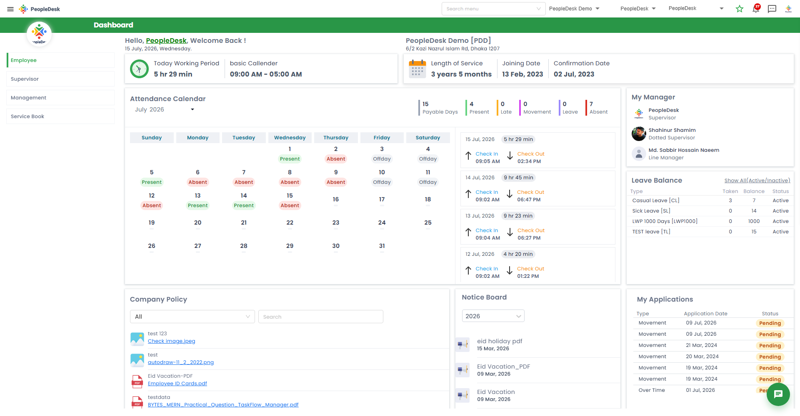
What it does: This is the personal landing page every employee sees after logging in. It gives a quick snapshot of the day's attendance, leave balances, length of service, company documents, and personal application history, all in one place.
Key fields / columns:
Buttons & actions:
How to use it: 1. Log in and land on this page automatically. 2. Check your today's working hours and leave balances at a glance. 3. Use the Attendance Calendar month dropdown to review past attendance. 4. Open Company Policy or Notice Board files for reference. 5. Track pending applications (e.g., Movement, Overtime) in the My Applications table.
Pro-tip: The Leave Balance panel only shows active leave types by default — click "Show All (Active/Inactive)" if a leave type you expect (like a special one-off leave) seems to be missing.
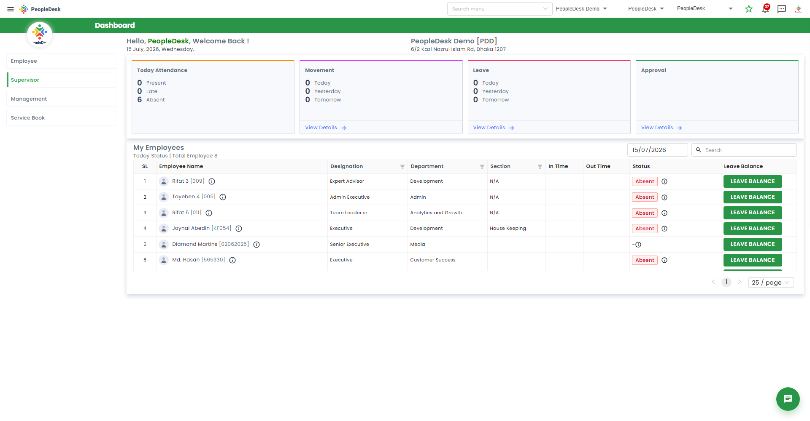
What it does: Gives supervisors a team-level overview of today's attendance, movement, leave, and pending approvals for the people who report to them, plus a live list of their direct reports.
Key fields / columns:
Buttons & actions:
How to use it: 1. Open the Supervisor tab from the dashboard sidebar. 2. Scan the top summary cards for today's team attendance/movement/leave snapshot. 3. Click "View Details" on any card for the full breakdown. 4. Use the date field or search box to check a different day or find a specific team member. 5. Click "LEAVE BALANCE" next to an employee to see their available leave.
Pro-tip: Change the date field to a past date to quickly audit whether a specific team member was marked Present/Absent on that day, without leaving the dashboard.
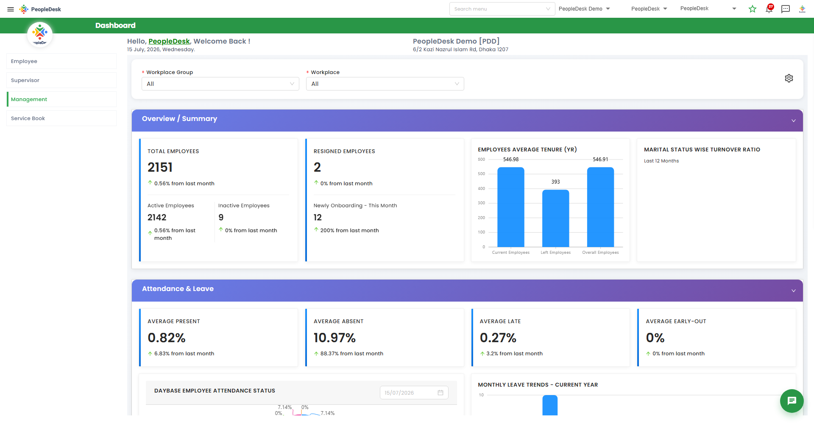
What it does: A company-wide analytics dashboard for management, summarizing headcount, turnover, tenure, and attendance/leave trends across the whole organization.
Key fields / columns:
Buttons & actions:
How to use it: 1. Select a Workplace Group and Workplace (or leave as "All" for the whole company). 2. Review the Overview/Summary cards for headcount and turnover trends. 3. Expand the Attendance & Leave section to check average attendance percentages and monthly leave trends. 4. Use the date picker to inspect attendance on a specific day.
Pro-tip: Filter by Workplace before reading the turnover/tenure charts — the "All" view blends every location together and can mask problems specific to one site.
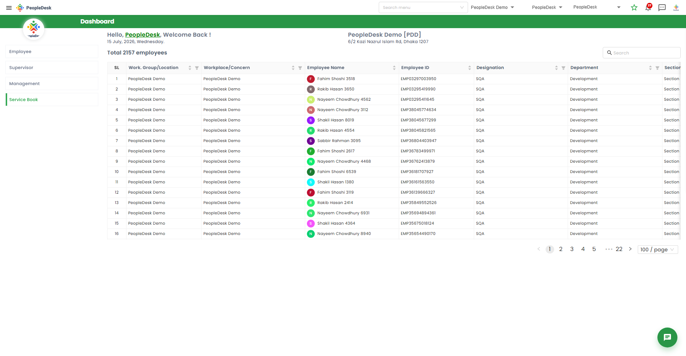
What it does: A master, searchable directory of every employee in the system with their workplace, ID, designation, department, and section — useful as a quick company-wide employee register.
Key fields / columns:
Buttons & actions:
How to use it: 1. Open the Service Book tab. 2. Use the Search box to jump to a specific employee. 3. Click a column's filter icon to narrow results (e.g., by Department). 4. Page through the roster using the pagination controls, or increase the page size to see more rows at once.
Pro-tip: Sort by "Department" or "Designation" first if you need to review an entire team's records together, rather than scrolling through the full alphabetical list.
The HR admin's day-to-day workspace for maintaining every employee record and processing the requests employees submit — confirmations, attendance adjustments, leave, loans, transfers, and the full library of HR reports.
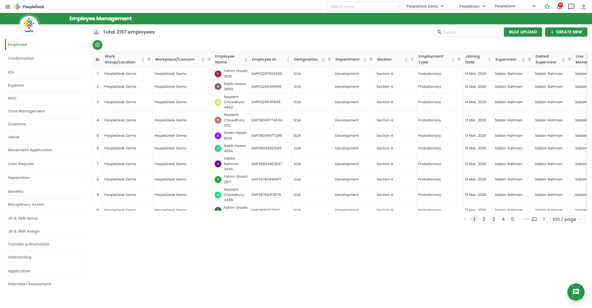
What it does: This is the master employee database for the whole organization — a searchable, sortable directory of every employee record in PeopleDesk. The header confirms the scale of this table: "Total 2157 employees."
Key fields / columns: Work Group/Location, Workplace/Concern, Employee Name (with avatar), Employee ID, Designation, Department, Section, Employment Type, Joining Date, Supervisor, Dotted Supervisor, Line Manager, and more columns that continue off-screen to the right (the visible view is cut off after "Line Manager" — because this is the largest table in the system, scroll right to see additional columns not captured in the screenshot).
Buttons & actions:
If a _create file is listed for this page: embed it too.
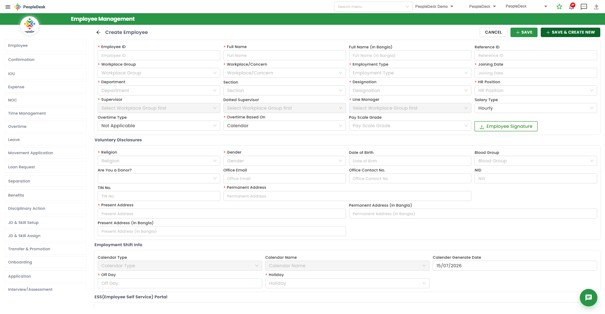
The Create form is organized into clear sections:
Buttons & actions on the Create form: CANCEL (discards and returns to the list), + SAVE (creates the employee and returns to the list), + SAVE & CREATE NEW (creates this employee and immediately reopens a blank form for the next one — useful for onboarding several employees in a row).
How to use it:
Pro-tip: Before creating employees one at a time, check whether BULK UPLOAD already has a template — it is far faster when onboarding a batch of new hires, and it reduces the risk of typos across required fields like Employee ID and Workplace Group.
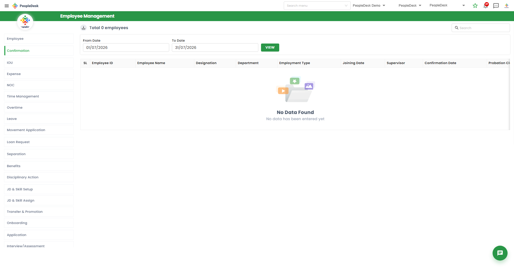
What it does: Tracks employees whose probation period is ending and who are due for confirmation (converting from probationary to permanent status) within a chosen date range.
Key fields / columns: Employee ID, Employee Name, Designation, Department, Employment Type, Joining Date, Supervisor, Confirmation Date, Probation Close (column partially cut off on the right, indicating more columns exist beyond the visible frame).
Buttons & actions:
Show/detail view: The confirmation_show.png screenshot is identical to the default list view — clicking VIEW for the pre-filled date range (01/07/2026 to 31/07/2026) simply returned "No Data Found. No data has been entered yet," meaning no employees currently fall due for confirmation in that window. It is not a separate record-detail screen.
How to use it:
Pro-tip: If you expect results but see "No Data Found," double-check the date range first — this page only shows employees whose confirmation/probation-close dates fall inside the selected window.
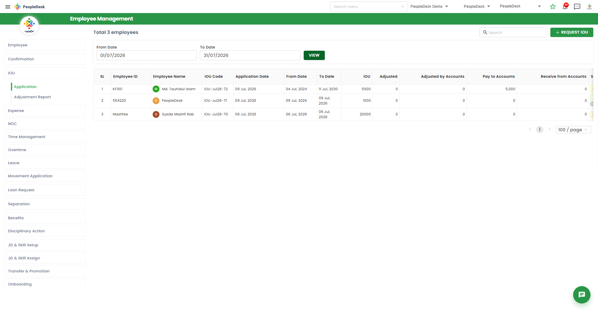
What it does: This is the IOU (an advance/loan-style request an employee raises against future settlement — literally "I Owe You") Application list, showing all IOU requests raised by employees within a date range, along with their adjustment/repayment status.
Key fields / columns: Employee ID, Employee Name, IOU Code, Application Date, From Date, To Date, IOU (amount requested), Adjusted, Adjusted by Accounts, Pay to Accounts, Receive from Accounts, and at least one more column cut off on the right edge (marked with an info icon).
Buttons & actions:
Show view: application_show.png is the same list (filtered to the same date range), confirming this is a live results view rather than a separate modal.
How to use it:
Pro-tip: Use the Search box combined with a wide date range when tracing a specific employee's full IOU history rather than repeatedly narrowing the date filter.
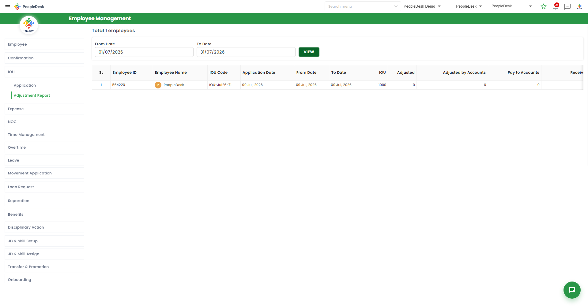
What it does: Shows the same IOU records filtered specifically for reviewing how each advance is being adjusted (repaid or offset) — a sub-view under IOU used to reconcile outstanding IOU balances.
Key fields / columns: Employee ID, Employee Name, IOU Code, Application Date, From Date, To Date, IOU, Adjusted, Adjusted by Accounts, Pay to Accounts, Receive (column cut off on the right — more columns exist beyond the visible frame).
Buttons & actions:
Show view: adjustment_report_show.png displays the identical single-row result (Employee 564220 / IOU-Jul26-71) as the default view — this is the live filtered list, not a separate popup.
How to use it:
Pro-tip: Cross-check this report against the Application list periodically — an IOU with a non-zero balance and no recent adjustment activity may need a follow-up with Accounts.
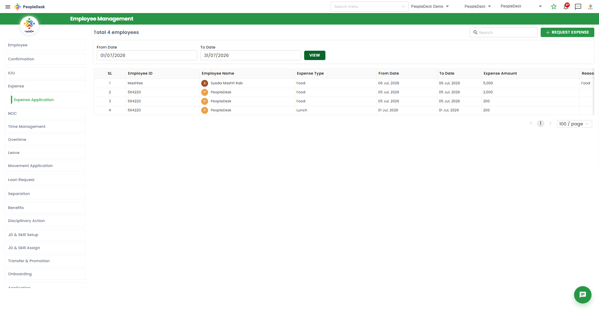
What it does: Lists employee expense reimbursement requests (e.g., food, lunch, travel expenses) submitted for a given date range.
Key fields / columns: Employee ID, Employee Name, Expense Type, From Date, To Date, Expense Amount, Reason (column cut off on the right edge).
Buttons & actions:
Show view: expense_application_show.png is identical to the default list — the same 4 expense records for the same date range, confirming this is the live table rather than a distinct detail screen.
How to use it:
Pro-tip: Group similar expense types (e.g., multiple "Food" entries) together when reviewing, since the table doesn't total amounts by type automatically — export the list if you need a summed total.
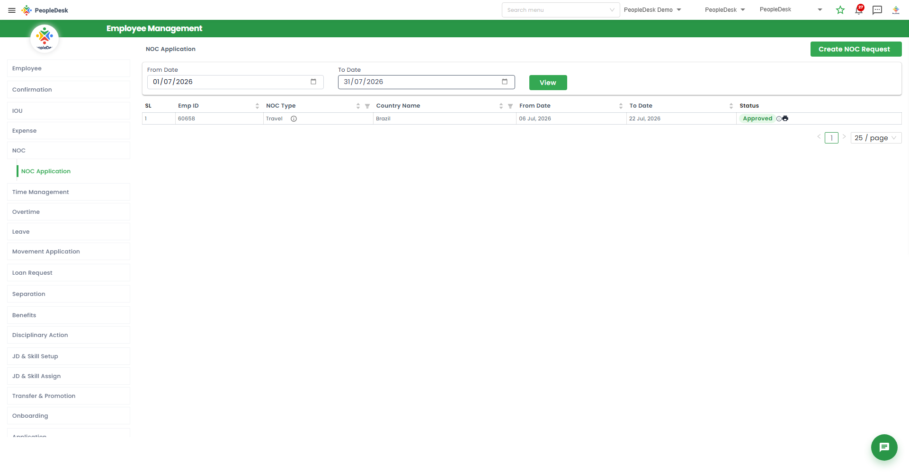
What it does: Manages NOC (No Objection Certificate — an official letter confirming the employer has no objection to an employee's request, e.g., for travel abroad) applications, showing their type, destination country, date range, and approval status.
Key fields / columns: Emp ID, NOC Type, Country Name, From Date, To Date, Status (e.g., "Approved").
Buttons & actions:
If a _create file is listed for this page: embed it too.
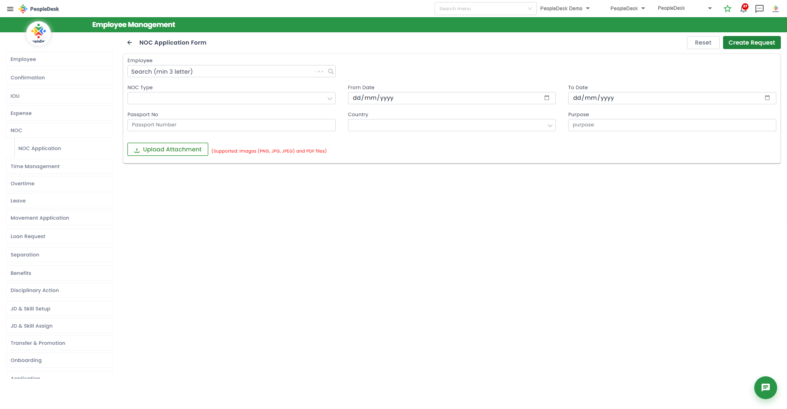
Create form fields: Employee (search, min 3 letters), NOC Type (dropdown), From Date, To Date, Passport No, Country (dropdown), Purpose, and an Upload Attachment button (supports Images: PNG, JPG, JPEG, and PDF files).
Buttons & actions on the Create form: Reset (clears the form), Create Request (submits the NOC application).
How to use it:
Pro-tip: Attach the passport copy or travel itinerary at request time using Upload Attachment — it speeds up approval since reviewers won't need to request it separately.
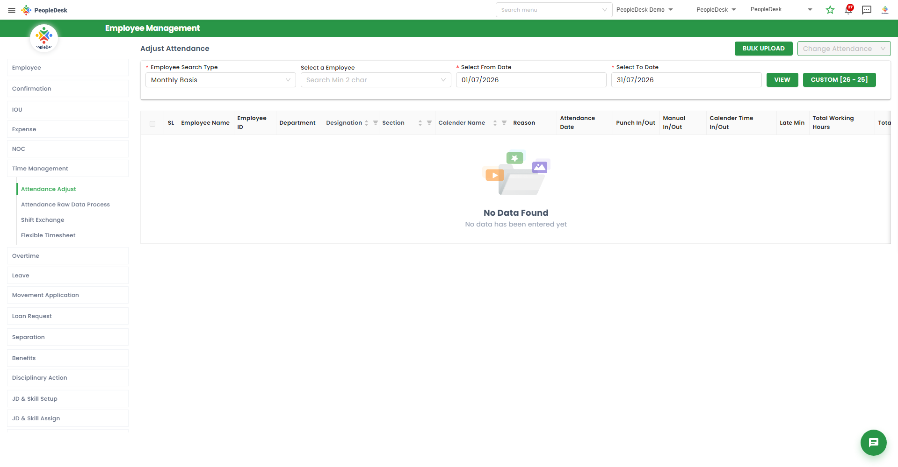
What it does: Lets HR or supervisors review and manually correct an employee's daily punch-in/punch-out attendance records — useful when the biometric/calendar system missed a punch or logged it incorrectly.
Key fields / columns: Employee Name, Employee ID, Department, Designation, Section, Calender Name, Reason, Attendance Date, Punch In/Out, Manual In/Out, Calender Time In/Out, Late Min, Total Working Hours, and further columns cut off on the right (more columns exist beyond the visible frame).
Buttons & actions:
Show view: attendance_adjust_show.png shows the same page after a search returned real data — 11+ rows for employee "PeopleDesk" (564220) across July 2026, with Punch In/Out times, Late Min, and Total Working Hours populated. This confirms the page is a live, working attendance table (the first screenshot simply had no results for its default filter).
How to use it:
Pro-tip: Watch the Late Min column — it flags exactly how many minutes late an employee's punch-in was relative to their scheduled Calendar Time, which is useful for late-arrival policy enforcement.
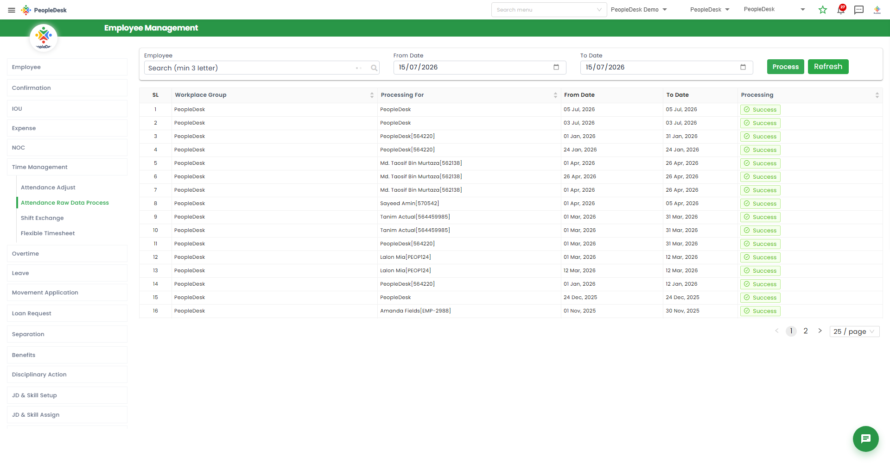
What it does: Processes raw punch/biometric attendance data into the system's usable attendance records for a chosen employee and date range, and shows a log of past processing runs.
Key fields / columns: SL, Workplace Group, Processing For (employee or group), From Date, To Date, Processing (status, e.g., "Success").
Buttons & actions:
How to use it:
Pro-tip: If an employee's Attendance Adjust page is missing recent punches, run this Raw Data Process for their date range first — attendance often needs to be processed from raw data before it appears elsewhere.
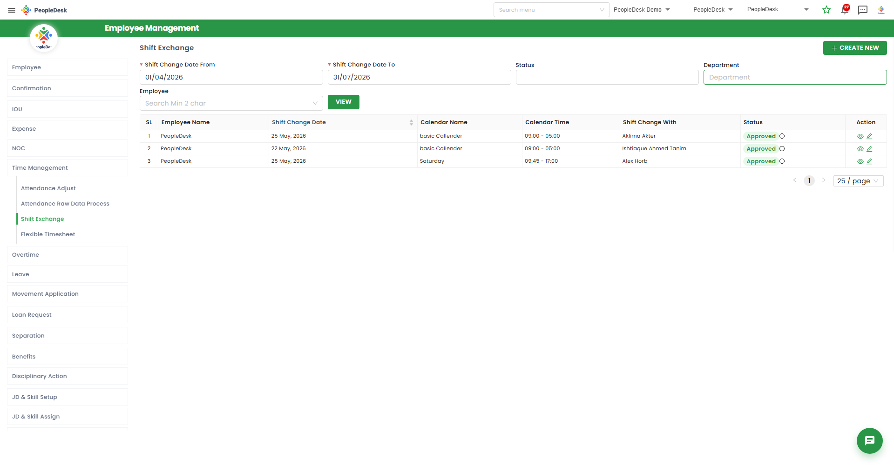
What it does: Manages requests where two employees swap their scheduled work shifts/calendars on a given date, and tracks the approval status of each swap.
Key fields / columns: Employee Name, Shift Change Date, Calendar Name, Calendar Time, Shift Change With (the other employee), Status (e.g., "Approved"), Action.
Buttons & actions:
If a _create file is listed for this page: embed it too.
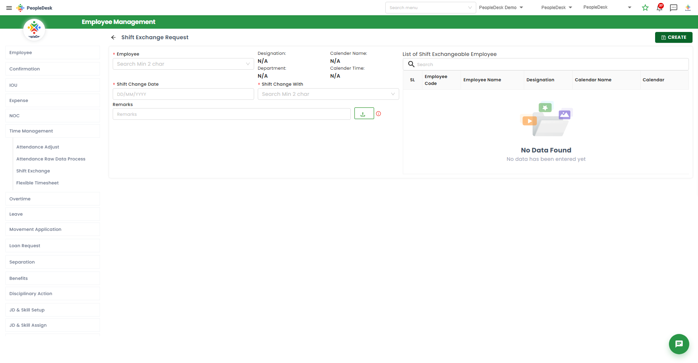
Create form fields: Employee (search), Shift Change Date, Shift Change With (search for the other employee), Remarks, plus read-only info fields that auto-fill once an employee is selected: Designation, Department, Calender Name, Calender Time. There is also an attachment upload button and a List of Shift Exchangeable Employee panel on the right with its own search box (shows "No Data Found" until an employee and date are selected).
Buttons & actions on the Create form: CREATE (submits the shift exchange request).
How to use it:
Pro-tip: Select the Employee and Shift Change Date first — the "List of Shift Exchangeable Employee" panel only populates with valid swap candidates once those fields are filled in.
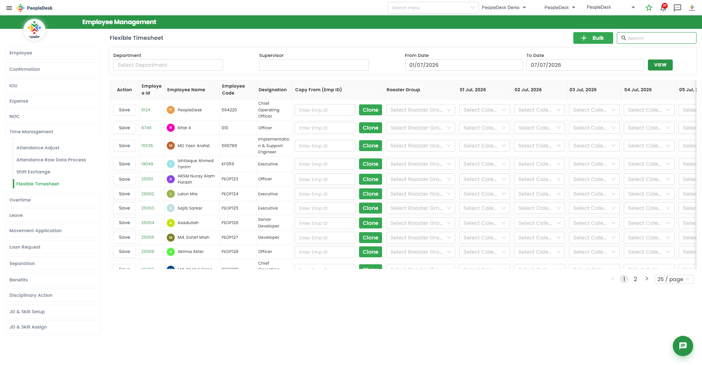
What it does: A bulk grid for assigning or copying each employee's daily work calendar/roster (per day, per employee) over a date range — useful for teams with flexible or rotating schedules.
Key fields / columns: Employee Id, Employee Name, Employee Code, Designation, Copy From (Emp ID), Roaster Group, and then one column per day in the selected range (01 Jul, 2026, 02 Jul, 2026, 03 Jul, 2026, etc., continuing off-screen — more date columns exist beyond the visible frame).
Buttons & actions:
_create screenshot) with Download Template and Bulk Upload options for mass-updating timesheets via spreadsheet.If a _create file is listed for this page: embed it too.
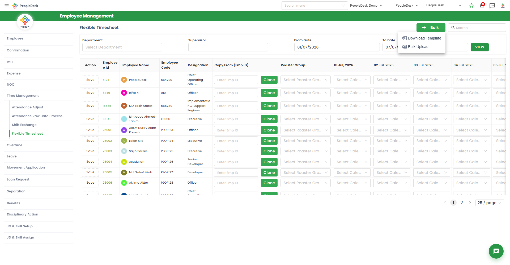
The "create" screenshot shows the + Bulk button's dropdown menu open, revealing two options: Download Template (get the spreadsheet format to fill in offline) and Bulk Upload (import the completed spreadsheet back into the system). This is not a separate creation form — it's the bulk-import mechanism for this grid.
Show view: flexible_timesheet_show.png shows the same grid slightly dimmed/loading, consistent with the page having just processed an action (like opening the Bulk menu) — it is the same table, not a distinct detail page.
How to use it:
Pro-tip: When many employees share the same rotating schedule, set up one employee's timesheet correctly first, then use Clone to copy it to the rest — it's much faster than setting each day's dropdown individually per person.
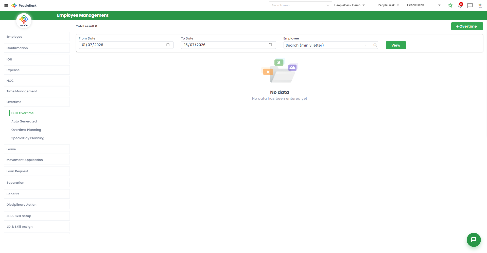
What it does: Lists overtime (OT) entries recorded for employees over a date range, and provides a way to add new OT entries either one at a time or in bulk.
Key fields / columns: The table was empty in this view ("No data. No data has been entered yet"), so no data columns are visible; the page provides From Date, To Date, and Employee search filters instead.
Buttons & actions:
_create screenshot) — for recording new overtime.If a _create file is listed for this page: embed it too.
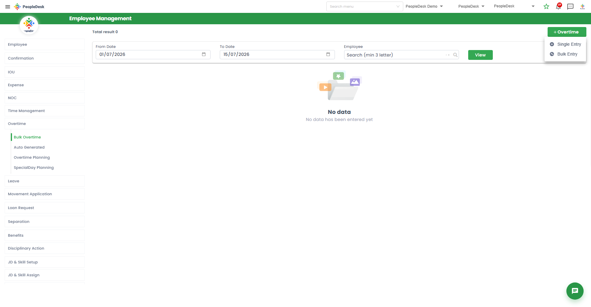
The "create" screenshot shows the + Overtime button's dropdown open with two choices: Single Entry (record OT for one employee/date) and Bulk Entry (record OT for multiple employees/dates at once).
Show view: bulk_overtime_show.png is identical to the base list view (still "No data" for the same filter) — confirming this is the same live table, not a distinct detail screen.
How to use it:
Pro-tip: Use Bulk Entry whenever an entire team worked overtime on the same date (e.g., a weekend release) — it avoids repeating the same date and reason across dozens of Single Entry forms.
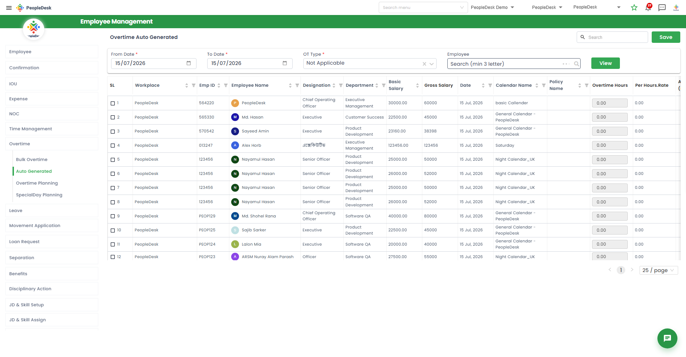
What it does: Automatically calculates and displays potential overtime for employees based on their salary and calendar data for a selected date and OT Type, so HR can review and approve system-calculated OT hours rather than entering them manually.
Key fields / columns: Workplace, Emp ID, Employee Name, Designation, Department, Basic Salary, Gross Salary, Date, Calendar Name, Policy Name, Overtime Hours, Per Hours Rate, and additional columns cut off on the right.
Buttons & actions:
Show view: auto_generated_show.png shows the same page with a different employee set/results after re-running the view for the same date (15 Jul 2026) — it is the live filtered table, not a separate detail popup.
How to use it:
Pro-tip: Double-check the OT Type filter before reviewing — leaving it on "Not Applicable" may hide rows that belong to a specific overtime policy your organization uses.
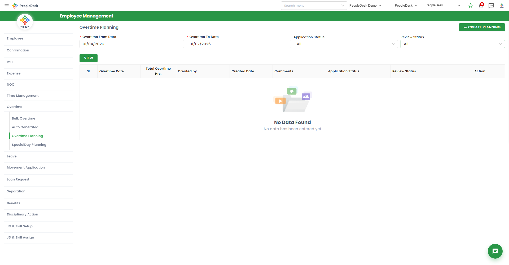
What it does: Lets HR pre-plan overtime for employees ahead of time (rather than recording it after the fact), and tracks each plan through an application/review approval status.
Key fields / columns: Overtime Date, Total Overtime Hrs., Created by, Created Date, Comments, Application Status, Review Status, Action.
Buttons & actions:
If a _create file is listed for this page: embed it too.
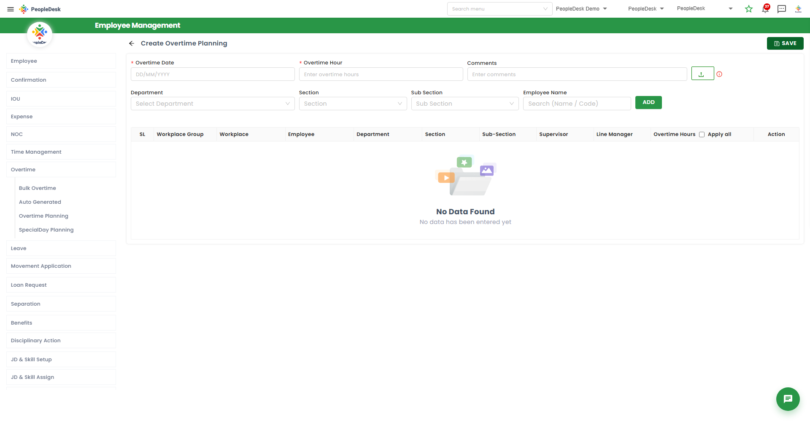
Create form fields: Overtime Date, Overtime Hour, Comments (plus an attachment upload icon), and an employee-targeting section: Department, Section, Sub Section, Employee Name (search by Name/Code) with an ADD button. Once added, employees appear in a table below with columns: Workplace Group, Workplace, Employee, Department, Section, Sub-Section, Supervisor, Line Manager, Overtime Hours (editable, with an "Apply all" checkbox to apply the same hours to every added employee), and Action (to remove a row).
Buttons & actions on the Create form: SAVE (submits the overtime plan).
How to use it:
Pro-tip: Use the Apply all checkbox when planning overtime for an entire section working the same extra hours (e.g., a weekend shift) — it saves you from re-entering the same hour value on every row.
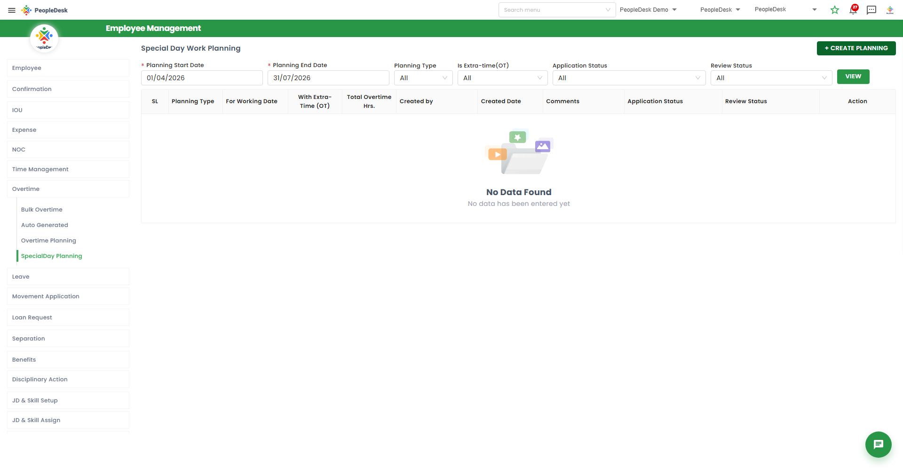
What it does: Similar to Overtime Planning, but specifically for planning work on special/non-standard days (e.g., holidays or weekends), optionally combined with extra-time (OT) tracking.
Key fields / columns: Planning Type, For Working Date, With Extra-Time (OT), Total Overtime Hrs., Created by, Created Date, Comments, Application Status, Review Status, Action.
Buttons & actions:
If a _create file is listed for this page: embed it too.
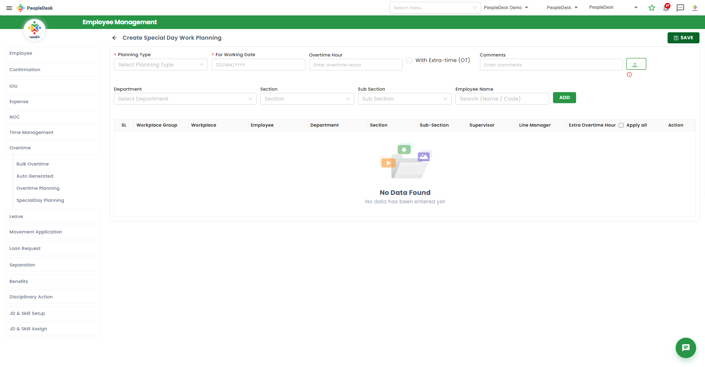
Create form fields: Planning Type (dropdown, required), For Working Date (required), Overtime Hour, a With Extra-time (OT) checkbox, Comments (with attachment upload), and the same employee-targeting section as Overtime Planning: Department, Section, Sub Section, Employee Name search with ADD. Added employees appear in a table with Workplace Group, Workplace, Employee, Department, Section, Sub-Section, Supervisor, Line Manager, Extra Overtime Hour (editable, with "Apply all" checkbox), and Action.
Buttons & actions on the Create form: SAVE (submits the special day plan).
How to use it:
Pro-tip: Only check With Extra-time (OT) if the special day work should also count toward overtime pay/hours — leaving it unchecked records the planned work day without treating it as OT.
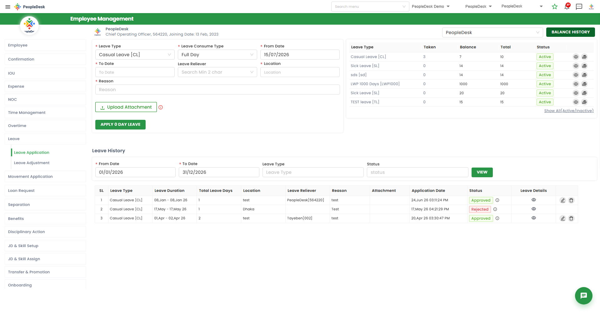
What it does: The self-service leave request page for an employee — shows their current leave balances by type, lets them apply for new leave, and displays their full leave application history with status.
Key fields / columns:
Buttons & actions:
Show view: leave_application_show.png is identical to the default view, confirming this is the live page rather than a separate modal.
How to use it:
Pro-tip: Check the Balance column before applying — the Apply button will calculate the day count automatically once From/To Date are set, so you can confirm you have enough balance before submitting.
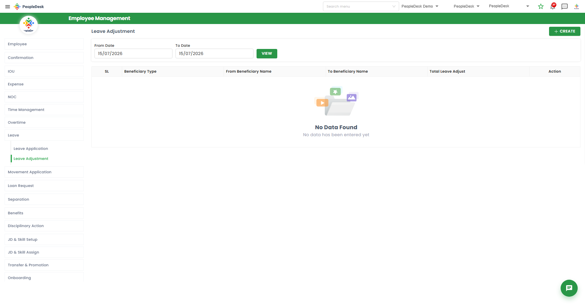
What it does: Allows administrators to transfer or adjust leave balance between two employees or leave policies (e.g., correcting an incorrect balance, or moving unused leave from one type to another).
Key fields / columns: Beneficiary Type, From Beneficiary Name, To Beneficiary Name, Total Leave Adjust, Action.
Buttons & actions:
If a _create file is listed for this page: embed it too.
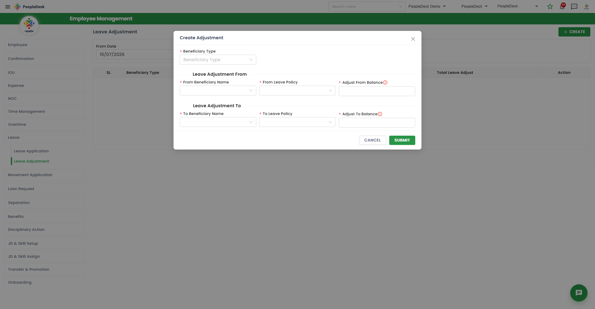
Create form fields (modal titled "Create Adjustment"): Beneficiary Type (dropdown), then two mirrored sections — Leave Adjustment From (From Beneficiary Name, From Leave Policy, Adjust From Balance) and Leave Adjustment To (To Beneficiary Name, To Leave Policy, Adjust To Balance).
Buttons & actions on the Create form: CANCEL (closes without saving), SUBMIT (creates the leave adjustment).
Show view: leave_adjustment_show.png is identical to the base list view ("No Data Found") — the same live table, not a distinct detail screen.
How to use it:
Pro-tip: Double check From Leave Policy and To Leave Policy match the intended leave types — adjusting between mismatched policies (e.g., Casual Leave to Sick Leave) may not be reversible from this screen.
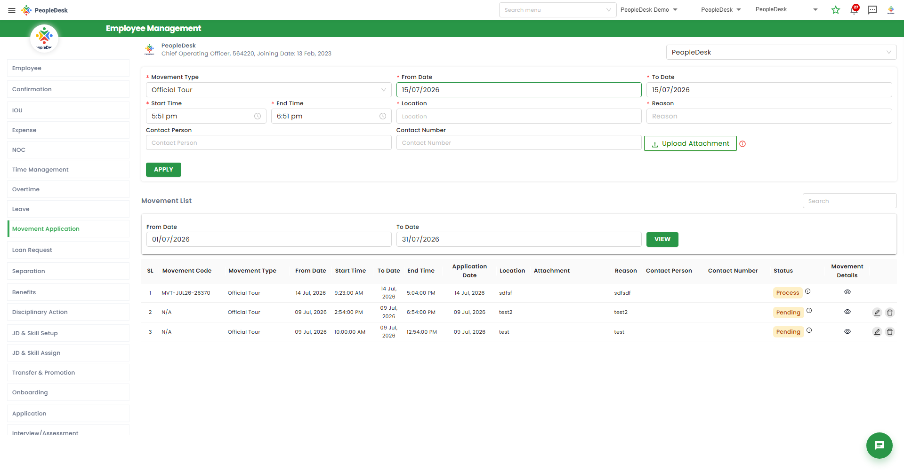
What it does: Lets an employee log official movement out of the office (e.g., an official tour) during work hours, with start/end times and location/contact details, and shows a history of past movement requests with their approval status.
Key fields / columns: Movement Code, Movement Type, From Date, Start Time, To Date, End Time, Application Date, Location, Attachment, Reason, Contact Person, Contact Number, Status, Movement Details.
Buttons & actions:
Show view: movement_application_show.png is identical to the default view — same three movement records and same form state, confirming it's the live page.
How to use it:
Pro-tip: Fill in Contact Person and Contact Number even though they're optional — it helps whoever approves the movement reach the employee quickly if plans change while they're out of office.
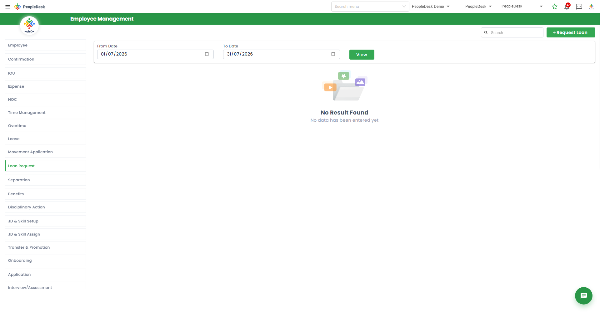
What it does: Manages formal employee loan applications (distinct from the smaller/short-term IOU) — including loan amount, interest, and installment repayment terms.
Key fields / columns: The list was empty in this view ("No Result Found. No data has been entered yet"); the page provides From Date, To Date filters and a Search box instead.
Buttons & actions:
If a _create file is listed for this page: embed it too.
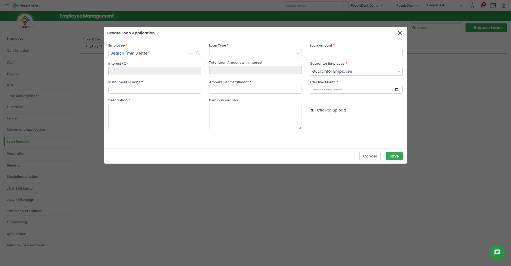
Create form fields (modal titled "Create Loan Application"): Employee (search, min 3 letters), Loan Type, Loan Amount, Interest (%), Total Loan Amount with interest (auto-calculated), Guarantor Employee, Installment Number, Amount Per Installment, Effective Month, Description, Family Guarantor, and a Click to upload attachment area.
Buttons & actions on the Create form: Cancel (closes without saving), Save (submits the loan application).
Show view: loan_request_show.png is identical to the base list view ("No Result Found") for the same date range — the same live table, not a distinct detail screen.
How to use it:
Pro-tip: Confirm the Amount Per Installment × Installment Number roughly matches the Total Loan Amount with interest before saving — this page doesn't appear to validate that the numbers reconcile automatically.
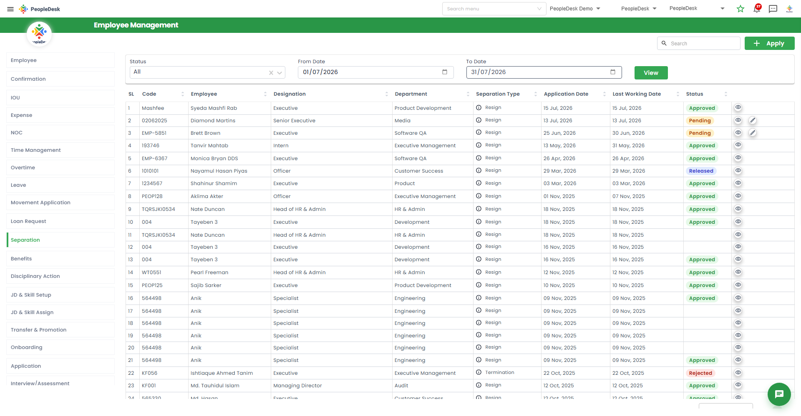
What it does: Tracks employee separations (resignations and terminations) from application through to approval, including last working date and current approval status — this is the formal offboarding request list.
Key fields / columns: Code, Employee, Designation, Department, Separation Type (e.g., "Resign"), Application Date, Last Working Date, Status (e.g., Approved, Pending, Released, Rejected).
Buttons & actions:
If a _create file is listed for this page: embed it too.
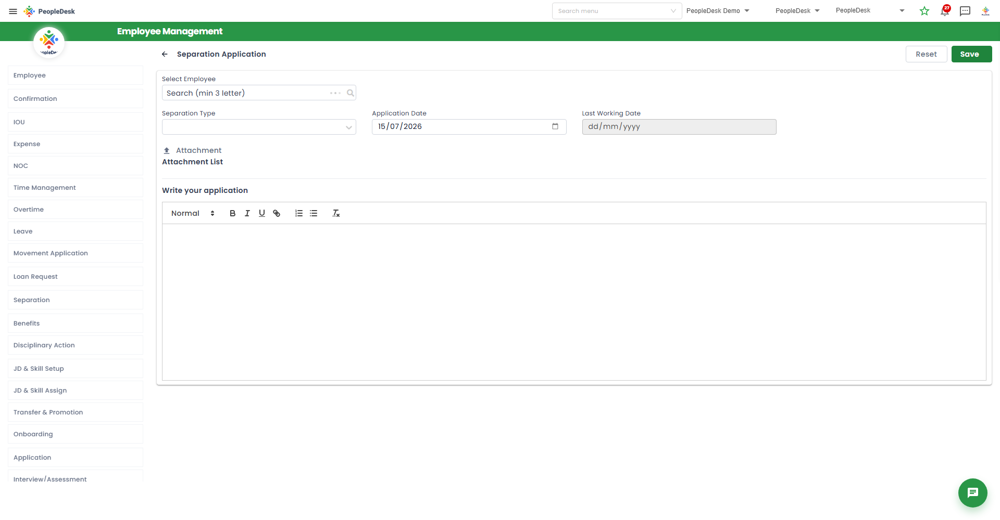
Create form fields (titled "Separation Application"): Select Employee (search, min 3 letters), Separation Type (dropdown), Application Date (defaults to today), Last Working Date, an Attachment upload with an Attachment List, and a rich-text Write your application editor (with Normal/Bold/Italic/Underline/Link/list formatting) for the resignation/termination letter text.
Buttons & actions on the Create form: Reset (clears the form), Save (submits the separation application).
How to use it:
Pro-tip: Use the rich-text editor's formatting (bold, lists) to structure a clear resignation letter directly in the application — it becomes part of the employee's official separation record without needing a separate uploaded document.
What it does: This page lets HR record and track "leave encashment" payouts — a benefit where an employee's unused leave days are converted into a cash payment, either alongside their regular salary or separately.
Key fields / columns: SL, Employee, Application Date, Disbursement Type, Total Benefits Amount, Status.
Buttons & actions:
How to use it:
Pro-tip: If the table shows "No Data Found," double-check your date range first — a common mistake is leaving the default range set to a period with no applications.
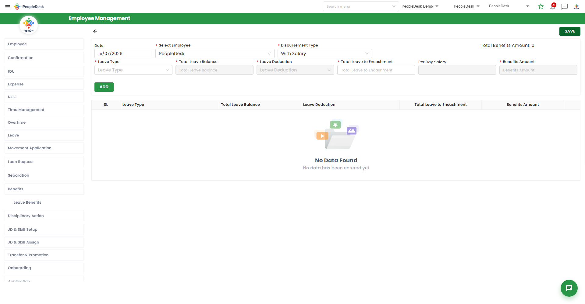
Create form fields: Date, Select Employee, Disbursement Type (e.g. "With Salary"), Leave Type, Total Leave Balance, Leave Deduction, Total Leave to Encashment, Per Day Salary, Benefits Amount — plus a running Total Benefits Amount counter at the top right. An ADD button adds the configured leave-type row to a table below (columns: Leave Type, Total Leave Balance, Leave Deduction, Total Leave to Encashment, Benefits Amount), so multiple leave types can be encashed in one application. SAVE commits the whole application.
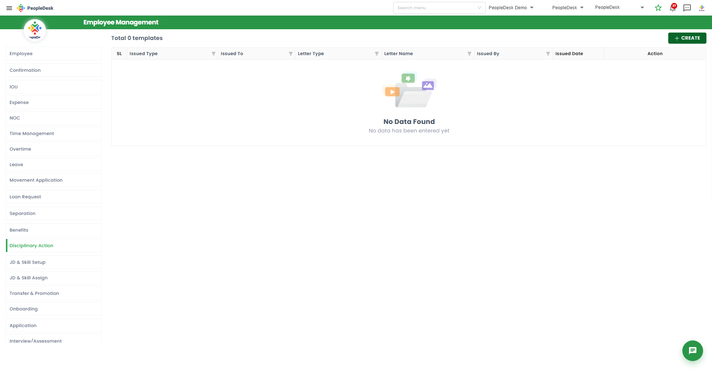
What it does: This page manages formal disciplinary letters and punishment records issued to employees (e.g. warning or punishment letters), tracking who issued them and when.
Key fields / columns: SL, Letter Type, Letter Name, Issued To, Issued By, Issued Date, Action.
Buttons & actions:
How to use it:
Pro-tip: Use the Letter Type filter if your organization issues multiple templates (e.g. warning vs. punishment) — it's faster than scanning the whole list.
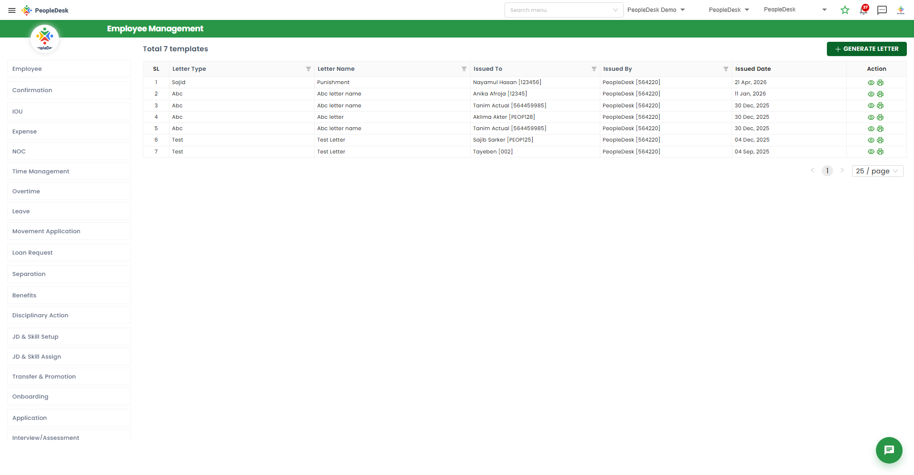
Create form: The create screen is the same list view before any letters exist — it shows "Total 0 templates" with an empty table (SL, Issued Type, Issued To, Letter Type, Letter Name, Issued By, Issued Date, Action) and a + CREATE button in the top-right to begin generating the first letter template/record.
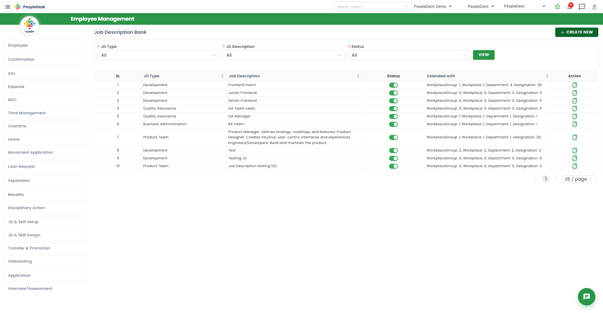
What it does: JD Bank ("Job Description Bank") is the central repository of job description templates, organized by JD Type (e.g. Development, Quality Assurance, Business Administration), which can later be extended/assigned to specific workplace groups, departments, or designations.
Key fields / columns: SL, JD Type, Job Description, Status (enabled/disabled toggle), Extended With (shows counts of WorkplaceGroup, Workplace, Department, Designation the JD has been extended to), Action.
Buttons & actions:
How to use it:
Pro-tip: Toggle a JD's Status off instead of deleting it if it's temporarily out of use — the Extended With counts show you it may still be tied to active departments/designations.
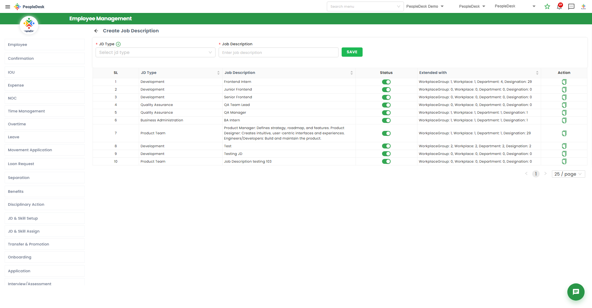
Create form fields: JD Type (with a "+" quick-add icon to create a new type on the fly) and Job Description (free-text). Click SAVE to add it to the table below, which lists all existing JD entries for reference while you create a new one.
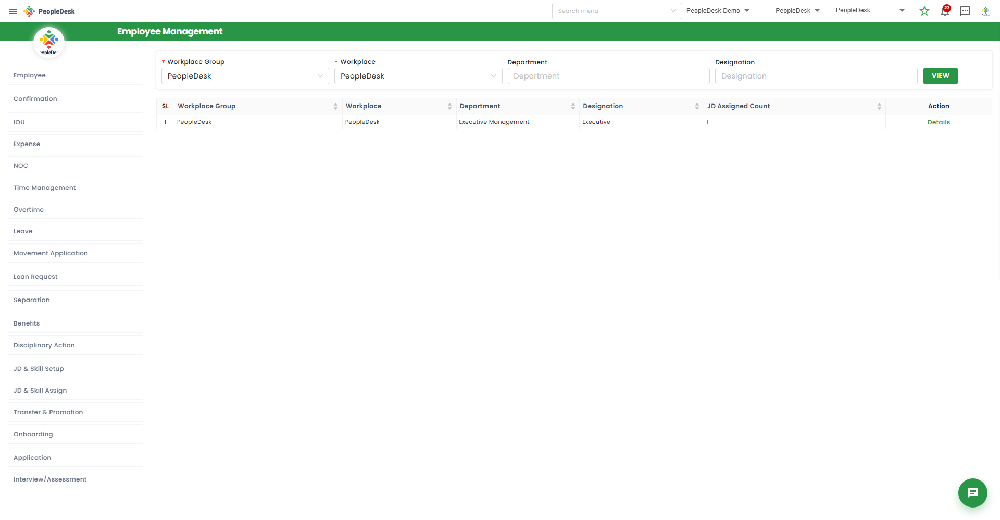
What it does: JD Extend lets you see how many job descriptions have been assigned ("extended") to a specific Workplace Group / Workplace / Department / Designation combination, so you can confirm coverage before assigning JDs to more roles.
Key fields / columns: SL, Workplace Group, Workplace, Department, Designation, JD Assigned Count, Action.
Buttons & actions:
How to use it:
Pro-tip: A JD Assigned Count of 0 or a missing row for a designation is a quick way to spot roles that still need a job description extended to them.
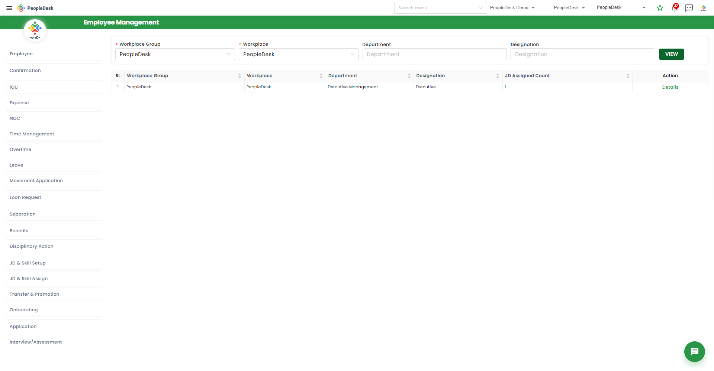
Shows: This screenshot is functionally identical to the main JD Extend list — it displays the same Workplace Group/Workplace/Department/Designation search with one result row and a "Details" action link. There is no separate detail modal visible; the "Details" link is where a fuller breakdown would open.
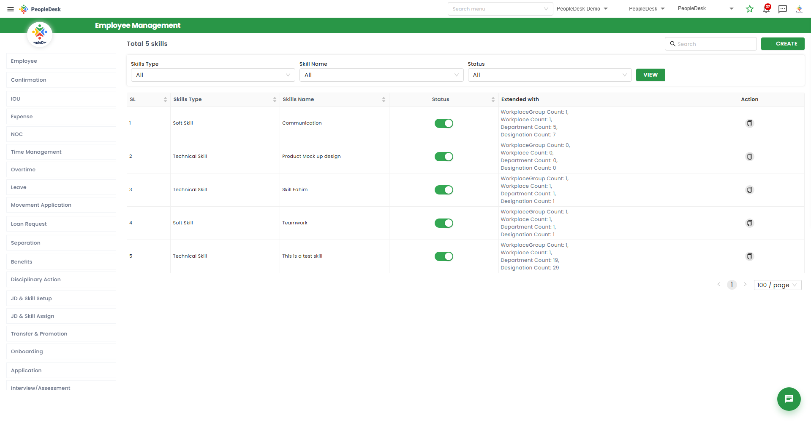
What it does: Skills Bank is the master repository of defined skills (both Soft Skills and Technical Skills) that can later be assigned to employees, departments, or designations across the organization.
Key fields / columns: SL, Skills Type, Skills Name, Status (toggle), Extended With (WorkplaceGroup Count, Workplace Count, Department Count, Designation Count), Action.
Buttons & actions:
How to use it:
Pro-tip: Group related skills under a consistent Skills Type (Soft Skill vs. Technical Skill) so filtering and reporting stay meaningful as the bank grows.
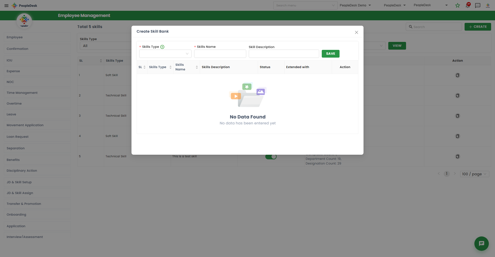
Create form fields: Skills Type (dropdown with a "+" quick-add), Skills Name, Skill Description. Click SAVE to add the new skill; the modal also lists existing skill-bank entries for reference (currently empty in this view).
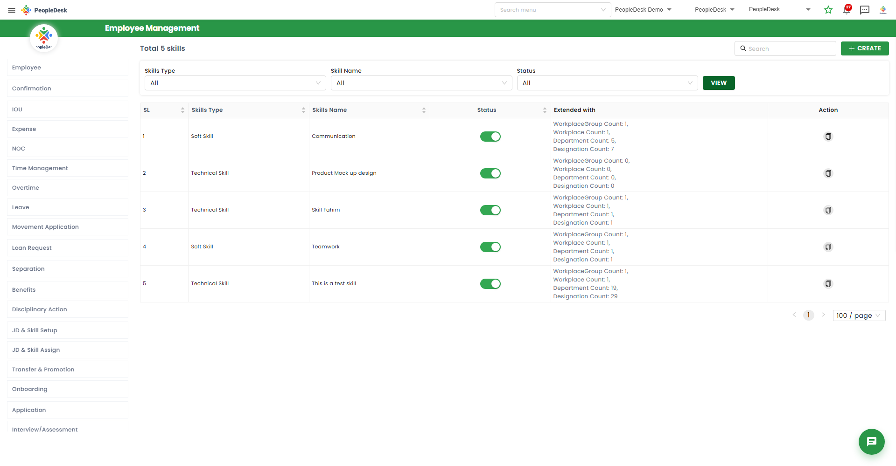
Shows: This is the same Skills Bank list screen as the main view (5 skills, same columns and filters) — it does not display a distinct detail page; it confirms the list state after a search/view action.
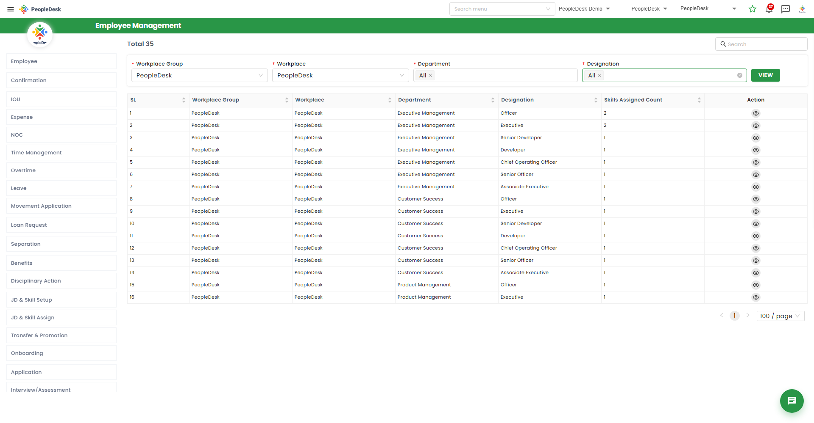
What it does: Skills Extend shows how many skills have been extended to each Workplace Group / Workplace / Department / Designation, mirroring JD Extend but for the skills catalogue.
Key fields / columns: SL, Workplace Group, Workplace, Department, Designation, Skills Assigned Count, Action.
Buttons & actions:
How to use it:
Pro-tip: Sort by Skills Assigned Count (column header) to quickly find departments/designations with zero skills mapped, so you can prioritize extending skills there.
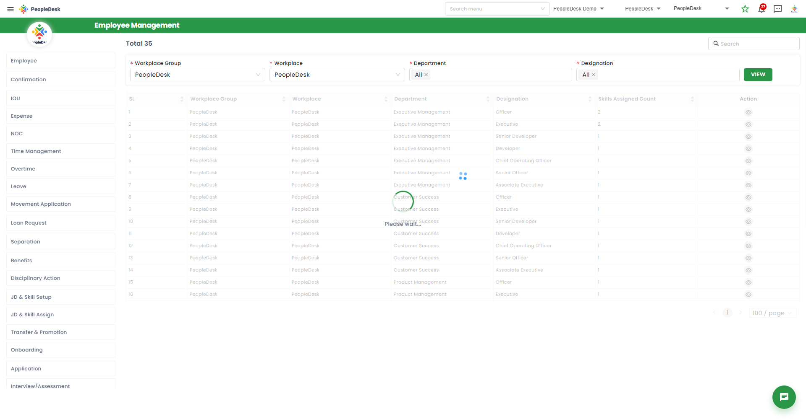
Shows: This screenshot captures the same list mid-refresh (a "Please wait..." loading spinner overlays the table after clicking an eye icon), confirming this is a loading state of the Skills Extend list rather than a separate detail screen.
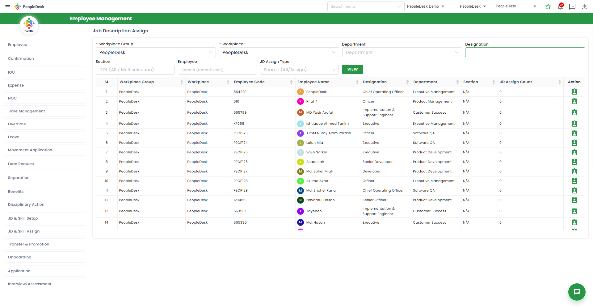
What it does: JD Assign is where individual employees are linked to a specific job description, based on their workplace, department, section, and designation.
Key fields / columns: SL, Workplace Group, Workplace, Employee Code, Employee Name, Designation, Department, Section, JD Assign Count, Action.
Buttons & actions:
How to use it:
Pro-tip: Use JD Assign Type = "Assign" (already assigned) periodically to audit who has a JD vs. who's still missing one.
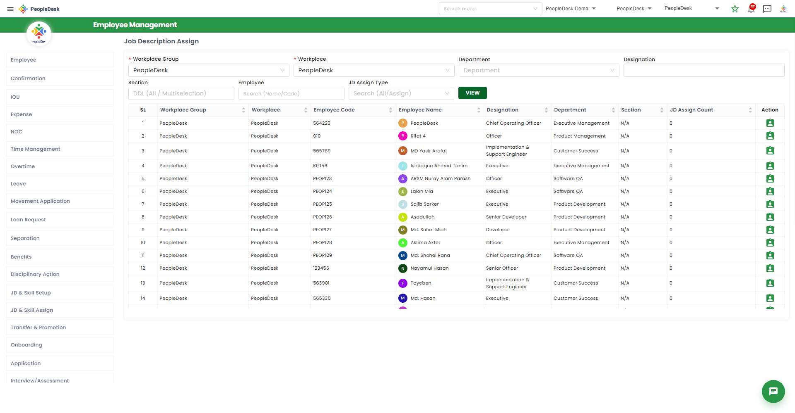
Shows: Identical to the main JD Assign list (same 14+ employee rows and filters) — this is the resulting list view, not a separate detail popup.
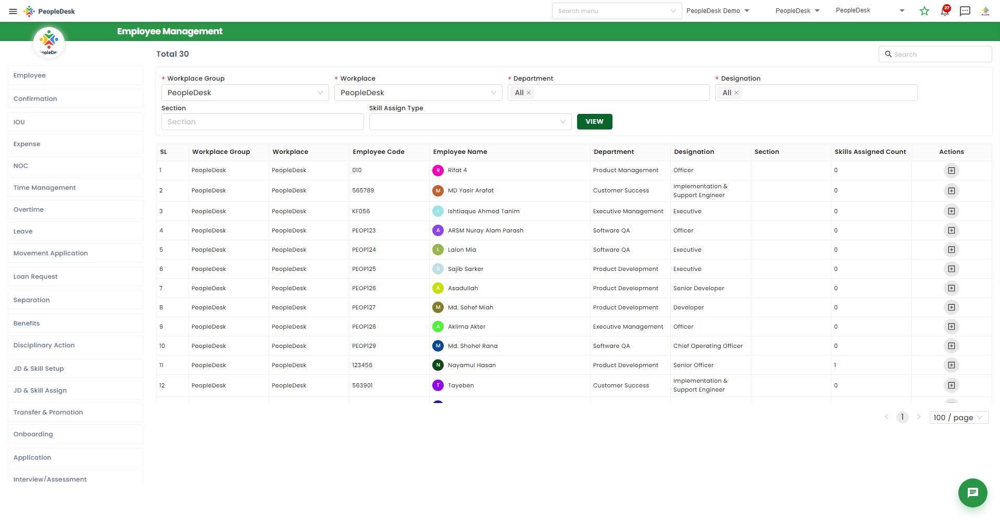
What it does: Skills Assign links specific skills from the Skills Bank to individual employees, so each person's profile reflects the skills they've been credited with.
Key fields / columns: SL, Workplace Group, Workplace, Employee Code, Employee Name, Department, Designation, Section, Skills Assigned Count, Actions.
Buttons & actions:
How to use it:
Pro-tip: Sort by the Skills Assigned Count column to quickly spot employees with 0 skills recorded and prioritize updating their profiles.
Shows: Same list view as the main Skills Assign screen (12+ rows, same columns) — confirms the filtered results rather than showing a distinct modal.
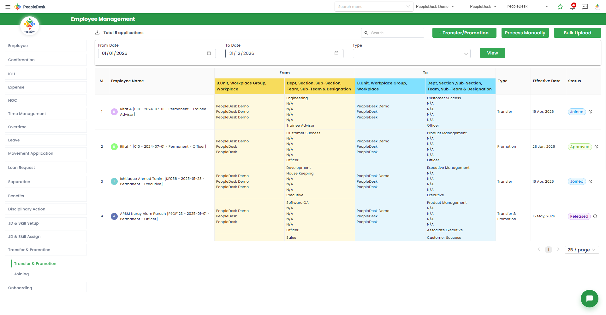
What it does: This page records and tracks employee transfers (moving between departments/workplaces) and promotions (moving to a higher designation), showing the "from" and "to" organizational details side by side.
Key fields / columns: SL, Employee Name, From (B.Unit/Workplace Group/Workplace and Dept/Section/Sub-Section/Team/Sub-Team & Designation), To (same breakdown), Type (Transfer / Promotion / Transfer & Promotion), Effective Date, Status (e.g. Joined, Approved, Released).
Buttons & actions:
How to use it:
Pro-tip: Use Bulk Upload when restructuring an entire department at once — it saves you from creating dozens of individual transfer records by hand.
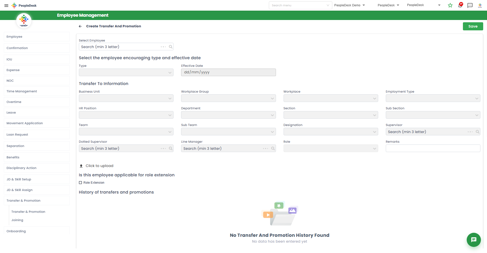
Create form fields: Select Employee (search), Type and Effective Date, then "Transfer To Information": Business Unit, Workplace Group, Workplace, Employment Type, HR Position, Department, Section, Sub Section, Team, Sub Team, Designation, Supervisor, Dotted Supervisor, Line Manager, Role, Remarks, a file upload ("Click to upload"), a "Role Extension" checkbox for role-extension eligibility, and a "History of transfers and promotions" panel showing the employee's past records. Save commits the new transfer/promotion.
What it does: The Joining page tracks employees who have been transferred or promoted and shows whether they have actually "joined" their new position, including release dates from the old role.
Key fields / columns: SL, Employee, From (B.Unit/Workplace Group/Workplace and Dept/Section & Designation), To (same), Type, Effective Date, Release Date, Status (Joined / promoted).
Buttons & actions:
How to use it:
Pro-tip: Records still showing "promoted" instead of "Joined" in Status are awaiting confirmation — review these regularly so promotions don't sit unconfirmed.
Shows: Identical to the main Joining list (same 5 records, same From/To breakdown and Join/Delete actions) — this is the standard list view rather than a separate record detail.
What it does: Onboarding is where new hires are registered into the system before or as they join — capturing their basic identity and organizational placement.
Key fields / columns: SL, Workplace Group, Workplace, Department, Section, Designation, HR Position, Full Name, Mobile No, Email, NID No, Emp. Id, Status, Actions.
Buttons & actions:
How to use it:
Pro-tip: Workplace Group and Workplace are mandatory before you can view results — if VIEW shows validation errors, fill these two in first.
Create form fields (in the "Onboard Create" modal): Full Name, Mobile No, Email, NID, Workplace Group, Workplace, Department, Designation, Section, HR Position. Click CREATE to save the new onboarding record.
Shows: This is the same Onboarding list screen after clicking VIEW without filling the required fields — it displays validation errors "Workplace Group is required" and "Workplace is required" in red beneath those dropdowns. It is not a record detail screen; it demonstrates the required-field validation on this filter form.
What it does: This page lets employees (or HR on their behalf) apply for official documents (such as certificates or letters) and tracks the status of those applications.
Key fields / columns: SL, Employee Code, Employee Name, Designation, Department, Application Type, Application Date, Status, Action.
Buttons & actions:
How to use it:
Pro-tip: Use the Employee search (minimum 2 characters) instead of scrolling the full list when you just need to check one person's document request status.
Create form fields: Employee (search, min 2 characters — auto-fills Designation and Department once selected), Application Type (with a "+" quick-add to define new types), Remarks, and a file-upload control (with an info icon for upload guidance). Click CREATE (top right) to submit.
What it does: This page lists employees for assessment purposes, filterable by their Team Lead (supervisor) and Employment Type, as part of the exit-interview/assessment workflow.
Key fields / columns: SL, Workplace Group, Workplace, Employee ID, Employee Name, Designation, Department, Employment Type.
Buttons & actions:
How to use it:
Pro-tip: Both Team Lead and Employment Type are mandatory — if the VIEW button doesn't seem to do anything, check for the red "required" validation messages under these two fields.
Shows: This is the same Employee Assessment list after clicking VIEW without filling the required fields — it displays "Supervisor is required" and "Employment Type is required" validation messages in red. It is a validation-error state of the filter form, not a separate detail screen.
What it does: Question Creation manages the survey/questionnaire bank used for things like exit interviews, training assessments, and employee assessments — each entry defines a survey type, title, and its questions.
Key fields / columns: SL, Survey Type, Survey Title, Created Date, Created By, Created Date (repeated), Number of Questions, Status (toggle), Action.
Buttons & actions:
How to use it:
Pro-tip: Toggle Status off for retired surveys instead of deleting them, so historical responses tied to that survey remain intact and viewable.
Create form fields: Survey Type, Survey Title, Survey Description. Click ADD QUESTION to start building out the individual questions for this survey, then SAVE (top right) to save the whole questionnaire.
What it does: The Interview page tracks questionnaires assigned to employees (e.g. training assessments, exit interviews) and whether each has been completed, including length of service and resignation details where relevant.
Key fields / columns: SL, Assigned To, Training Title, Length of Service, Date of Resign, Resign Status, Interview Completed By, Completed Date, Interview Type, Status (Assigned/Completed), Action.
Buttons & actions:
How to use it:
Pro-tip: Filter by Status = Assigned to quickly get a to-do list of outstanding interviews/assessments that still need action.
Shows: Clicking VIEW opens a genuine "View Answers" detail modal. It displays the Interview Type (Training Assessment), Interview Title, Description, Start Time and End Time of the session, and the actual Answers section — showing each question (e.g. "Why do we use it?"), its type (Single Choice), and which option the respondent selected (highlighted in green).
What it does: Workforce Planning lets HR set and track staffing targets — comparing current headcount against planned/budgeted headcount for a given year and workplace.
Key fields / columns: SL, Workplace Group, Workplace, Year Type, Planning Year, Current Manpower, Planned Manpower, Difference (color-coded, e.g. +30), Status (toggle), Action.
Buttons & actions:
How to use it:
Pro-tip: A large positive Difference signals significant planned hiring — cross-check these rows against your recruitment pipeline to make sure hiring plans are realistic.
Create form fields: Year Type, Select Year, Workplace, Planning Type — all required. Click VIEW to proceed (this screen is the entry filter/setup step before the actual planning figures are entered).
Shows: The same Workforce Planning setup form after clicking VIEW with no fields filled in — it displays red validation messages: "Year Type is required," "Select Year selection is required," "Workplace is required," and "Planning Type is required." This confirms all four fields must be completed before the plan can be viewed or created.
What it does: Workforce Comparison lets HR compare workforce planning figures (e.g. across years or planning types) for a selected workplace, to analyze headcount trends over time.
Key fields / columns: This is a setup/filter screen with no result table shown — filters are Year Type, Select Year, Workplace, Comparison Type.
Buttons & actions:
How to use it:
Pro-tip: Have your Workforce Planning entries (previous section) filled in first — Workforce Comparison depends on that planning data existing to produce meaningful results.
Shows: The same Workforce Comparison form after clicking VIEW with all fields empty — it displays red validation messages: "Year Type is required," "Select Year selection is required," "Workplace is required," and "Comparison Type is required." This is a validation-error state, not a populated comparison result.
What it does: Employee Locations tracks which physical/remote work locations each employee is assigned to, useful for organizations managing remote or multi-site staff.
Key fields / columns: SL, Employee, Designation, Department, Location Name (shows one or more location entries per employee, each marked "(approved)").
Buttons & actions:
How to use it:
Pro-tip: Use "Location Wise Employee" (from the Assign/Unassign menu) when you need to see everyone tied to one office/site at a glance, rather than paging through the full employee-wise list.
Shows the Assign/Unassign menu: Clicking + Assign / Unassign reveals two options — Employee Wise Location (assign locations starting from an employee) and Location Wise Employee (assign employees starting from a location). There is no separate "create" form beyond this menu; selecting either option would open the corresponding assignment screen.
What it does: Employee List is the master roster of all employees in the organization, showing their organizational placement and employment details in one exportable table.
Key fields / columns: SL, Work Group/Location, Workplace/Concern, Employee Id, Employee Name, Designation, HR Position, Division, Department, Section, Employment Type (and additional columns off-screen to the right).
Buttons & actions:
How to use it:
Pro-tip: With 2,151+ employees, always apply a FILTER or Search before exporting — an unfiltered export can be unwieldy and slow to open.
What it does: Lists employees whose employment contracts are ending, so HR can track and act on contract renewals or closures before the contractual end date arrives.
Key fields / columns: Employment Type, Designation, Department, Contract Closing Date From, Contract Closing Date To, Contract Remaining Days From, Contract Remaining Days To (filters); SL, Employee Id, Employee Name, Designation, Department, Employment Type, Contractual From Date, Contractual To Date, Joining Date, Contract Remaining Days, Action (table columns).
Buttons & actions:
How to use it: 1. Optionally narrow results using Employment Type, Designation, Department, or the Contract Closing/Remaining Days ranges. 2. Click VIEW to load matching employees. 3. Review the Contract Remaining Days column to spot upcoming expirations. 4. Use the Action icons to edit an individual record, or click BULK CONTRACT to process several employees together. 5. Use Download or Print to share the report.
Pro-tip: Filter by "Contract Remaining Days To" (e.g., 30) to get a quick list of everyone whose contract closes within the next month, so renewals don't slip through the cracks.
What it does: Helps HR identify employees who are due for confirmation (i.e., moving from probationary to permanent status) within a date range and workplace.
Key fields / columns: From Date, To Date, Workplace Group (required), Workplace (required), HR Position (filters); SL, Work. Group/Location, Workplace/Concern, Employee Id, Employee Name, Designation, Department, Section, HR Position, Supervisor, Employment Type, Date of Joining, Service Length, Confirmation Date, Probation... (table columns, additional columns scroll further right).
Buttons & actions:
How to use it: 1. Set the From Date and To Date range. 2. Select a Workplace Group and Workplace — both are mandatory. 3. Optionally narrow by HR Position. 4. Click VIEW. 5. Review employees listed to plan confirmation reviews before their probation ends.
The second screenshot shows what happens when VIEW is clicked without filling the required fields: the Workplace Group and Workplace boxes are outlined in red with "Workplace Group is required" and "Workplace is required" messages, and the table stays empty. This is a validation state, not a detail view.
Pro-tip: Always select both Workplace Group and Workplace before clicking VIEW — the report will not run and will instead show inline validation errors if either is left blank.
What it does: Lists all employees so HR can generate or print physical/digital ID cards for them.
Key fields / columns: Workplace (filter); SL, Employee Id, Employee Name, Department, Designation, Date of Joining, Action (table columns). Employee Name, Department, and Designation columns are sortable.
Buttons & actions:
Both screenshots show the same populated list of 31 employees — the second is simply the result of the page (a tooltip "Click to sort ascending" is visible from hovering a sort arrow), not a separate detail screen.
How to use it: 1. Optionally select a Workplace and click VIEW to filter. 2. Locate the employee you need. 3. Click the printer icon in that employee's Action column to generate their ID card. 4. Use the sort arrows or Search box to find employees quickly in a long list.
Pro-tip: Sort by Department first if you're printing ID cards in batches for one team — it groups employees together so you don't have to hunt through the full list.
What it does: Reports employees who have become inactive (e.g., separated or deactivated) within a chosen date range, workplace, and separation type.
Key fields / columns: From Date, To Date, Workplace Group, Workplace, Separation Type (filters); SL, Work. Group/Location, Workplace/Concern, Employee Id, Employee Name, Designation, Department, Section, Date of Joining, Inactive Date, Last Present date, Reason, Mobile Number, Separation Type, Active Status (table columns).
Buttons & actions:
Both screenshots show the same "No Data Found" empty state for the demo account's current filter selection — no validation errors are shown, meaning the filters here are optional.
How to use it: 1. Set the From Date/To Date range. 2. Optionally choose a Workplace Group, Workplace, and Separation Type. 3. Click VIEW. 4. If no inactive employees match, you'll see "No data has been entered yet" instead of a table.
Pro-tip: Leave Workplace Group/Workplace blank and widen the date range first to confirm the report works before narrowing down — an overly specific filter combination is often why the list comes back empty.
What it does: Shows a single day's attendance snapshot for all employees in a workplace, including headline counts (Present, Absent, Late, Leave, etc.) and each employee's in/out times.
Key fields / columns: Date (required), Workplace Group, Workplace (filters); summary counters — Total Employee, Present, Absent, Late, Leave, Movement, Weekend, Holiday, Leave Without Pay, Half Day Leave, Early Out, NA Count; table columns — SL, Work. Group/Location, Workplace/Concern, Employee Id, Employee Name, Designation, Department, Section, HR Position, Employment Type, Calendar Name, In Time, Out Time, Late, Early Out, Duration.
Buttons & actions:
Both screenshots show the same populated report for 15 Jul 2026 — the second is just the same view after running VIEW, not a separate detail screen.
How to use it: 1. Pick the Date you want to review. 2. Optionally filter by Workplace Group and Workplace. 3. Click VIEW. 4. Scan the summary counters for a quick daily headcount, then check individual rows for in/out times and lateness. 5. Use Download/Print to distribute the report.
Pro-tip: Check the "NA Count" in the summary bar — it flags employees with no calendar/shift assigned, which is often the root cause of "missing" attendance data.
What it does: Displays a calendar-style grid of each employee's daily attendance status (Present, Absent, Offday, Manual Present, Late, etc.) across a date range, typically a full month.
Key fields / columns: From Date, To Date, Workplace Group, Workplace, Department, Designation (filters); SL, Work. Group/Location, Workplace/Concern, Employee Id, Employee Name, Designation, Section, Department, then one column per calendar date showing time-in/time-out and status (Present, Absent, Offday, Manual Present, Late).
Buttons & actions:
Both screenshots are identical, showing the same 20-employee, July 2026 grid — the second is simply the same page reloaded, not a distinct detail view.
How to use it: 1. Set From Date and To Date to cover the period you want (e.g., a full month). 2. Optionally filter by Workplace Group, Workplace, Department, or Designation. 3. Click VIEW. 4. Scroll horizontally to see each date's status per employee. 5. Use Download to archive the monthly record.
Pro-tip: Scroll right slowly and look for repeated "Absent" strings on the same row — it's the fastest way to catch employees who may need a calendar/shift assignment fix rather than a genuine attendance issue.
What it does: Extends the monthly attendance grid with check-in/check-out location context (e.g., "Check In Location - On Attendance Device") so HR can verify where an employee punched in from each day.
Key fields / columns: From Date, To Date, Workplace Group, Workplace, Department, Designation, Attendance Status (filters); SL, Work. Group/Location, Workplace/Concern, Employee Id, Employee Name, Designation, Section, Department, then per-date cells showing Present/Absent/Offday plus In/Out times and check-in/out location detail.
Buttons & actions:
Both screenshots show the same 74-employee report; the second is the same data reloaded, not a separate record view.
How to use it: 1. Set the date range. 2. Optionally filter by Workplace Group, Workplace, Department, Designation, or Attendance Status. 3. Click VIEW. 4. Expand a day's cell to see the location text confirming the device/location used for that punch.
Pro-tip: Use the Attendance Status filter to isolate "Present" days only when you specifically need to audit punch locations — it removes the clutter of Absent/Offday cells.
What it does: Shows a simplified per-date grid of just each employee's clock-in and clock-out times for the selected period, without the fuller status/location detail of the other attendance reports.
Key fields / columns: From Date, To Date, Workplace Group, Workplace, Department, Section, Designation (filters); SL, Work. Group/Location, Workplace/Concern, Employee Id, Employee Name, Designation, Department, Section, then one column per date showing "In-" and "Out-" times or N/A.
Buttons & actions:
Both screenshots show the same 74-employee In/Out grid — the second is a reload of the same data, not a distinct detail screen.
How to use it: 1. Set the date range. 2. Optionally filter by Workplace Group, Workplace, Department, Section, or Designation. 3. Click VIEW. 4. Scan across the date columns to see raw punch times per employee, useful for payroll cross-checks.
Pro-tip: This report is the fastest way to eyeball raw punch times without status labels getting in the way — pair it with the Daily Attendance Report when you need to explain why a day was marked Absent or Late.
What it does: Flags attendance punches that fall outside expected office hours or otherwise look invalid (e.g., a check-in recorded after office closing time), so HR can investigate device or policy issues.
Key fields / columns: From Date, To Date, Workplace Group, Workplace (filters); SL, Employee Id, Employee Name, Designation, Department, Attendance Date, Attendance Time, Attendance Source, Office Opening Date & Time, Office Closing Date & Time, Invalid Reason (table columns).
Buttons & actions:
Both screenshots show a "No Data Found" empty state (no invalid punches in this date range) — the second image is simply the same empty result re-rendered, not a genuine detail screen.
How to use it: 1. Set From Date/To Date. 2. Optionally filter by Workplace Group and Workplace. 3. Click VIEW. 4. If results appear, check the Invalid Reason column to understand why each punch was flagged (e.g., outside office hours).
Pro-tip: An empty result here is good news — it means every recorded punch fell within valid office hours for the period checked.
What it does: Gives a summarized attendance scorecard per employee over a date range — total working days versus days present, absent, on leave, late, or on movement — rather than a day-by-day grid.
Key fields / columns: From Date, To Date, Workplace Group, Workplace (filters); summary counters — Present, Absent, Late; table columns — SL, Work. Group/Location, Workplace/Concern, Employee Id, Employee Name, Designation, Department, Section, Hr Position, Employment Type, Working Days, Present, Absent, Leave, Late, Movement (and further columns off-screen).
Buttons & actions:
Both screenshots show the same 31-employee summary; the second appears mid-render (slightly faded) but carries identical data — it is the same report reloading, not a separate detail view.
How to use it: 1. Set the From Date/To Date. 2. Optionally filter by Workplace Group and Workplace. 3. Click VIEW. 4. Use the Working Days vs. Present/Absent/Leave/Late columns to quickly compare attendance reliability across employees.
Pro-tip: Sort mentally by the Absent column (or export and sort in a spreadsheet) to prioritize follow-up conversations with employees who have unusually high absence counts for the period.
What it does: Shows an individual employee's assigned work calendar/roster entries (attendance date, calendar name, shift start/end times, and duration) for a selected period.
Key fields / columns: Employee, From Date, To Date, Workplace Group (required), Workplace (required) (filters); employee info panel — Employee, Workplace Group, Workplace Name, HR Position, Joining Date, Designation, Department, Employment Type, Supervisor; table columns — SL, Attendance Date, Calendar Name, Start Time, Extended Start Time, End Time, Duration.
Buttons & actions:
The second screenshot shows what happens when VIEW is clicked without selecting Workplace Group and Workplace: both fields are outlined in red with "Workplace Group is required" and "Workplace is required" messages, and the table remains empty. This is a validation state.
How to use it: 1. Choose the Employee. 2. Set the From Date/To Date. 3. Select both Workplace Group and Workplace (mandatory). 4. Click VIEW to see that employee's roster entries for the period.
Pro-tip: The employee info panel above the table (Designation, Department, Supervisor, etc.) is a quick way to confirm you've selected the right person before reading the roster detail below it.
What it does: Shows the assigned shift/calendar name (e.g., "General Shift", "Inbound Shift A") for every employee across a range of dates, useful for confirming who is scheduled on which shift.
Key fields / columns: SL, Work. Group/Location, Workplace/Concern, Employee Id, Employee Name, Designation, Section, Department, then one column per date showing the assigned shift/calendar name.
Buttons & actions:
How to use it: 1. Click FILTER to open filtering options if you need to narrow the list. 2. Scroll horizontally across the date columns to see each employee's scheduled shift per day. 3. Use Download to export the roster for distribution or payroll planning.
Pro-tip: Look for employees showing a shift name different from "General Shift" (like "Inbound Shift A") — these are your exceptions worth double-checking before the schedule goes live.
What it does: Lists employees who have separated (e.g., resigned) from the company, along with their separation type, service length, and approval status.
Key fields / columns: SL, Work. Group/Location, Workplace/Concern, Employee Id, Employee Name, Designation, Department, Section, Joining Date, Separation Date, Separation Type, Service Length, Application Date, Status.
Buttons & actions:
How to use it: 1. Click FILTER to set a date range or other criteria if needed. 2. Review the Status column to see which separations are still Pending versus Approved or Released. 3. Use the Service Length column to understand tenure at exit. 4. Export via Download for record-keeping.
Pro-tip: Filter or scan for "Pending" status rows first — these are the separations still awaiting HR sign-off and need action.
What it does: Provides a detailed month-long, per-date breakdown of each employee's raw in/out punch times, similar to the Monthly IN/OUT Report but scoped as its own report entry point.
Key fields / columns: SL, Work. Group/Location, Workplace/Concern, Employee Id, Employee Name, Designation, Department, Section, then one column per date showing "In-"/"Out-" timestamps or N/A.
Buttons & actions:
How to use it: 1. Click FILTER to set the date range and any workplace/department filters. 2. Scroll horizontally through the date columns to review punch times for each employee. 3. Use this alongside payroll processing to verify recorded work hours.
Pro-tip: Because this report can span many date columns, use the FILTER panel to shrink the date range to just the pay period you're validating — it makes horizontal scanning much faster.
What it does: Shows the loan records for employees — loan type, amount, interest, and how much has been settled versus is still outstanding.
Key fields / columns: SL, Work. Group/Location, Workplace/Concern, Employee Id, Employee Name, Designation, Department, Section, Application Date, Effective Date, Closing Date, Loan Type, Loan Amount, Interest, Total Amount with Interest, Installment Amount, Total Settled Amount, Total Unsettled Amount.
Buttons & actions:
How to use it: 1. Use FILTER to narrow by employee or loan type if the list is long. 2. Review Total Settled Amount vs. Total Unsettled Amount to see repayment progress for each loan. 3. Use Download to share the ledger with finance/payroll.
Pro-tip: Watch for negative values in Total Unsettled Amount (seen in this data) — that typically indicates an overpayment or a data-entry issue worth reconciling with finance.
What it does: Shows each employee's leave balances and usage, broken out by leave category (e.g., Special, Personal), including days taken and remaining balance.
Key fields / columns: SL, Workplace Group, Workplace, Employee Code, Employee Name, Department, Designation, Section, Gender, Religion, Employment Type, Joining Date, and paired Taken Days/Balance/Allocated Days columns for each leave category (Special, Personal, and additional categories further right).
Buttons & actions:
How to use it: 1. Use FILTER to scope down to a specific department or employee if needed. 2. Compare Allocated Days against Balance to see how much leave an employee has left in each category. 3. Export via Download for HR record audits.
Pro-tip: With large datasets (86 pages here), increase the page size dropdown or apply a Department filter first — it saves a lot of clicking through pagination.
What it does: Tracks employee movement applications (e.g., approved off-site trips or field visits) including duration, contact details, and reason — this view currently shows no records.
Key fields / columns: SL, Work. Group/Location, Workplace/Concern, Employee Id, Employee Name, Designation, Department, Section, Duration (Day), Contact Person, Contact Number, Attachment, Reason.
Buttons & actions:
The screenshot shows a "No Data Found" empty state, meaning no movement records exist for the currently applied (default) filters.
How to use it: 1. Click FILTER to set a date range or employee. 2. Review resulting rows for Duration, Contact Person/Number, and Reason for each movement. 3. Use the Attachment column link (when populated) to view supporting documents.
Pro-tip: If you expect movement records to appear but see "No Data Found," double check the FILTER panel's date range — it may default to a period with no activity.
What it does: Summarizes overtime-related pay figures per employee — basic salary, salary, and total amount — for payroll and overtime cost tracking.
Key fields / columns: SL, Workplace/Concern, Employee Id, Employee Name, Designation, Department, Employement Type, Basic Salary, Salary, Total Amount.
Buttons & actions:
How to use it: 1. Click FILTER to set the period and any department/employee criteria. 2. Review the Total Amount column to identify high overtime cost outliers. 3. Export via Download or Print for payroll processing.
Pro-tip: Cross-check high Total Amount entries against the Daily/Monthly Attendance reports to confirm the overtime hours were actually logged and approved, not just calculated from a salary formula.
What it does: Provides a full attendance "job card" for one employee — profile summary, aggregate stats (present/absent/late/overtime/holiday/off-day totals), and a day-by-day breakdown for the selected period.
Key fields / columns: Employee, From Date, To Date (filters); profile panel — Employee, HR Position, Designation, Employment Type, Workplace Group, Joining Date, Department, Supervisor, Workplace Name, Active Status; summary stats — Total Present, Total Manual Present, Total Leave, Total Halfday Leave, Total Late Time, Total Late, Total Manual late, Total Absent, Total Manual Absent, Total Over Time, Total Early Out, Total Early Out Time, Total Holiday, Total Movement, Total Off day; table columns — SL, Attendance Date, In-Time, Out-Time, Late Min, Start Time, Break Start, Break End, End Time, Early Out, Total Working Hours, Over Time, Calendar Name, Attendance Status, Remarks.
Buttons & actions:
Both screenshots show the identical job card for employee "PeopleDesk" over 01–31 Jul 2026 — the second is the same rendered report, not a separate detail popup.
How to use it: 1. Select the Employee from the dropdown. 2. Set From Date and To Date, or use CUSTOM [26-25] for a standard payroll-cycle range. 3. Click VIEW. 4. Review the profile panel to confirm the right employee, scan the summary stats for a quick health check, then check the day-by-day table for specifics like Late Min or Attendance Status. 5. Use DOWNLOAD ALL to archive or share the full record.
Pro-tip: The Attendance Status column's color-coded badges (Present/green, Absent/red, Offday/blue) make it easy to visually scan a whole month at a glance before diving into the numeric columns.
What it does: Lists newly joined employees alongside their attendance-related details, using the same list layout as the core Employee directory so HR can track how recent hires are settling into the attendance system.
Key fields / columns:
Buttons & actions:
How to use it:
Pro-tip: If the table shows "No Data Found," check that a workplace/date filter hasn't been left too narrow — this report only returns rows for employees whose joining and attendance records match the active filter.
What it does: Shows employees who checked out earlier than their scheduled shift end time on a selected date, helping supervisors spot early departures.
Key fields / columns:
Buttons & actions:
How to use it:
Pro-tip: The Workplace field only populates useful options once a Workplace Group is chosen first — select Workplace Group before trying to pick a Workplace.
What it does: Lists employees who were absent within a chosen date range for a specific workplace, showing how long they've been away and when they were last present.
Key fields / columns:
Buttons & actions:
How to use it:
Pro-tip: Both Workplace Group and Workplace are mandatory — if you click VIEW without picking them, the page displays "Workplace Group is required" and "Workplace is required" in red under each field (as shown in the second screenshot), so fill both before viewing.
What it does: Breaks down headcount by designation (job title) for a chosen workplace, letting HR see how many employees hold each role.
Key fields / columns:
Buttons & actions:
How to use it:
Pro-tip: All three fields are mandatory. Leaving any of them blank and clicking VIEW triggers "Workplace Group is required," "Workplace is required," and "Report Type is required" messages, as seen in the second screenshot — fill in every field before viewing.
What it does: Lists employees who joined the organization along with their designation, department, payroll, and salary breakdown details, useful for tracking new-hire onboarding and pay setup.
Key fields / columns:
Buttons & actions:
How to use it:
Pro-tip: Because this report also lists salary components (Basic, House Rent, Medical, etc.), it doubles as a quick check that new joiners have been correctly set up in payroll.
What it does: Shows employees who clocked in late relative to their assigned calendar's in-time, along with how many minutes late they were.
Key fields / columns:
Buttons & actions:
How to use it:
Pro-tip: Sort or scan the "Late (mins)" column to quickly identify repeat latecomers rather than reading the list top to bottom.
What it does: Provides a consolidated checklist view of each employee's core HR and payroll data — company, department, designation, joining date, HR position, salary type, and full earnings breakdown — useful for auditing that employee records are complete and correct.
Key fields / columns:
Buttons & actions:
How to use it:
Pro-tip: Use this report right after onboarding a batch of new employees to catch any missing salary components (like House Rent or Medical) before the first payroll run.
What it does: Reports each employee's Provident Fund (PF — a retirement savings scheme) contributions and profit, comparing what the employee contributed versus what the company contributed.
Key fields / columns:
Buttons & actions:
How to use it:
Pro-tip: Compare "Employee Contribution" against "Company Contribution" periodically to confirm the PF matching ratio configured in payroll is being applied correctly.
What it does: Shows employees' overtime (OT) hours for a specific attendance date, filterable by OT type, workplace, department, and section.
Key fields / columns:
Buttons & actions:
How to use it:
Pro-tip: Leave Department/Section blank on the first pass to see overtime across the whole workplace, then drill down with those filters once you spot a department with unusually high OT.
What it does: Lists employees' leave applications for a month, including who approved the chain of command (supervisor, line manager, dotted supervisor) and the leave type, duration, and dates.
Key fields / columns:
Buttons & actions:
How to use it:
Pro-tip: The Supervisor/Line Manager/Dotted Supervisor columns are useful for confirming that leave approvals followed the correct reporting hierarchy.
What it does: Gives a same-day snapshot of attendance across the whole workplace and broken down by department, showing present/absent counts and percentages.
Key fields / columns:
Buttons & actions:
How to use it:
Pro-tip: Use the department-level "Absent (%)" column to quickly spot which teams need attention — in the sample data, Executive Management shows 100% absent while Product Management shows 0%, a gap worth investigating.
What it does: Retrieves the raw attendance/punch logs for a specific employee across a date range, useful for verifying exact clock-in/clock-out records.
Key fields / columns:
Buttons & actions:
How to use it:
Pro-tip: The Employee field is mandatory — clicking VIEW without selecting one shows "Employee is required" in red, as captured in the second screenshot, so always pick an employee first.
What it does: Reports the food allowance amounts disbursed to employees for a selected payroll month.
Key fields / columns:
Buttons & actions:
How to use it:
Pro-tip: The Payroll Month field is mandatory — leaving it blank and clicking VIEW shows "This field is required" under the field. Note the page also displays a raw "[object Object]" placeholder below the filter row in both screenshots, which appears to be a display glitch rather than actual report content — if you see this after selecting a valid month, try reloading the page.
What it does: Lists employees' movement applications (official tours, field visits, and similar out-of-office movements) over a date range, including who applied, when, and for how long.
Key fields / columns:
Buttons & actions:
How to use it:
Pro-tip: The "Movement Type" column (Official Tour, Field Visit, etc.) lets you quickly separate routine business travel from ad-hoc field work when reviewing employee time away from the desk.
What it does: Reports on field/market visits logged by a specific employee (typically sales or field staff) over a date range.
Key fields / columns:
Buttons & actions:
How to use it:
Pro-tip: Because Employee is not visibly marked required here (unlike some other reports), remember to still pick one — without it the report has no data to show.
What it does: Reports how much leave of each type (e.g. casual, sick, earned) an employee has used within a given year.
Key fields / columns:
Buttons & actions:
How to use it:
Pro-tip: Leave the Leave Type dropdown empty to see all leave types used by the employee in one pass, rather than running the report once per leave type.
What it does: Lets HR build an ad-hoc report by dragging the data columns they want (from a large library of available fields) into a selected-columns list, then running that custom combination as a report.
Key fields / columns:
Buttons & actions:
How to use it:
Pro-tip: If you click View without dragging any columns across, the panel simply shows "No Column Selected" and "No Data Found" (as seen in the screenshots) — always drag at least one column into the right-hand panel before viewing.
What it does: Manages the library of letter templates (e.g. Experience Certificate, NOC, warning/punishment letters) that can later be used to generate official letters for employees.
Key fields / columns:
Buttons & actions:
How to use it:
Pro-tip: Turn a template's Status off instead of deleting it if you're unsure whether it'll be needed again — disabled templates stay in the list (and its history) but won't appear as an option when generating new letters.
What it does: Issues an actual letter to an employee based on one of the configured templates, and keeps a log of every letter generated so far.
Key fields / columns:
Buttons & actions:
How to use it:
Pro-tip: Before generating a letter, make sure the right template is enabled in Letter Configuration — only active templates are available for issuing new letters here.
Company-wide configuration: roles and permissions, leave/movement policy, time and shift setup, organizational master data, payroll configuration, and punishment/policy rules.
What it does: This is the master list of every employee who has been granted a system login to PeopleDesk. It shows each user's employment type, login ID, and whether their account is active or inactive.
Key fields / columns:
Buttons & actions:
Clicking + CREATE does not open a blank form — it opens a list of employees from the HR master data (Name, Designation, Department, Code, Type) who do not yet have a system login. Each row has a + action button used to grant that specific employee a user account. A back arrow at the top returns to the Users Info list.
How to use it:
Pro-tip: If an employee doesn't appear when you click Create, check that their record already exists in the HR/employee master data — Users Info only grants logins to employees who are already on file, it doesn't create new employee records.
What it does: User Groups let you bundle multiple users together under a single named group (e.g. "HR Team", "Accounts") so that permissions or actions can be managed for the whole group at once instead of one user at a time.
Key fields / columns:
Buttons & actions:
Create form fields:
How to use it:
Pro-tip: Give the group a short, memorable User Group Code (like "HR" or "Accounts") — it's what shows up in dropdowns elsewhere in the system, so a clear code saves time later.
What it does: Defines the named roles (e.g. Administration, Owner, Shift Incharge) that determine what a user can see and do in PeopleDesk. Roles are later linked to features and users via User Role Manager.
Key fields / columns:
Buttons & actions:
How to use it:
Pro-tip: Create roles that map to job functions (e.g. "Branch Manager") rather than to individual people — this makes it much easier to onboard new hires by just assigning them an existing role.
What it does: Shows which employees have an extended role assignment tied to a specific organization/workplace — useful when someone needs elevated or cross-branch access beyond their default role.
Key fields / columns:
Buttons & actions:
Create form fields:
How to use it:
Pro-tip: Use this only for genuine exceptions (e.g. a regional manager covering two branches) — for anything role-wide, it's simpler to adjust the User Role itself via User Role Manager.
What it does: A hub page that links to the three tools used to actually wire up permissions: assigning features to roles, assigning features directly to individual users, and assigning roles to users.
Key fields / columns: This page has no table — it lists three navigable options, each with an icon and a forward arrow:
Buttons & actions:
How to use it:
Pro-tip: Set up permissions at the role level first (Feature Assign To Role) and only use Feature Assign To User for one-off exceptions — this keeps your access model easy to audit later.
What it does: Maintains the master list of leave categories (Casual Leave, Sick Leave, Maternity Leave, etc.) that are available across the system before any leave policy or quota is configured.
Key fields / columns:
Buttons & actions:
Create form fields:
How to use it:
Pro-tip: Keep leave type codes short and unique (2-4 letters) — they appear as compact labels in leave request forms, calendars, and reports throughout PeopleDesk.
What it does: Defines the categories of "movement" (time an employee spends away from their desk during work hours, such as Personal Affairs, Field Visit, or Official Tour) along with the quota of time allowed for each.
Key fields / columns:
Buttons & actions:
Create form fields:
How to use it:
Pro-tip: Set the Quota Frequency to match how the business actually monitors movement time (e.g. Daily for short errands, Weekly for field visits) so employees don't get blocked mid-week by an overly tight quota.
What it does: This is where full leave policies are built — combining a leave type with eligibility rules (workplace, designation, employment type, gender, religion), pay treatment, carry-forward, encashment, and lapse rules — and then generated for use.
Key fields / columns:
Buttons & actions:
The Create screen is a 4-step wizard: 1 General, 2 Carry, 3 Encash, 4 Additional. The General step shown includes:
How to use it:
Pro-tip: Use the copy icon to clone a working policy (like "PeopleDesk - Casual Leave") when creating a similar policy for a different workplace or designation — it's much faster than filling the wizard from scratch, and reduces the chance of missing a required field.
What it does: Maintains named holiday policies (holiday lists) per year, such as "Bank Holiday 2026" or "Government Holiday 2025", which are later assigned to employees via Holiday Assign.
Key fields / columns:
Buttons & actions:
How to use it:
Pro-tip: Keep a separate holiday policy per office/region (e.g. "General" vs. "Bank Holiday 2026") if different employee groups observe different holidays — this avoids one-size-fits-all lists that don't fit everyone.
What it does: Defines named work calendars — the office timing rules (opening/closing time, shift start/end, grace periods, lunch handling) that get applied to employees to govern attendance and lateness calculations.
Key fields / columns:
Buttons & actions:
Create form fields:
How to use it:
Pro-tip: Set Extended Start Time and Last Start Time carefully — they directly control when the system marks an employee as "late" versus "absent," so double-check these against your actual attendance policy before saving.
What it does: Creates rotating roster cycles that automatically switch employees between different calendars (e.g. alternating day/night shifts) after a defined number of days, rather than requiring manual reassignment.
Key fields / columns:
Buttons & actions:
Create form fields:
How to use it:
Pro-tip: Add every leg of the rotation (e.g. Day Calendar -> Night Calendar -> back to Day) before saving — the "No. of change days" on each step is what drives the automatic switch-over, so an incomplete cycle will leave employees stuck on one calendar.
What it does: Assigns a Holiday Setup policy to individual employees so their attendance and payroll calculations correctly recognize the holidays that apply to them.
Key fields / columns:
Buttons & actions:
How to use it:
Pro-tip: Switch the "Not Assigned" filter to see already-assigned employees before running a bulk assign — this prevents accidentally overwriting holiday policies that were already correctly set for some employees.
What it does: Assigns a work Calendar Setup (office timing rules) to individual employees, including tracking when the assignment takes effect and which roster (if any) drives it.
Key fields / columns:
Buttons & actions:
How to use it:
Pro-tip: If an employee is on a rotating shift, assign them a Roster (from Roster Setup) instead of a single Calendar here — the Roster Name column will show the roster driving their schedule instead of "N/A".
What it does: Assigns each employee's weekly off day(s) — the day(s) of the week they are not expected to work — such as Friday, or Friday and Saturday.
Key fields / columns:
Buttons & actions:
How to use it:
Pro-tip: Employees with multiple off days (e.g. "Friday, Saturday") show both days together in the Off Day column with an info icon — click it to confirm exactly which days are set before assuming a single-day default.
What it does: Central listing of employees together with their generated schedule details — showing which roster or calendar the shift generation is based on, plus generate and joining dates — used to manage and review shift assignments in bulk.
Key fields / columns:
Buttons & actions:
How to use it:
Pro-tip: Check the Generate Date and Joining Date columns before reassigning shifts — employees with a blank Generate Date haven't had their schedule generated yet and should be prioritized.
What it does: Lets you re-assign or review each employee's off days on a month-by-month basis, rather than the standing weekly pattern set in Offday Assign — useful for months where off days need to shift temporarily.
Key fields / columns:
Buttons & actions:
How to use it:
Pro-tip: Use this page for temporary, month-specific off-day changes (e.g. a holiday-swap month) and keep the standing weekly pattern in Offday Assign — that way you don't lose track of each employee's normal default.
What it does: Records requests where an employee's holiday or off day is swapped with a different working day — i.e. they work on what would normally be a holiday/off day, in exchange for taking a different day off (the Swap Date).
Key fields / columns:
Buttons & actions:
How to use it:
Pro-tip: Always double check the Attendence Status info icon before approving a swap — it confirms the day being swapped really is a recognized holiday or off day for that employee's assigned calendar, avoiding mismatched swap requests.
What it does: Lists every client account (tenant/organization) provisioned on this PeopleDesk instance, showing subscription package and contact details for each.
Key fields / columns: SL, Account Name, Owner Name, Package Name, Address, Email, Mobile.
Buttons & actions:
How to use it: 1. Open Control Panel > Account. 2. Scan the table to find the account you need, or use a column filter to narrow the list. 3. Click + Account to add a new tenant, or use the row's three-dot menu to manage an existing one.
Pro-tip: The "Package Name" column (Lite/Premium) tells you at a glance which accounts are on trial-level plans versus premium — useful when triaging support requests tied to plan limits.
What it does: Clicking + Account does not open a data-entry form — it opens a "Choose Your Plan" pricing page where you pick a subscription tier before creating the account.
Key fields / columns: Not applicable — this is a plan comparison screen, not a field form. It presents three plan cards: Basic (৳3500/mo, 100 Users, Community Support), Lite (৳7000/mo, "Most Popular", 500 Users, Priority Support), and Premium (৳15000/mo, 5000 Users, Custom Integrations, Dedicated Manager).
Buttons & actions:
How to use it: 1. Click + Account on the Account list page. 2. Compare the Basic, Lite, and Premium cards by user limit and support level. 3. Click Get Started on the plan that matches the new client's needs to continue setting up the account.
Pro-tip: Confirm the expected employee headcount before choosing a plan — picking Basic for a client that will exceed 100 users means an upgrade (and possible data migration) later.
What it does: A Business Unit is the top level of the organization structure (the legal entity or company). This page lists the business unit(s) configured for the account.
Key fields / columns: SL, Business Unit, Address, Website, Status.
Buttons & actions:
How to use it: 1. Go to Control Panel > Business Unit. 2. Review existing entries (name, address, status). 3. Click + BUSINESS UNIT to add a new one, or the pencil icon to edit an existing entry.
Pro-tip: Since Department, Workplace, and other configuration pages all reference a Business Unit, set this up first before configuring anything else.
What it does: Form for registering a new business unit (company/legal entity) under the account.
Key fields / columns:
Buttons & actions:
How to use it: 1. Click + BUSINESS UNIT. 2. Fill in Business Unit name, Code, Address, and select District and Base Currency. 3. Optionally add a Website URL, Email, and attachment. 4. Click SUBMIT.
Pro-tip: Base Currency cannot typically be changed once payroll data exists against the business unit, so set it correctly the first time.
What it does: Lists all departments defined under the organization, linking each to its Business Unit, Workplace Group, and Workplace.
Key fields / columns: SL, Department, Business Unit, Workplace Group, Workplace, Cost Center Division, Status.
Buttons & actions:
How to use it: 1. Go to Control Panel > Department. 2. Review the list of departments and the Business Unit/Workplace each belongs to. 3. Click + DEPARTMENT to create a new one, or the pencil icon to modify an existing entry.
Pro-tip: The bracketed code shown next to each department name (e.g. "Product Development [ PR ]") is the department's short code used elsewhere in reports and IDs — keep these unique and meaningful.
What it does: Form to register a new department.
Key fields / columns:
Buttons & actions:
How to use it: 1. Click + DEPARTMENT. 2. Enter the Department Name (and Bangla name if needed) and a unique Code. 3. Confirm Business Unit, and select Workplace Group and Workplace/Concern. 4. Optionally assign a Cost Center Division. 5. Click SUBMIT.
Pro-tip: Set up Workplace Group and Workplace records before creating departments — both are required fields here.
What it does: Sections are a sub-division of a Department (e.g. a team within a department). The screenshot shows an empty list — no sections have been created yet for this account.
Key fields / columns: SL, Section, Department, Status.
Buttons & actions:
How to use it: 1. Go to Control Panel > Section. 2. If the list is empty ("No Data Found"), click + SECTION to create the first one. 3. Fill in the required details and submit.
Pro-tip: Sections are optional — only create them if you need a finer breakdown than Department for reporting or approvals.
What it does: Form to create a new section under a department.
Key fields / columns:
Buttons & actions:
How to use it: 1. Click + SECTION. 2. Enter the Section Name. 3. Select the parent Department and Business Unit. 4. Click SUBMIT.
Pro-tip: Make sure the correct Department is selected before submitting — a section can only belong to one department.
What it does: HR Position defines broad job-grouping labels (e.g. Executive, Developer) used to classify employees, separate from Designation.
Key fields / columns: SL, HR Position, HR Position Code, Status.
Buttons & actions:
How to use it: 1. Go to Control Panel > HR Position. 2. Review existing positions and their codes. 3. Click + HR POSITION to add a new one, or the pencil icon to edit.
Pro-tip: Keep HR Position codes short and consistent (e.g. "DEV", "AE") since they may appear alongside employee IDs in reports.
What it does: Form to add a new HR Position.
Key fields / columns:
Buttons & actions:
How to use it: 1. Click + HR POSITION. 2. Enter the position name and a unique Code. 3. Select the Workplace it applies to. 4. Click SUBMIT.
Pro-tip: Since Workplace is required, confirm the Workplace list (see the Workplace page below) is already populated before adding positions.
What it does: Designation is the employee's formal job title (e.g. Developer, Chief Operating Officer), optionally tagged with a leadership level.
Key fields / columns: SL, Designation, Level of Leadership, Status.
Buttons & actions:
How to use it: 1. Go to Control Panel > Designation. 2. Review the list of designations and their leadership levels (Strategic Leader, Operational Leader, Tactical Leader, or blank). 3. Click + DESIGNATION to add a new title, or the pencil icon to edit one.
Pro-tip: Assigning a "Level of Leadership" to designations lets approval workflows and org-chart views group employees by seniority tier, not just title.
What it does: Form to create a new designation.
Key fields / columns:
Buttons & actions:
How to use it: 1. Click + DESIGNATION. 2. Enter the Designation name and Code. 3. Select the Workplace, and optionally a Payscale Grade and Level of Leadership. 4. Click SUBMIT.
Pro-tip: Linking a Payscale Grade here lets salary bands automatically pre-fill when an employee is hired into this designation.
What it does: Workplace represents a physical office/site or branch under a Business Unit, grouped by Workplace Group.
Key fields / columns: SL, Workplace, Code, Workplace Group, Business Unit, Status.
Buttons & actions:
How to use it: 1. Go to Control Panel > Workplace. 2. Review existing workplaces, their codes, and parent Workplace Group/Business Unit. 3. Click + WORKPLACE to add a new site, or the pencil icon to edit one.
Pro-tip: Workplace is a required field on many other configuration pages (HR Position, Designation, Department), so set this up early in the org-structure build-out.
What it does: Form to register a new workplace/site, including branding assets used on official documents.
Key fields / columns:
Buttons & actions:
How to use it: 1. Click + WORKPLACE. 2. Enter Workplace name and Code. 3. Select Business Unit and Workplace Group (or type a new group name and click Add Work. Group). 4. Upload logo, letterhead, signature, and letter-builder assets as needed. 5. Click SUBMIT.
Pro-tip: Uploading the Letter Head and Signature here means these assets automatically appear on auto-generated HR letters (offer letters, certificates) for this workplace — set them up once to save re-uploading per document.
What it does: Stores the organization's own bank account details (used for payroll disbursement, tax challan payments, etc.), linked to a Workplace Group/Workplace.
Key fields / columns: SL, Workplace Group, Workplace, Account Name, Bank Name, Branch Name, Account No, Routing No, District, Status.
Buttons & actions:
How to use it: 1. Go to Control Panel > Org Bank Details. 2. Review the organization's registered bank accounts. 3. Click + ORG BANK DETAILS to add a new account, or the pencil icon to edit one.
Pro-tip: Since these accounts feed payroll disbursement, double-check the Account No and Routing No against the bank statement before saving — a typo here can misroute salary payments.
What it does: Form to register a new organizational bank account.
Key fields / columns:
Buttons & actions:
How to use it: 1. Click + ORG BANK DETAILS. 2. Select Bank Name and Branch Name, then enter Routing No, Account Name, and Account No. 3. Fill in Bank Address and select Business Unit, Workplace Group, and Workplace. 4. Provide the Bank Advice value. 5. Click SUBMIT.
Pro-tip: Select Bank Name and Branch Name from the Bank Branch master list (covered below) so Routing No auto-populates correctly rather than being typed by hand.
What it does: This page manages tax challan (official tax payment receipt) configuration on a per-employee basis. Rather than a distinct settings form, opening this page surfaces the employee list interface (Employee Id, Name, Type, User ID, Mobile, Status) so an employee can be selected for tax challan setup.
Key fields / columns: SL, Employee Id, Employee Name, Type, User ID (Login), Mobile No., Status, Action.
Buttons & actions:
How to use it: 1. Go to Control Panel > Tax Challan Config. 2. Use the Search box or column filters to locate an employee. 3. Click + CREATE to configure tax challan details for an employee, or use the row's pencil icon to edit an existing configuration.
Pro-tip: If you can't find an employee here, check their Status column first — inactive employees may still be listed but excluded from active tax challan processing.

What it does: Clicking + CREATE opens a searchable employee-picker list (Name, Designation, Department, Code, Type) rather than a direct form — you choose which employee to configure a tax challan for from here.
Key fields / columns: SL, Name, Designation, Department, Code, Type.
Buttons & actions:
How to use it: 1. From the Tax Challan Config list, click + CREATE. 2. Search for the employee by name if needed. 3. Click the + icon next to the correct employee to begin their tax challan configuration.
Pro-tip: Use the Search box rather than scrolling — with dozens of employees per department, filtering by name is much faster than paging through the list.
What it does: A master reference list of bank branches (bank name, branch, routing number, district) used across the system wherever a bank/branch needs to be selected — e.g. Org Bank Details or employee bank information.
Key fields / columns: SL, Bank Name, Bank Code, Branch Name, Branch Code, District, Bank Address, Routing No, Status.
Buttons & actions:
How to use it: 1. Go to Control Panel > Bank Branch. 2. Search for a specific bank/branch using the Search box. 3. Click + BANK BRANCH to add a branch that isn't already listed, or the pencil icon to correct an existing entry.
Pro-tip: This list is typically pre-loaded with national bank branch data (e.g. Agrani Bank branches shown here) — only add a branch manually if it's genuinely missing.
What it does: Form to add a new bank branch to the master reference list.
Key fields / columns:
Buttons & actions:
How to use it: 1. Click + BANK BRANCH. 2. Select the parent Bank, then enter Branch Name, Branch Code, and Branch Address. 3. Select the District and enter the Routing No. 4. Click SUBMIT.
Pro-tip: Confirm the Routing No against Bangladesh Bank's published routing number list before saving — this value is used for bank transfer/payroll disbursement matching.
What it does: Defines the categories of documents (e.g. TIN, BIN, Resume, Certificates) that can be attached to employee or organization records elsewhere in the system.
Key fields / columns: SL, Document Type Name, Status.
Buttons & actions:
How to use it: 1. Go to Control Panel > Document Type. 2. Review the existing document categories. 3. Click + DOCUMENT TYPE to add a new category, or the pencil icon to edit/deactivate one.
Pro-tip: Keep this list to genuinely distinct categories — too many overlapping document types makes it harder for employees to pick the right one when uploading files.
What it does: Form to add a new document type.
Key fields / columns:
Buttons & actions:
How to use it: 1. Click + DOCUMENT TYPE. 2. Enter the Document Type name. 3. Set the Activation toggle as needed. 4. Click SUBMIT.
Pro-tip: Leave a new type Inactive if you're preparing it ahead of a policy rollout — it won't appear as a selectable option for uploads until you flip it Active.
What it does: Defines the employment categories (Permanent, Probationary, Contractual, Casual) available for classifying employees, and whether each type is contractual in nature.
Key fields / columns: SL, Employment Type Name, Contractual (Yes/No), Status.
Buttons & actions:
How to use it: 1. Go to Control Panel > Employment Type. 2. Review the existing types and their Contractual flag. 3. Click + EMPLOYMENT TYPE to add a new type, or the pencil icon to edit one.
Pro-tip: The "Contractual" flag likely drives downstream logic (e.g. contract-end reminders or different leave/benefit rules) — set it correctly rather than leaving it as an afterthought.
What it does: Form to add a new employment type.
Key fields / columns:
Buttons & actions:
How to use it: 1. Click + EMPLOYMENT TYPE. 2. Enter the type name (e.g. "Internship"). 3. Check "Is Contractual?" if applicable. 4. Click SUBMIT.
Pro-tip: Only tick "Is Contractual?" for types that have a fixed end date (e.g. Contractual, Casual) — leaving it unchecked for Permanent/Probationary keeps reporting accurate.
What it does: Defines the categories of employee loans (e.g. Salary Advance, PF Loan) that can be issued and tracked through the system.
Key fields / columns: SL, Loan Name, Status.
Buttons & actions:
How to use it: 1. Go to Control Panel > Loan Type. 2. Review existing loan categories and their status. 3. Click + LOAN TYPE to add a new category, or the pencil icon to edit/deactivate one.
Pro-tip: Set unused loan types (like the "Salary Advance" entry shown as Inactive) to Inactive rather than deleting them, so historical loan records referencing that type remain intact.
What it does: Form to add a new loan type.
Key fields / columns:
Buttons & actions:
How to use it: 1. Click + LOAN TYPE. 2. Enter the loan type name. 3. Click SUBMIT.
Pro-tip: This is a single-field form — get the naming convention right up front (e.g. consistent capitalization) since it will show up as-is in employee loan applications.
What it does: Defines salary grade bands (e.g. Grade 1, Grade 2) with min/max salary limits, used to standardize compensation ranges tied to designations.
Key fields / columns: SL, PayScale Grade Name, PayScale Grade Code, Max Salary, Min Salary, Depend On (Basic/Gross), Status.
Buttons & actions:
How to use it: 1. Go to Control Panel > PayScale Grade. 2. Review the grade bands and their salary ranges. 3. Click + PayScale Grade to add a new grade, or the pencil icon to adjust an existing one's salary range.
Pro-tip: The "Depend On" column shows whether Min/Max Salary is validated against Basic pay or Gross pay — check this matches your organization's compensation policy before assigning grades to designations.
What it does: Form to create a new payscale grade.
Key fields / columns:
Buttons & actions:
How to use it: 1. Click + PayScale Grade. 2. Enter the Grade Name and Code. 3. Enter Max Salary and Min Salary. 4. Select what the range Depends On (e.g. Basic or Gross). 5. Click Save.
Pro-tip: Double check Min Salary is actually lower than Max Salary before saving — the table shows at least one existing grade (Grade 2) where Min (500000) exceeds Max (9000), which is likely a data-entry error worth fixing.
What it does: Defines the reasons/categories used when an employee leaves the organization (e.g. Resign, Termination), and whether that type is visible to the employee themselves.
Key fields / columns: SL, Separation Type Name, Employee View (Yes/No), Status.
Buttons & actions:
How to use it: 1. Go to Control Panel > Separation Type. 2. Review the separation categories and whether each is employee-visible. 3. Click + SEPARATION TYPE to add a new category, or the pencil icon to edit one.
Pro-tip: Set "Employee View" to No for sensitive categories like Termination so employees can't self-select that reason when submitting a separation request — reserve it for HR-initiated actions.
What it does: Form to add a new separation type.
Key fields / columns:
Buttons & actions:
How to use it: 1. Click + SEPARATION TYPE. 2. Enter the type name (e.g. "Retirement"). 3. Check "Is Employee View?" only if employees should be able to select this reason themselves. 4. Click SUBMIT.
Pro-tip: Keep this list aligned with your offboarding policy document so HR and system records use identical terminology in reports.
What it does: Defines the categories of reimbursable expenses (e.g. Food, Transport) employees can claim through the expense/claim module.
Key fields / columns: SL, Expense Name, Status.
Buttons & actions:
How to use it: 1. Go to Control Panel > Expense Type. 2. Review the existing expense categories. 3. Click + EXPENSE TYPE to add a new category, or the pencil icon to edit/deactivate one.
Pro-tip: Keep expense type names short and specific (e.g. split "Travel" into "Transport" and "Accommodation") so expense reports break down cleanly by category.
What it does: Form to add a new expense type.
Key fields / columns:
Buttons & actions:
How to use it: 1. Click + EXPENSE TYPE. 2. Enter the expense type name. 3. Click SUBMIT.
Pro-tip: This is a simple single-field form, but changes here affect every future expense claim form — coordinate naming with Finance before adding new categories.
What it does: Configures which email addresses receive whistleblower/anonymous reporting notifications, and tracks the history of addresses added, including who added them and when.
Key fields / columns: Email Address (input field), and in the table below: SL, Email Address, Status (Active/Inactive), Created By, Created Date Time.
Buttons & actions:
How to use it: 1. Go to Control Panel > Whistleblower Email Config. 2. Type the email address that should receive whistleblower reports into the Email Address field. 3. Click SAVE. 4. Review the table below to see all addresses ever added, their current Active/Inactive status, who added them, and when.
Pro-tip: Only one address is shown Active in the example (the rest are Inactive) — periodically review this list and deactivate old addresses (e.g. from employees who've left) so sensitive reports don't get routed to former staff.
What it does: A simple reference-data screen that maintains the list of religions available for selection on employee profile forms elsewhere in PeopleDesk.
Key fields / columns:
Buttons & actions: No add/create button is visible in this screenshot — the list (Buddhist, Christian, Hindu, Islam, Others) appears to be a fixed, pre-seeded set. Each column header has a sort control. The Status column shows a green "Active" badge for every row, indicating all religions are currently enabled for use in other forms (e.g., Employee Profile).
How to use it: 1. Open Administration > Control Panel > Religion. 2. Review the list of religion values and their Active/Inactive status. 3. Use these values as the reference list wherever a "Religion" field appears on employee or policy forms (for example, Bonus Setup filters by Religion).
Pro-tip: Since this list feeds dropdowns across the system (such as the Religion filter in Bonus Setup), keep entries limited to what your organization actually needs — unused entries only clutter other forms' dropdowns.
What it does: Renders the company's reporting structure as a visual, collapsible org chart, showing each employee's name, designation, and department/team grouping beneath their manager.
Key fields / columns: Each node card displays:
Buttons & actions: Every box has a small expand/collapse toggle (the "−" icon in the top-left corner of each card) that lets you fold or unfold that branch of the hierarchy. There are no create/edit buttons on this screen — it is a read-only visualization built from data set up elsewhere (Employee Profile "Reporting To" fields).
How to use it: 1. Open Administration > Control Panel > Organogram. 2. Use the collapse ("−") icons to hide branches you don't need to review. 3. Trace a reporting line from the top executive down to any individual employee to confirm supervisory relationships.
Pro-tip: If a node shows "N/A" instead of a name, it means a reporting-line placeholder exists without an assigned employee — check Employee Profile or Bulk Reporter Update to fill the gap.
What it does: Defines the approval workflow (who approves what, and in what order) for each type of employee application — leave, movement, increment, loans, overtime, separation, and more — per workplace.
Key fields / columns:
Buttons & actions:
How to use it: 1. Open Administration > Control Panel > Common Approval Pipeline. 2. Locate the Application Type you want to configure. 3. Click the pencil icon to edit its approver chain, or click + APPROVAL PIPELINE to create a new one. 4. Use the duplicate icon to quickly reuse an existing pipeline for a similar application type.
Pro-tip: Every listed pipeline currently uses "Sequential" mode with a Random Approval Count of 0 — meaning approvers are contacted strictly in order. Only switch on Random Count if you want any one of several approvers to be able to approve, in no fixed order.
The + APPROVAL PIPELINE button opens this form with the following fields:
Pro-tip: Add each approval step one at a time using the Add button — a pipeline usually needs multiple approvers chained together (e.g., supervisor, then HR), so don't submit after adding just the first one if more approvers are required.
What it does: Lets administrators configure system notification settings (such as email/alert triggers) on a per-company basis.
Key fields / columns:
Buttons & actions: A single Edit (pencil) icon appears in the Action column for the one listed company ("PeopleDesk Demo"), opening that company's notification configuration for editing. No create button is shown, since notification setup appears to be a one-per-company configuration rather than a list of multiple free-form records.
How to use it: 1. Open Administration > Control Panel > Notification Setup. 2. Find your company row. 3. Click the edit (pencil) icon to open and adjust its notification settings.
Pro-tip: Since there's only one row per company, revisit this screen whenever you rebrand or change core communication channels, rather than expecting to add new "notification setups."
What it does: This screen manages access at the business-unit level. The screenshot captured for this page shows a simple two-column list rather than a detailed permission matrix.
Key fields / columns:
Buttons & actions: A +Create button (top right, green) adds a new record; an Edit (pencil) icon in the Action column lets you modify the existing entry. The single row shown ("PeopleDesk Demo" business unit under "PeopleDesk Demo" account) represents the scope you would drill into to assign management dashboard visibility.
How to use it: 1. Open Administration > Control Panel > Management Dashboard Permission. 2. Select or edit the business unit/account entry relevant to your organization. 3. Proceed to the linked permission assignment (see the Create screen below) to choose which employees can view management dashboards.
Pro-tip: If your organization only has one business unit, you likely only need to configure this once — but revisit it whenever a new business unit or account is added.
This screen shows the Users Info employee list ("Total 32 employees") rather than a dedicated permission form — this is the screen used to pick which employees to grant management dashboard access to.
Key fields / columns:
Buttons & actions: A Search box (top right) filters the employee list. A + CREATE button opens a new-user form. An Edit (pencil) icon per row opens that employee's record (where dashboard-permission flags would be toggled). Pagination controls (page numbers and a "25 / page" selector) sit at the bottom for browsing all 32 employees.
How to use it: 1. Search for the employee you want to grant or revoke management dashboard access for. 2. Click the edit (pencil) icon on their row. 3. Locate and toggle the management dashboard permission setting within their profile, then save.
Pro-tip: Use the Search box rather than paging through — with 32+ employees across two pages, searching by name or ID is much faster than scanning the list manually.
What it does: Allows an administrator to reassign the Supervisor, Dotted Supervisor, or Line Manager for multiple employees at once, rather than editing each employee's profile individually.
Key fields / columns:
Buttons & actions: CHANGE REPORTER button (top right) applies a reporter change to the selected employee(s). The "Select an Employee" search field lets you find and add employees to the batch before changing their reporting lines. In this screenshot, no employees have been selected yet, so the table shows "No Data Found / No data has been entered yet."
How to use it: 1. Open Administration > Control Panel > Bulk Reporter Change. 2. Type at least 2 characters in "Select an Employee" to search and add employees to the list. 3. Select the checkboxes for the employees whose reporting line you want to change. 4. Click CHANGE REPORTER and specify the new Supervisor, Dotted Supervisor, or Line Manager.
Pro-tip: Use this page during org restructuring or when a manager leaves — it saves you from opening dozens of individual employee profiles just to update the reporting line.
What it does: Maintains the list of deposit types (such as security deposits or dormitory deposits) that can be deducted from or tracked for employees, typically used in payroll or HR finance modules.
Key fields / columns:
Buttons & actions: + DEPOSITE TYPE button (top right, green) opens the create form. Each row has an Edit (pencil) icon and a Delete (trash) icon. The two existing entries, "Security Money" and "Dormitory Money," are both marked Active.
How to use it: 1. Open Administration > Control Panel > Deposit Type. 2. Click + DEPOSITE TYPE to add a new deposit category, or use the pencil/trash icons to edit or remove an existing one. 3. Reference these deposit types wherever employee deposits are recorded.
Pro-tip: Deactivate a deposit type you no longer use instead of deleting it, if past records still reference it — check the Edit form for an active/inactive toggle before deleting outright.
The + DEPOSITE TYPE button opens this modal with:
Pro-tip: Use the Comments field to note the purpose or applicable policy for each deposit type (e.g., "refundable on separation") so other admins understand its intent later.
What it does: Lets administrators define "products" (e.g., properties or business offerings tied to a workplace) that can later be associated with workplace records elsewhere in the system.
Key fields / columns:
Buttons & actions: SAVE button (green) submits the form above to create a new product entry. Each Product Type and Product Name cell in the table has an inline edit (pencil) icon for quick renaming. The Status column uses a toggle switch to enable/disable the product — row 1 ("General Properties Ltd." / "UTTARA SQUARE") is enabled (green toggle), while row 2 ("UTTARA SQUARE" / "1") is disabled (grey toggle).
How to use it: 1. Open Administration > Control Panel > Product Creation. 2. Select the Workplace Group, Workplace/Concern, and Product Type from their dropdowns. 3. Enter a Product Name. 4. Click SAVE. 5. Use the inline pencil icons or the Status toggle to edit or disable products later.
Pro-tip: Toggle a product's Status off instead of trying to delete it if it's still referenced elsewhere — this keeps historical data intact while hiding it from active use.
What it does: Defines categories used to classify manpower/workforce quality or type (e.g., "Good") for a given workplace, likely used in staffing or manpower planning reports.
Key fields / columns:
Buttons & actions: SAVE button (green) creates the new category after selecting the Workplace Group/Concern and entering a category name. The Status toggle in the table (shown green/on for "Good") enables or disables that category. An Edit (pencil) icon in the Action column lets you rename it.
How to use it: 1. Open Administration > Control Panel > Manpower Category. 2. Choose the Workplace Group and Workplace/Concern. 3. Type the category name and click SAVE. 4. Use the pencil icon to edit an existing category, or the toggle to activate/deactivate it.
Pro-tip: Keep manpower category names short and standardized (like "Good," "Skilled," "Unskilled") so they stay meaningful across different workplaces and reports.
What it does: Configures an organization's workforce structure hierarchy (Department, Section, Sub-Section, Team, Sub Team) tied to a specific Hierarchy Type and workplace, for use in staffing/reporting structures separate from the general org chart.
Key fields / columns:
Buttons & actions: SAVE button (green) commits the selected hierarchy levels as a new record. The table below is currently empty, showing "No Data Found / No data has been entered yet" since no hierarchy has been saved yet in this environment.
How to use it: 1. Open Administration > Control Panel > Workforce Hierarchy. 2. Select the Hierarchy Type, Workplace Group, and Workplace/Concern. 3. Choose the Department, Section, and Sub-Section that make up this hierarchy level. 4. Click SAVE to add it to the table.
Pro-tip: Set up Department, Section, and Sub-Section records (under their own Control Panel pages) before attempting to build a Workforce Hierarchy — the dropdowns here depend on those being defined first.
What it does: Defines the individual pay components (allowances, deductions, and the Basic/Gross Salary elements) that make up an employee's salary structure, each flagged for whether it's basic, part of the salary calculation, and taxable.
Key fields / columns:
Buttons & actions: CREATE button (top right, green) opens the Create Payroll Element form. Each row has Edit (pencil) and Delete (trash) icons to modify or remove that pay element.
How to use it: 1. Open Administration > Payroll Configuration > Payroll Element. 2. Review existing elements — note which are Additions (allowances) vs. Deductions (e.g., "Fine"). 3. Click CREATE to add a new element, or use the pencil/trash icons to manage existing ones.
Pro-tip: Only one element should typically be marked "Is Basic = YES" (here, "Basic") since this underpins calculations like PF, Gratuity, and Overtime that reference the Basic component.
The CREATE button opens this modal with:
Pro-tip: Decide Addition vs. Deduction carefully before submitting — this determines how the element behaves in every payroll run once employees are attached to it.
What it does: Defines the salary calculation rules a payroll group can follow — how per-day salary is calculated, how gross and net payable amounts are rounded, and what date range constitutes the salary period.
Key fields / columns:
Buttons & actions: A Search box (top right) filters the policy list. + Payroll Policy button (green) opens the create form. Pagination controls ("25 / page") sit at the bottom for browsing all 22 listed policies.
How to use it: 1. Open Administration > Payroll Configuration > Payroll Policy. 2. Use Search to find a specific policy by name. 3. Click + Payroll Policy to define a new salary calculation rule. 4. Assign the resulting policy to a Payroll Group.
Pro-tip: Standardize on as few payroll policies as possible — this list already has over 20 similarly named policies, which makes it easy to accidentally assign the wrong one to a payroll group.
The + Payroll Policy button opens this full-page form with:
Pro-tip: If your pay cycle doesn't run calendar-month to calendar-month (e.g., 26th to 25th), use the "previous month to salary month" option rather than trying to force it into the default "1 to end of month" setting.
What it does: Groups employees under a specific Payroll Policy and workplace, bundling the payroll elements that apply to that group — this is the entity actually assigned to employees to determine how they get paid.
Key fields / columns:
Buttons & actions: CREATE button (top right, green) opens the Create Payroll Group form. Each row has an Edit (pencil) icon and a View (eye) icon to inspect the group's full configuration.
How to use it: 1. Open Administration > Payroll Configuration > Payroll Group. 2. Review existing groups and their linked Payroll Policy. 3. Click CREATE to define a new group, or use the eye icon to view a group's details before assigning employees to it.
Pro-tip: Mark exactly one payroll group per workplace as "Is Default = Yes" so new employees automatically fall into a sensible payroll group if none is explicitly assigned.
The CREATE button opens this form with:
Pro-tip: Add each Payroll Element via the ADD button before saving — the group is only useful once it has the right combination of allowances/deductions attached to it.
What it does: Configures bonus rules (e.g., Eid bonus) that apply to employees based on combinations of Religion, Employee Type, HR Position, workplace, and length of service.
Key fields / columns:
Buttons & actions: + Create button (top right, green) opens the Create Bonus Setup form. Column filter icons appear on Bonus Name, Bonus Group, Religion, and Employee Type headers for narrowing the list. Pagination ("25 per page", page 1/2) sits at the bottom.
How to use it: 1. Open Administration > Payroll Configuration > Bonus Setup. 2. Use the column filters to find bonus rules for a specific Religion or Employee Type. 3. Click + Create to define a new bonus rule combination.
Pro-tip: Because a single bonus (like "Bonus2") can generate many rows — one per Religion/Employee Type/HR Position combination — use the filters rather than scrolling to confirm a specific combination's min/max service length before editing.
The + Create button opens this form with:
Pro-tip: Use the Add button to build up multiple HR Position/Employment Type/Religion combinations under one Bonus Name — this is how a single bonus (like "Bonus2") ends up covering dozens of eligibility rows in the list view.
What it does: Displays the current Provident Fund (PF) and Gratuity configuration for the organization's workplaces — a read-only summary of retirement/end-of-service benefit rules.
Key fields / columns (shown as summary tiles):
Buttons & actions: Edit button (top right, green) is the only action available — it opens the Edit PF & Gratuity form shown below. The lower table lists the gratuity multiplier rule (Basic / Permanent / 15–20 years / multiplier 5).
How to use it: 1. Open Administration > Payroll Configuration > PF & Gratuity to review the current PF and gratuity settings. 2. Click Edit to make changes.
Pro-tip: Check "No. Of Eligible Year For PF" and "No. Of Eligible Month For PF Investment" together — an employee only starts accruing PF investment eligibility after both the service-length and monthly-investment thresholds are met.
Clicking Edit opens this form with:
Pro-tip: Use the ADD button to define multiple gratuity multiplier tiers (e.g., 0–5 years, 5–15 years, 15–20 years) with increasing multipliers — a single flat multiplier rarely reflects real-world tenure-based gratuity policies.
What it does: Defines overtime (OT) pay rules per workplace, HR position, and employment type, linking each rule to a work calendar that determines what counts as overtime hours.
Key fields / columns:
Buttons & actions: CREATE button (top right, green) opens the Create OT Policy form. Column filter icons appear on Policy Name, Workplace, HR Position, Employment Type, and Calendar Name for narrowing results. Each row has an Edit (pencil) icon.
How to use it: 1. Open Administration > Payroll Configuration > Overtime Policy. 2. Filter or scan for the HR Position/Employment Type combination you need. 3. Click CREATE to add a new OT rule, or the pencil icon to adjust an existing one.
Pro-tip: Notice that "Test OT Policy" repeats across all combinations of 3 HR Positions × 3 Employment Types (9 rows) — this pattern shows one policy can be efficiently duplicated across every position/employment-type pair rather than written from scratch each time.
The CREATE button opens this detailed form with:
Pro-tip: Set "Max Over Time Daily (Hour)" and "Max Over Time Monthly (Hour)" conservatively to enforce labor-law compliance limits automatically, rather than relying on manual review of overtime claims.
What it does: Configures the notice-period rules (in days) that apply when an employee separates from the company, based on their workplace, employment type, designation, and department.
Key fields / columns:
Buttons & actions: CREATE button (top right, green) opens the Create Separation Setup modal. Each row has an Edit (pencil) icon and a View (eye) icon. The single listed rule applies to Workplace "PeopleDesk," Employment Type "Permanent," Designation "All," Department "All," with a 30-day notice period.
How to use it: 1. Open Administration > Payroll Configuration > Separation Setup. 2. Review existing notice-period rules. 3. Click CREATE to add a rule for a specific workplace/employment type/designation/department combination, or use the pencil icon to adjust the days.
Pro-tip: Use "All" for Designation and Department (as in the existing rule) to set a company-wide default notice period, then add narrower rules only for exceptions (e.g., a longer notice period for senior designations).
The CREATE button opens this modal with:
Pro-tip: Set up broader rules (Designation = All, Department = All) first, then layer more specific rules on top — the system will apply the most specific matching rule when an employee's separation is processed.
What it does: Lets administrators define "Payscale Classes" — the top-level grouping used to build an organization's salary structure (Payscale Class → Payscale Grade → Payscale Level → Payscale Setup). Job Class is the broadest tier in that hierarchy.
Key fields / columns:
Buttons & actions:
How to use it:
Pro-tip: Set up Job Class before Job Grade and Job Level — each of those screens requires you to pick an existing Payscale Class first, so building the hierarchy top-down avoids empty dropdowns.
Create form fields:
Submit with SUBMIT, or CANCEL to close without saving.
What it does: Defines "Payscale Grades," the second tier of the pay-structure hierarchy, each linked to a parent Payscale Class.
Key fields / columns:
Buttons & actions:
How to use it:
Pro-tip: Grade names don't need to be numeric — the demo data mixes "Grade 1," "3rd," and "Demo," so use whatever naming convention matches your company's pay bands.
Create form fields:
Submit with SUBMIT, or CANCEL.
What it does: Defines "Payscale Levels," the third tier of the pay hierarchy, each tied to a specific Payscale Class + Payscale Grade combination.
Key fields / columns:
Buttons & actions:
How to use it:
Pro-tip: Because Level depends on both Class and Grade, create the Class and Grade records first — otherwise the two dropdowns in the Create form will be empty.
Create form fields:
Submit with SUBMIT, or CANCEL.
What it does: Assembles the final salary structure ("Payscale") by combining a Payscale Class, Grade, and Level with a Payroll Policy, payroll elements, and increment rules — this is where the actual, usable pay scale is created.
Key fields / columns:
Buttons & actions:
How to use it:
Pro-tip: The small green + buttons beside the Class/Grade/Level dropdowns in the Create form let you add a brand-new class, grade, or level on the fly without leaving the payscale form.
Create form fields:
Submit with SUBMIT, or CANCEL.
What it does: Shows the master list of all employees in the system, giving admins a quick view of each employee's ID, type, login, mobile number, and active/inactive status before drilling into office-level configuration.
Key fields / columns:
Buttons & actions:
How to use it:
Pro-tip: Sort by the Status column pattern visually — Inactive rows (red badge) are easy to spot and worth auditing periodically to confirm they should remain inactive.

Create screen: Selecting Create shows a second employee-picker list with columns Name, Designation, Department, Code, and Type, plus a + action button per row to add that specific employee's office configuration, a Search box, a back arrow to return to the main list, and pagination controls.
What it does: Configures "sandwich leave" punishment rules — policies that treat off-days/holidays falling between two leave days as leave too (so employees can't "sandwich" a holiday between two single leave days to get extra time off free).
Key fields / columns:
Buttons & actions:
How to use it:
Pro-tip: Workplace is a required filter — leave it on "All" if you want to see policies across every workplace at once.
Create form fields:
Submit with SUBMIT, or CANCEL.
Show screen: This screenshot is visually identical to the main Sandwich Leave list — same "Test" policy row, same Workplace/Status filters. It appears clicking the eye/view action on this page simply re-displays the same policy list rather than opening a distinct detail view.
What it does: Configures punishment policies for employees who clock in late, defining how lateness is calculated and what penalty applies.
Key fields / columns:
Buttons & actions:
How to use it:
Pro-tip: Use EXTEND rather than creating a duplicate policy when you just need to apply an existing late policy to more departments or designations.
Create form fields (Late Punishment Configuration page):
Save with SAVE (top-right), or use the back arrow to cancel.
What it does: Configures punishment policies for unexcused absences, including whether "sandwich absence" logic applies and how much salary/amount is deducted.
Key fields / columns:
Buttons & actions:
How to use it:
Pro-tip: Set "Sandwich Absent Applicable?" to Yes only if your organization wants surrounding off-days/holidays counted as absent too — otherwise leave it at "No" (the default) to penalize only the actual absent day.
Create form fields (Absent Punishment Configuration page):
Save with SAVE, or use the back arrow to cancel.
What it does: Configures punishment policies for employees who leave before their scheduled shift end time.
Key fields / columns:
Buttons & actions:
How to use it:
Pro-tip: This screen mirrors the Late policy layout closely — if you've configured Late punishment already, Early Out setup will feel immediately familiar.
Create form fields (Early Out Punishment Configuration page):
Save with SAVE, or use the back arrow to cancel.
What it does: Publishes company-wide or targeted announcements (news, notices, holiday PDFs, etc.) that employees see, each with a publish date and an expiry date.
Key fields / columns:
Buttons & actions:
How to use it:
Pro-tip: Set the Expired Date deliberately — announcements remain visible to employees only until this date, so use it to auto-retire time-sensitive notices like holiday schedules.
Create form fields:
Submit with Apply.
What it does: Lets administrators upload official company policy documents (PDFs, images) and scope them to specific policy categories, workplace groups, workplaces, and departments so the right documents are visible to the right teams.
Key fields / columns:
Buttons & actions:
How to use it:
Pro-tip: Scope Department broadly (multiple departments can show in one row, as seen in the "test 123" example) when a policy applies company-wide, rather than uploading the same file once per department.
What it does: Provides an audit log of shift-management changes for a specific employee over a date range — useful for tracing who changed an employee's shift and when.
Key fields / columns:
Buttons & actions:
How to use it:
Pro-tip: If you click View without picking an Employee, the page shows a validation error ("Employee is required") — always select an employee first, since this log is per-person, not company-wide.
Show screen: This is the result of clicking View without selecting an Employee. The page displays a red validation message "Employee is required" beneath the Employee field, and the results area still shows "No data / No data has been entered yet" with a placeholder illustration — confirming this is a required-filter validation state, not a populated log view.
What it does: Displays employee records that have been synced from or are available to the "Hire Desk" third-party integration (a recruitment/onboarding tool), showing personal details captured during hiring.
Key fields / columns:
Buttons & actions: No action buttons are visible on this page — it is a read-only list showing "Total 2 employees" synced via the Hire Desk integration.
How to use it:
Pro-tip: Use this page to spot-check that data flowing in from your recruitment system (name, NID, addresses) matches what's expected before those employees are fully onboarded into payroll.
What it does: Configures the connection settings for the "Managerium" third-party integration, allowing PeopleDesk to exchange data with that external system.
Key fields / columns:
Buttons & actions:
How to use it:
Pro-tip: Keep the Status toggled to "In Active" until you've fully verified the URL/Token/Seed values — an incorrect token saved while Active could cause failed sync attempts against the external service.
What it does: Displays the company's organizational chart ("organogram," a diagram of reporting/company structure) as an expandable tree, showing workplace groups and workplaces nested under the top-level company.
Key fields / columns:
Buttons & actions:
How to use it:
Pro-tip: Collapse branches you don't need using the − icon to keep large, multi-workplace organograms readable on screen before downloading.
What it does: Generates an organizational chart filtered by role type, letting you visualize reporting structure based on job roles rather than raw company hierarchy.
Key fields / columns:
Buttons & actions:
How to use it:
Pro-tip: All four filters (Chart Type, Workplace Group, Role Type, and effectively Workplace) must be filled in — submitting with any left blank returns "required" validation errors instead of a chart, as shown in the Show screenshot below.
Show screen: This is the result of clicking VIEW with no filters selected. It is not a chart — it's a validation state showing red-outlined fields and error text: "Chart Type is required," "Workplace Group is required," and "Role Type is required."
What it does: Generates an organizational chart based on a defined reporting hierarchy (e.g. management levels), separate from the role-based or plain company organogram views.
Key fields / columns:
Buttons & actions:
How to use it:
Pro-tip: Configure HIERARCHY TOP SETUP first — since Workplace and Hierarchy Type are both required and the chart depends on a defined top node, skipping this step is the most common reason the chart fails to render.
Show screen: This is the result of clicking VIEW with no filters selected — a validation state, not a chart. It shows red-outlined fields and error text: "Chart Type is required," "Workplace Group is required," "Workplace is required," and "Hierarchy Type is required."
Where supervisors and approvers review and act on requests submitted elsewhere in the system (leave, movement, loans, expenses, and more).
What it does: A central inbox listing all pending applications (increments, movement requests, overtime, remote attendance, etc.) that require the logged-in user's approval.
Key fields / columns:
Buttons & actions:
How to use it: 1. Open the Approval module from the main menu. 2. Choose the "Common Approval" or "Admin Approval" tab depending on what you're authorized to approve. 3. Check the badge counts to see which categories have pending items. 4. Click a category to open and process (approve/reject) the individual requests. 5. Use Search or the filter icon if the list grows long.
Pro-tip: Check the "Admin Approval" tab as well as "Common Approval" — some request types (like admin-level changes) only appear under the Admin tab and are easy to miss otherwise.
The employee-facing side of the system — where staff apply for leave, loans, documents, training, and more themselves, and check their own attendance and payslips.
What it does: This is your personal landing page in Employee Self Service. It gives you a snapshot of today's attendance, this month's attendance calendar, your leave balance, your reporting line, company notices/policies, and the status of applications you've submitted.
Key fields / columns:
Buttons & actions:
How to use it: 1. Log in to see your dashboard automatically. 2. Check the Attendance Calendar to confirm your recent check-ins were recorded correctly. 3. Glance at Leave Balance before planning time off. 4. Scroll to My Applications to see the live status of anything you've submitted (leave, movement, overtime, etc.). 5. Open Notice Board or Company Policy for announcements and reference documents.
Pro-tip: Use the My Applications panel as your one-stop status tracker instead of revisiting each individual request page - it lists every pending item across modules in one place.
What it does: This page is your personal profile - a read-mostly view of the information HR holds about you, organized into tabs so you can drill into specific categories of your record.
Key fields / columns:
Buttons & actions:
How to use it: 1. Open About Me from the sidebar. 2. Click through the Overview tabs on the left to review each section of your record (Education, Work Experience, etc.). 3. Use the three-dot menu on a field if you need to request a correction. 4. Use View Approval Data to confirm whether a recent change to your profile has been approved.
Pro-tip: If any personal detail here is wrong (blood group, contact info, etc.), request the correction from this page rather than waiting for your next HR review - most fields route to your supervisor/HR for approval.
What it does: Shows your daily attendance log for a selected date range so you can review your recorded In/Out times and, when needed, request a correction.
Key fields / columns: SL, Attendance Date, In Time, Out Time, Manual In-Time, Manual Out-Time, Total Working Hours, Actual Attendance (Present/Absent/Offday), Request Attendance, Reason, Approval Status.
Buttons & actions:
How to use it: 1. Set the From/To dates to the period containing the day you need to fix. 2. Tick the checkbox next to the date(s) with the wrong In/Out time. 3. Open the Change Attendance dropdown and submit your correction with a reason. 4. Track the Approval Status column until it shows Approved.
Pro-tip: Submit attendance adjustment requests as soon as you notice a missed punch - the sooner you flag it, the faster your supervisor can approve it before payroll processing.
What it does: Shows your assigned working calendar (shift) day by day for a selected month, and is where you request a change to your shift/calendar for specific dates.
Key fields / columns: SL, Attendance Date, Calender Name, Start Time, End Time, In Time, Out Time, Req. Calendar Name, Prev. Calendar Name, Attendance Status, Approval Status, Remarks.
Buttons & actions:
How to use it: 1. Pick the month you need to adjust. 2. Tick the checkbox(es) for the affected day(s). 3. Click Change Shift and choose the new calendar/shift. 4. Watch the Approval Status column for the outcome.
Pro-tip: Check the Req. Calendar Name and Prev. Calendar Name columns after submitting - they let you confirm exactly what change was requested versus your original shift.
What it does: Lets you swap your shift/calendar with a colleague for a specific date - this page lists your past and pending shift exchange requests.
Key fields / columns: SL, Employee Name, Shift Change Date, Calendar Name, Calendar Time, Shift Change With, Status, Action.
Buttons & actions:
How to use it: 1. Click + CREATE NEW to start a request. 2. Use the date/status filters and VIEW to check the status of requests you've already submitted. 3. Use the eye or pencil icons to review or edit an existing request.
Create form fields: Employee (pre-filled, read-only), Shift Change Date, Shift Change With (searchable dropdown, minimum 2 characters), read-only info panel showing Designation, Department, Calender Name and Calender Time, a Remarks box with an attachment-upload button, and a "List of Shift Exchangeable Employee" search panel (columns: SL, Employee Code, Employee Name, Designation, Calendar Name, Calendar) that you can search to find a colleague to swap with. A CREATE button (top right) submits the request; the back arrow returns to the list.
Pro-tip: Search the "List of Shift Exchangeable Employee" panel first to confirm your intended colleague is actually eligible to swap before filling in the rest of the form - it will show "No Data Found" if nobody matches your search.
What it does: This is where you apply for leave and track the status of every leave request you've made, alongside a live summary of your leave balances by type.
Key fields / columns:
Buttons & actions:
How to use it: 1. Choose the Leave Type and Leave Consume Type. 2. Set From Date and To Date - the Apply button updates to show the computed number of days. 3. Add a Leave Reliever, Location and Reason, and attach any supporting document. 4. Click Apply to submit. 5. Track approval in the Leave History table below, and check remaining days in the Leave Balance panel before applying again.
Pro-tip: Check the Leave Balance panel first - applying for more days than your Balance allows will still submit, but it's worth confirming you have enough days left to avoid a rejection.
What it does: Use this page to request approval to be away from your desk/workplace during working hours (for example an official tour or personal errand), and to see the status of all your movement requests.
Key fields / columns:
Buttons & actions:
How to use it: 1. Select the Movement Type and fill in the From/To Date and Start/End Time. 2. Add Location and Reason, plus a Contact Person and Contact Number if you'll be reachable elsewhere. 3. Click Apply. 4. Use the Movement List filters and VIEW to check the status (Pending/Process/Approved) of your requests.
Pro-tip: Fill in Contact Person and Contact Number whenever your movement takes you off-site (e.g. Official Tour) so your supervisor can reach you if needed - it speeds up approval.
What it does: This page is reached from the IOU menu and is meant for submitting IOU ("I Owe You" / cash advance) requests. In this capture, the list screen shown is actually the Separation module's "Application" list (records of exit/discharge applications) rather than the IOU list - both the IOU and Separation sections have a submenu item literally labeled "Application," and this screenshot landed on the Separation one. The genuine IOU request list is what the third screenshot below shows.
Key fields / columns (as captured): Code, Employee, Designation, Department, Separation Type, Application Date, Last Working Date, Created By, Created Date, Status, Actions.
Buttons & actions:
This create screen, titled "Separation Application," asks for: Separation Type (dropdown), Application Date (defaults to today, read-only), Last Working Date, an Attachment uploader with an Attachment List, and a rich-text Write your application editor (Normal style selector, Bold/Italic/Underline, link, lists, clear-formatting). Reset and Save buttons sit top right, with a back arrow to return to the list.
This third screenshot shows the real IOU "Application" page: a list of your IOU requests with columns SL, IOU Code, Application Date, From Date, To Date, IOU, Adjusted, Adjusted by Accounts, Pay To Accounts, Receive From Accounts, Status (Pending/Approved), and Adjustment Status. It includes a Search box, From Date/To Date filters with a View button, a + Request IOU button to raise a new advance request, and a pencil icon on Pending rows to edit them.
How to use it: 1. Open Application under the IOU section in the sidebar. 2. Click + Request IOU to raise a new advance request. 3. Use the From Date/To Date filters and View to look up past requests. 4. Watch the Status column (Pending/Approved) to track progress.
Pro-tip: Because more than one sidebar section can have an "Application" link, glance at the highlighted section heading above it (IOU vs. Separation) before submitting, so you don't accidentally fill in the wrong form.
What it does: This page is intended to give a supervisor a report view of their team's IOU requests. In this screenshot, however, the account viewing it is not permitted to see it - the screen shows PeopleDesk's "You are not allowed to access" restricted-access message rather than an actual report.
Key fields / columns: None visible - only the restricted-access notice is shown ("The page you're trying to access has restricted access. Please refer to your system administrator.").
Buttons & actions: No functional buttons appear on this screen besides the standard left-hand navigation sidebar.
How to use it: 1. Open Supervisor Report from the IOU section in the sidebar (only meaningful if you supervise other employees and have the relevant permission). 2. If you see the restricted-access message shown here, contact your system administrator to request access rather than trying again from this account.
Pro-tip: This page is role-gated - regular employees without direct reports typically won't have access, so seeing "You are not allowed to access" here is expected unless you're a supervisor with reporting staff.
What it does: Use this page to request a salary loan/financial aid advance and to view the history of loans you've requested.
Key fields / columns: The list is filtered by From Date / To Date; in this screenshot no loan requests exist yet for the selected period, so the table area shows a "No Result Found" empty state instead of data rows.
Buttons & actions:
Create form fields: Employee (pre-filled), Loan Type (dropdown), Loan Amount, Total Loan Amount with interest (auto-calculated, read-only), Guarantor Employee (dropdown), Installment Number, Amount Per Installment, Effective Month, Description, Family Guarantor (free text), and a "Click to upload" attachment control. Cancel and Save buttons sit at the bottom of the modal.
This screenshot is identical to the main Loan Request screen above - it shows the same empty "No Result Found" list for the selected date range rather than a distinct detail view, since there is no existing loan record to display.
How to use it: 1. Click + Request Loan. 2. Choose the Loan Type and enter the Loan Amount, Installment Number and Effective Month; select a Guarantor Employee. 3. Add a Description and, if required, a Family Guarantor and supporting attachment. 4. Click Save. 5. Use the From Date/To Date filters and View on the main page to check your loan's approval status once submitted.
Pro-tip: Confirm your Guarantor Employee is aware of and agrees to the request beforehand - loan applications typically need the guarantor's own approval before HR/Finance will process them.
What it does: Use this page to request a company asset (like a keyboard or other equipment) you need for work, and to track the status of items you've requested.
Key fields / columns: SL, Item Name, Quantity, UoM (unit of measure), Requisition Date, Remarks, Status (Acknowledged/Approved).
Buttons & actions:
Create form fields: Select Item (dropdown), Quantity, Requisition Date (defaults to today), Remarks. Reset and Save buttons are in the top right, with a back arrow to return to the list.
How to use it: 1. Click + Requisition. 2. Select the item you need from Select Item and enter the Quantity required. 3. Adjust the Requisition Date if needed and add any Remarks. 4. Click Save. 5. Return to the list and use Search or the column filters to track the Status of your request.
Pro-tip: Add a clear Remarks note (e.g. why you need the item or a preferred spec) - it gives the approver context and can speed up sign-off.
What it does: A read-only register of the company assets currently assigned to you, so you always know what equipment you hold and where it came from.
Key fields / columns: SL, From Employee, Item Category, Item Name, Quantity, UoM, Source Type (e.g. Requisition), Requisition/Transfer Date, Status.
Buttons & actions:
How to use it: 1. Open Asset List from the Asset section in the sidebar. 2. Scan the table to confirm what's currently assigned to you. 3. Use Search or the column filters if you have many assigned items and need to find a specific one.
Pro-tip: Cross-check this list against what's physically in your possession periodically - if something is missing from here that you're holding (or vice versa), flag it to admin so the asset register stays accurate.
What it does: Use this page to submit reimbursement requests for work-related expenses (like meals or travel) and to review the expenses you and others in your approval chain have submitted.
Key fields / columns: SL, Employee ID, Employee Name, Expense Type (e.g. Food, Lunch), From Date, To Date, Expense Amount, Reason (column extends beyond the visible area in this screenshot).
Buttons & actions:
This screenshot is identical to the main Expense Application screen above - it shows the same filtered expense list rather than a distinct detail view.
How to use it: 1. Click + Request Expense and fill in the expense details (type, dates, amount, reason). 2. Submit for approval. 3. Use the From Date/To Date filters and View on the main list to review your (and, depending on permissions, others') submitted expenses and their amounts.
Pro-tip: Set the From Date/To Date range to cover a full pay period before clicking View so you can see all expenses awaiting reimbursement in that cycle at once.
What it does: A company-wide directory so you can look up any colleague's contact details, department, designation, and supervisor.
Key fields / columns: Workplace Group, Workplace, Employee Id, Employee Name, Department, Designation, Section, Supervisor, Blood Group, Mobile No, Email. The header shows the total employee count (e.g. "Total 2142 employees").
Buttons & actions:
How to use it: 1. Open Contact Book from the sidebar. 2. Use the Search box to find a specific colleague by name or ID. 3. Use the column filters if you need to narrow the list by Department, Workplace, or another attribute. 4. Note the Mobile No/Email or Supervisor to get in touch or understand reporting lines.
Pro-tip: Use the Blood Group column in an emergency - it's a quick way to find a colleague with a matching blood type on-site without going through HR.
What it does: Lets you request a No Objection Certificate (NOC) from the company — for example to support a visa, passport, or travel application — and lets you review the NOC requests you have already submitted.
Key fields / columns:
Buttons & actions:
Create form fields:
Buttons & actions on the form:
How to use it:
Pro-tip: Have your passport number and travel purpose ready before starting the form — both are required fields and the request cannot be created without them.
What it does: This is your Separation page, where you can submit a resignation or separation application and track the status of any separation request you have filed.
Key fields / columns:
Buttons & actions:
Create form fields:
Buttons & actions on the form:
What it shows: This screenshot does not show a separation record detail — it actually displays the IOU list page (IOU Code, Application Date, From/To Date, IOU, Adjusted, Pay To/Receive From Accounts, Status, Adjustment Status), which appears to be a mismatched capture rather than a genuine "view" of a separation application.
How to use it:
Pro-tip: Double-check your Last Working Date before saving — it directly affects your final settlement and clearance calculations, so an incorrect date can delay processing.
What it does: Lets you generate and view your own Salary Pay Slip Report for a chosen month.
Key fields / columns:
Buttons & actions:
How to use it:
Pro-tip: If you see "No data" after clicking View, try a month you know you were paid in — pay slips only appear once payroll has been processed and finalized for that month.
What it does: Lets you request an official Salary Certificate (useful for bank loans, visas, or other verification purposes) and view the status of certificates you have already requested.
Key fields / columns:
Buttons & actions:
Create form fields:
Buttons & actions on the form:
How to use it:
Pro-tip: Request the certificate for the most recently completed month rather than the current one — the current month's salary data may not be finalized yet, which can delay approval.
What it does: Shows your leave encashment / leave benefit disbursement requests, where unused leave can be converted into a monetary benefit.
Key fields / columns:
Buttons & actions:
Create form fields:
Buttons & actions on the form:
How to use it:
Pro-tip: Check your Total Leave Balance carefully before entering the amount to encash — you can only encash leave you have actually accrued and not already used.
What it does: Lets you request to attend a training program and track the status of your training requests.
Key fields / columns:
Buttons & actions:
Create form fields:
Buttons & actions on the form:
How to use it:
Pro-tip: Be specific in "Objectives to Achieve" — clearly stating how the training will improve your work makes it easier for your manager to approve the request.
What it does: Displays a monthly calendar of scheduled training sessions across the organization so you can see what training is planned and when.
Key fields / columns:
Buttons & actions:
How to use it:
Pro-tip: Check the Training Calendar before submitting a Training Requisition — you may find a relevant session already scheduled, saving you the need to request a new one.
What it does: Lets you raise a manpower/hiring requisition when your team needs a new employee, and lets you track requisitions you've submitted.
Key fields / columns:
Buttons & actions:
Create form fields:
Buttons & actions on the form:
How to use it:
Pro-tip: Fill in Required Skills and Job Responsibility (JD) as thoroughly as possible — a well-detailed requisition speeds up how quickly HR/Recruitment can source the right candidate.
What it does: Shows the list of Questionnaires related to interviews or exit assessments assigned to you.
Key fields / columns: None populated in this view — the page currently shows "Total 0 Questionnaires."
Buttons & actions: No action buttons are visible on this page in its empty state.
How to use it:
Pro-tip: If you were told to complete an interview or exit assessment but don't see it listed, confirm with HR that it has actually been assigned to your account.
What it does: Lets you view your own Key Performance Indicator (KPI) assessment — your objectives, targets, and achievement scores — for a selected appraisal year, under the "SELF" tab.
Key fields / columns:
Buttons & actions:
What it shows: After clicking View for the 2026-2027 year, the table populates with your actual KPI record: a "Financial" type objective "OBJ112 - Automate Business Processes," KPI "KPI0002 - % KPI name 2," measured Monthly, with a Weight of 20, Target of 2450, current Achievement of 0, Progress of 0%, and a Total row summarizing Weight (20), Target (2450), and Score (0).
How to use it:
Pro-tip: Update your Achievement figures regularly rather than waiting until year-end — it keeps your Progress percentage accurate and avoids a last-minute scramble during appraisal season.
What it does: Lets you view your Behaviorally Anchored Rating (BAR) assessments — a structured evaluation of your workplace behaviors — filtered by year and assessment period.
Key fields / columns:
Buttons & actions:
What it shows: This is a validation-error state, not a record detail. After clicking View without selecting the required filters, the Year and Assessment Period fields are outlined in red with the messages "Year is required" and "Assessment Period is required," and the table still shows "No Data Found."
How to use it:
Pro-tip: Always pick both Year and Assessment Period before clicking View — skipping either one triggers a validation error instead of showing your results.
What it does: Provides a private, protected channel for you to report misconduct, fraud, or policy violations directly to the organization.
Key fields / columns:
Buttons & actions:
How to use it:
Pro-tip: Be as factual and specific as possible in your description (dates, names, events) — a detailed report is easier for the organization to investigate properly.
What it does: Lets you request official documents from HR (such as certificates or letters) and track the status of documents you've already applied for.
Key fields / columns:
Buttons & actions:
Create form fields:
Buttons & actions on the form:
How to use it:
Pro-tip: Use the Remarks field to specify exactly what the document is for (e.g., "for visa application") — it helps HR prepare the correct wording on the certificate the first time.
Payroll: salary assignment, generation, bonuses, increments, tax, and the reports that go with them.
What it does: Lists every employee in the system and shows whether a salary structure (basic pay, gross pay) has already been assigned to them. This is the starting point of the payroll setup — an employee cannot be paid until a salary is assigned here.
Key fields / columns:
Buttons & actions:
How to use it:
Pro-tip: Run this page first every time a new batch of employees joins — until "Status" reads something other than "Not Assigned," none of the downstream payroll pages (Salary Generate, Bank Advice, PaySlip) will have anything to work with for that employee.
What it does: Shows each employee's total recurring allowances (extra pay, e.g. transport or meal allowance) and deductions (amounts subtracted from pay) for the selected payroll month, and lets you assign new allowance/deduction rules.
Key fields / columns:
Buttons & actions:
How to use it:
Pro-tip: Set up allowances and deductions before running Salary Generate for the month — Salary Generate pulls these totals in automatically, so fixing them afterward means re-generating the payroll.
What it does: This is the main monthly payroll run screen — it lists every salary batch that has been generated (Full Salary or Partial Salary), its processing/approval status, and lets you start a new payroll generation request.
Key fields / columns:
Buttons & actions:
Create form fields (Salary Generate Request): Salary Type (e.g. Full Salary), Payroll Month, Payment Method, Description, Workplace, HR Position, Employment Type, plus a View button that lists the matching "Employee Salary Generate List" below (shows "No result found" until matching employees exist for the chosen filters).
How to use it:
Pro-tip: A negative Net Amount (as seen in some Partial Salary rows) is a red flag — it usually means deductions or advance recoveries exceed the employee's earnings for that period; investigate before sending for approval.
What it does: Lets HR/payroll issue an advance salary — pay released to an employee before the normal payroll cycle, to be recovered later — and lists past advance-salary generation batches.
Key fields / columns: Generate List table uses the same From Date / To Date / Workplace filters as other payroll lists (list was empty at capture time — "No result found").
Buttons & actions:
Create form fields (Advance Salary Generate Request): Payroll Month, From Date, To Date, Payment Method, Minimum Present Days (attendance threshold to qualify), Advance Based On (dropdown, e.g. basic/gross), Percentage/Amount, Description, Workplace, HR Position, plus a View button that lists the matching "Employee Salary Generate List" below (empty until employees match the criteria).
How to use it:
Pro-tip: Set "Minimum Present Days" carefully — it prevents employees who have barely worked in the period from qualifying for an advance.
What it does: Generates arrear salary — backdated pay owed to an employee (e.g. from a retroactive increment or missed payment) for a chosen date range.
Key fields / columns: The list uses From Date / To Date filters; no batches existed at capture time ("No result found").
Buttons & actions:
Show screen: The second screenshot was captured by clicking View again on the same page; it renders identically to the list view above (same filters, same "No result found" state) — no separate detail/record screen appeared because no arrear batch has been generated yet.
How to use it:
Pro-tip: Use Arrear Salary Generate (not a manual allowance) whenever an increment or correction needs to be applied retroactively — it keeps a clean audit trail of what was owed and for which period.
What it does: Runs bonus payouts (e.g. festival bonuses like Eid) for employees and tracks each bonus batch through approval.
Key fields / columns:
Buttons & actions:
Create form fields (Bonus Generate Request): Bonus System (dropdown, e.g. Bonus Generator), Bonus Name, Workplace (required), HR Position, Effective Date, plus Cancel and Generate buttons, and a View button that lists matching employees below ("No Data Found" until Workplace and other filters are set).
How to use it:
Pro-tip: The Workplace field is mandatory on the Bonus Generate form — if View/Generate appears to do nothing, check that Workplace is filled in first.
What it does: Lets a supervisor propose salary increments for their team for a given year, listing each employee's current gross salary alongside the proposed increment percentage, before it becomes an official increment.
Key fields / columns:
Buttons & actions:
Show screen: Clicking View without filling in the required fields returns a validation error, not a record detail — the screenshot shows "Supervisor is required" and "Year is required" in red beneath their respective fields, with the table still empty ("No Data Found").
How to use it:
Pro-tip: Fill in both Supervisor and Year before clicking View — leaving either blank produces the red "required" validation shown above instead of any data.
What it does: Records finalized salary increments (raises) already applied to employees, showing the change from previous to new gross salary.
Key fields / columns:
Buttons & actions:
Show screen: The second screenshot is the same list rendered again after clicking View — it shows the identical two rows (PeopleDesk Chief Operating Officer and ARSM Nuray Alam Parash, Officer) with no additional detail revealed; there is no separate record-detail popup in this capture.
How to use it:
Pro-tip: Use this page as the audit log of actual pay raises — cross-check its "Prev. Gross" and "New Gross" figures against the Increment Proposal page whenever a raise looks larger or smaller than expected.
What it does: Generates a bank advice — the payment instruction file/report sent to a bank so it can credit employees' salaries into their bank accounts — for a chosen payroll month and bank/account.
Key fields / columns: Bank Advice List (below the filters) is where generated advices would be listed; it was empty at capture time.
Buttons & actions:
Show screen: Clicking View with none of the filters filled in returns validation errors rather than a bank advice record: "Payroll month is required", "Workplace Group is required", "Workplace is required", "Bank is required", "This Field is required" (Advice Type), and "Account is required" all appear in red beneath their fields, and the Bank Advice List remains empty.
How to use it:
Pro-tip: Every filter on this page is mandatory — if View returns nothing, check for the red "required" messages first rather than assuming there's no data for the month.
What it does: Lists and processes payments for leave benefits — cash disbursements owed to employees for unused/encashable leave — within a chosen date range.
Key fields / columns:
Buttons & actions:
Show screen: The second screenshot shows the same page after clicking VIEW — it still displays "Total 0 employees" and "No Data Found," identical to the initial list, since no leave benefit payments exist for the queried date range.
How to use it:
Pro-tip: If the list stays at "Total 0 employees" after adjusting the date range, widen the range further back — leave benefit payments are usually tied to leave encashment requests approved earlier.
What it does: A reporting view of leave benefit disbursement history, showing the last disbursement made to each employee alongside the running total benefits amount.
Key fields / columns:
Buttons & actions:
Show screen: Identical to the initial list — clicking VIEW again still returns "Total 0 employees" / "No Data Found," since no leave benefit disbursements have been recorded yet for this workplace.
How to use it:
Pro-tip: Use the Status filter (defaulted to "All") to isolate only "Pending" or "Paid" disbursements when reconciling leave benefit payouts at period end.
What it does: Generates and prints an individual employee's salary pay slip (a formal statement of earnings and deductions) for a chosen month.
Key fields / columns:
Buttons & actions:
How to use it:
Pro-tip: If an employee's name doesn't show up while typing, confirm you've typed at least 3 characters — the search field won't query with fewer.
What it does: Generates pay slips for multiple employees at once (e.g. an entire department for a given month) instead of one at a time.
Key fields / columns:
Buttons & actions:
Show screen: Clicking VIEW without selecting a Month, Salary Code, or Employee produced a technical error toast rather than any pay slip data: "Error! Unexpected end of JSON input" in the bottom-right corner. This indicates the request needs at least one filter populated before it can return results — it is not a genuine pay slip preview.
How to use it:
Pro-tip: If you see the "Unexpected end of JSON input" error, don't assume the feature is broken — first make sure Month or Salary Code is actually selected before clicking VIEW.
What it does: Generates a formal salary certificate document for an employee for a selected month — commonly used for visa, loan, or verification purposes.
Key fields / columns:
Buttons & actions:
How to use it:
Pro-tip: Generate the certificate only after that month's salary has been approved — certificates pull live salary data, so requesting one too early may show incomplete or unapproved figures.
What it does: This page is reached from the Compensation & Benefits menu's Leave Encashment link, and manages leave encashment (paying employees cash for unused leave days instead of letting them carry over or lapse). Note: the capture for this page actually shows the Salary Assign screen (the left sidebar highlights "Salary Assign" under Employee Salary) rather than a dedicated encashment form, listing employees and their salary-assignment status - this is the screen that was on-screen at the time of capture, so treat the fields below as what is actually visible.
Key fields / columns: Total employees counter, a status dropdown ("Not Assigned"), and a table with SL, Employee ID, Employee Name, Designation, Department, Employment Type, From Date, Perday Salary, Basic Salary, Gross Salary, and Status.
Buttons & actions:
How to use it: 1. Open Compensation & Benefits > Leave Encashment from the left menu. 2. Use the status dropdown or search box to locate the employees you need. 3. Use + Bulk Upload if you need to process many employees together rather than one at a time.
Pro-tip: If the page you land on doesn't look like a dedicated encashment form, check the left sidebar to confirm which sub-page is actually highlighted/active before entering data, so you don't edit the wrong record type.
What it does: Lets HR/Payroll assign income tax details to individual employees, which then feed into payroll tax deductions and tax certificates.
Key fields / columns: Select Employee (search, minimum 3 letters). The results table (empty in this capture, "No Data Found") would list assigned employees once records exist.
Buttons & actions:
On the Bulk Tax Assign screen:
How to use it: 1. Go to Income Tax Management > Income Tax Assign. 2. For a single employee, search their name and click View. 3. For many employees, click + Bulk Tax Assign, download the demo template, fill it in, choose the file, and click Save.
Pro-tip: Always download the latest demo template before a bulk upload - column order or required fields can change between releases, and a mismatched template will fail the import.
What it does: Generates a tax salary certificate report - a statement of an employee's gross salary, allowances, and tax withheld for a given financial year, typically needed for personal income tax filing.
Key fields / columns: Filters - Financial Year (required), Workplace (required), Department, Employee. Results table columns - Employee Code, Employee Name, Designation, Department, Section, Joining Date, TIN (Taxpayer Identification Number), Assessment Month Count, Total Gross Salary & Allowance, TDS on Salary (Tax Deducted at Source).
Buttons & actions:
How to use it: 1. Open Income Tax Management > Tax Salary Certificate. 2. Select the Financial Year and Workplace (both mandatory), optionally narrow by Department or Employee. 3. Click VIEW to list matching employees, or use BULK DOWNLOAD to export certificates for everyone in scope.
Pro-tip: The second screenshot shows what happens if you click VIEW without filling the required fields - "Fiscal Year is required" and "Workplace Is Required" appear in red under those boxes. Always fill Financial Year and Workplace first to avoid this validation stop.
What it does: Tracks Tax Challans - the official receipts/records confirming that deducted tax (TDS) has been deposited with the tax authority - grouped by workplace and financial year.
Key fields / columns: Filters - Financial Year (required), Workplace (required). List table - SL, Workplace, Financial Year, Action. Two existing records are shown: PeopleDesk Demo (2024-2025) and PeopleDesk (2025-2026).
Buttons & actions:
On the Tax Challan create form:
How to use it: 1. Open Income Tax Management > Income Tax Challan. 2. To review existing challans, set Financial Year/Workplace and click VIEW, then use VIEW/EDIT on a row. 3. To log a new challan, click + CREATE NEW, fill in the transaction and challan details, optionally upload the receipt, click ADD, then SAVE.
Pro-tip: Upload the scanned challan receipt via Upload Attachment at the time of entry - it's much easier to attach proof immediately than to track it down again during a tax audit.
What it does: Gives a high-level, per-payroll-run summary of processed salaries - useful for seeing which payroll batches exist and their approval status at a glance.
Key fields / columns: Filters - From Date, To Date. Table columns - SL, Salary Code, Salary Type (e.g., Full Salary, Partial Salary), Business Unit, Workplace Group, Payroll Month, Payroll Period, Net Amount, Status (sortable).
Buttons & actions:
How to use it: 1. Open Reports > Salary Summary Report. 2. Set the From Date/To Date range and click View. 3. Review each salary code's Net Amount and Status, and click Send For Approval on any batch that still needs to be routed for sign-off.
Pro-tip: Watch for negative Net Amount values (as seen on the Partial Salary row) - they usually indicate an adjustment/reversal batch and are worth double-checking before sending for approval.
What it does: Provides a detailed, per-employee breakdown of a specific payroll run, filtered by payroll month and salary code.
Key fields / columns: Payroll Month (date picker, defaults to the current month), Salary Code (dropdown).
Buttons & actions:
How to use it: 1. Open Reports > Salary Details Report. 2. Confirm or change the Payroll Month. 3. Select a Salary Code from the dropdown. 4. Click View to display the detailed breakdown for that payroll run.
Pro-tip: If you get "No Result Found" as shown here, double check that a Salary Code has actually been selected - the report needs both filters to return data.
What it does: Shows a cumulative financial ledger per employee, totaling their earnings and deductions (salary, allowances, overtime, bonus, leave benefits, provident fund, gratuity, tax, etc.) over a period.
Key fields / columns: SL, Employee Name, Employee ID, HR Position, Designation, Department, Section, then an "Earnings" column group with Total Salary, Total Allowance, Total Over Time Amount, Total Bonus Amount, Total Leave Benefits Amount, Total Paid PF Amount (Provident Fund), Total Paid Gratuity Amount, and a Tax Amount column under a (partially cut off) "Deductions" group.
Buttons & actions:
How to use it: 1. Open Reports > Employee Ledger. 2. Click FILTER to set the scope of employees/period you want. 3. Review the earnings and deductions totals per employee, and use the download icon to export the ledger for offline analysis.
Pro-tip: Because this report combines many earning and deduction categories in one wide table, export it via the download icon and analyze it in a spreadsheet rather than scrolling horizontally on-screen.
What it does: A detailed salary-structure report that breaks down each employee's gross salary into its component parts (basic, allowances, house rent, medical, etc.), filterable by workplace, payroll type, department, section, and designation.
Key fields / columns: Filters - Workplace Group (required), Workplace/Concern (required), Payroll Type, Department, Section, Designation. Table columns - SL, Employee Code, Employee Name, Designation, Department, Section, Gross Salary, Basic, Educational Allowance, Gross Salary, Home, House Rent, Madical/Medical, and further salary-component columns extending off-screen.
Buttons & actions:
How to use it: 1. Open Reports > Employee Salary. 2. Select Workplace Group and Workplace/Concern (both required), and optionally Payroll Type, Department, Section, or Designation. 3. Click VIEW to list every employee's salary breakdown. 4. Use the download or print icons to export/print the results.
Pro-tip: Both captures of this page show the same populated result set, confirming the filters (Workplace Group/Workplace = PeopleDesk) were already applied - if you see an empty table instead, re-select the two required workplace fields and click VIEW again.
What it does: Generates a bank advice - the formal instruction/letter sent to a bank to disburse employee salaries into their accounts - and lists the resulting advices for download.
Key fields / columns: Payroll Month, Workplace Group, Bank Advice For, Workplace, Bank Name, Advice Type, Account.
Buttons & actions:
How to use it: 1. Open Reports > Bank Advice Salary Report. 2. Fill in Payroll Month, Workplace Group, Bank Advice For, Workplace, Bank Name, and Advice Type/Account. 3. Click View. 4. Once the list populates, click Download to get the bank advice file.
Pro-tip: The second screenshot shows exactly what's missing if you click View too early - every field (Payroll month, Workplace Group, Workplace, Bank, Advice Type, Account) turns red with a "required" message. Fill in every filter, not just the date, before clicking View.
What it does: Produces a one-month payroll summary for a chosen workplace, useful as a quick monthly payroll total without the per-employee detail.
Key fields / columns: Workplace (required), Select Month (required).
Buttons & actions:
How to use it: 1. Open Reports > Monthly Payroll Summary. 2. Select the Workplace. 3. Select the Month. 4. Click VIEW to display that month's payroll summary.
Pro-tip: As shown in the second screenshot, clicking VIEW with both fields blank simply returns "Workplace is required" and "Month Is Required" - there's no default workplace/month, so always set both before viewing.
What it does: Manages security deposits collected from employees (refundable amounts held by the company, e.g., against equipment or advances), grouped into deposit batches by type and month.
Key fields / columns: Filters - From Date, To Date. List table - SL, Deposit Type, Deposits Month Year, Total Employee, Deposits Money.
Buttons & actions:
On the Deposit create/entry screen:
How to use it: 1. Open Security Deposits > Deposit. 2. To review existing deposits, set From/To Date and click VIEW. 3. To record new deposits, click + CREATE NEW (or download BULK TEMPLATE first for a batch import), choose the Deposit Security Type and Month-Year, add employees with their deposit amounts, and click SAVE.
Pro-tip: The "Show" view uses the same layout as the create form - if you click into a deposit batch expecting a read-only summary and instead see upload/save controls, you're likely looking at this same entry screen for that batch (currently empty here).
What it does: Handles disbursement - paying back previously collected security deposits to employees - and reports how much of each employee's deposit has been disbursed versus retained.
Key fields / columns: Filters - Department, Section, Employee, Status. Table - SL, Employee Code, Employee Name, Designation, Department, Section, Total Deposits Money, Disbursement Amount.
Buttons & actions:
How to use it: 1. Open Security Deposits > Disbursement. 2. Optionally filter by Department, Section, Employee, or Status. 3. Click VIEW to list eligible employees. 4. Click the eye icon on a row to view or process that employee's disbursement.
Pro-tip: The second screenshot shows the populated result after filtering/viewing - 5 employees with both Total Deposits Money and Disbursement Amount visible side by side, making it easy to spot who still has an undisbursed balance (e.g., Daily Star shows a Disbursement Amount of 0 against a deposit of 5000).
What it does: A summary report of all security money (deposits) held per employee, with quick actions to view or disburse each one - essentially the reporting/action hub tying the Deposit and Disbursement pages together.
Key fields / columns: Filters - Department, Employee. Table - SL, Employee Code, Employee Name, Designation, Department, Total Deposits Money, plus two action icons per row.
Buttons & actions:
How to use it: 1. Open Security Deposits > Security Money Report. 2. Optionally filter by Department or Employee and click VIEW. 3. Review each employee's Total Deposits Money. 4. Click the eye icon to inspect details, or the dollar-sign icon to disburse funds back to the employee.
Pro-tip: Clicking through from this report (via the eye or dollar-sign icon) can land you on a Disbursement-style screen with extra Section/Status filters and a Disbursement Amount column, as shown in the second screenshot - if that drill-down comes back empty, re-check the Department/Section/Status filters on that follow-up screen rather than assuming the employee has no deposit.
Tracking company assets from registration through assignment, maintenance, and lifecycle reporting.
What it does: This is the master catalogue of every asset "item type" your organization tracks (the on-screen header reads Item Profile) — for example Laptop, Mouse, Monitor, or Mechanical Keyboard. It defines the item before individual physical units of it are registered with serial numbers.
Key fields / columns:
Buttons & actions:
How to use it: 1. Open Asset Management > Asset Registration section, then navigate to the Item Profile page. 2. Click + Item Profile to add a new item type. 3. Use Search to quickly locate an existing item. 4. Click the pencil icon to correct details, or the trash icon to remove an unused item type.
Pro-tip: Set up Item Category and Sub-Category consistently before creating items — they drive grouping and filtering everywhere else in Asset Management (requisitions, registration, reports).
Create form fields:
What it does: Registers individual physical units of an asset item (e.g. a specific laptop or mouse) with a unique register code, identifier, book value and current status, turning a generic "item" from the Item Profile into a trackable, serialized asset.
Key fields / columns:
Buttons & actions:
How to use it: 1. Go to Asset Registration. 2. Click + Registration. 3. Pick the Item, fill in identifier/quantity/rate, click Add, then Save. 4. Repeat Add for multiple identifiers under one registration if needed. 5. Once saved, the asset appears here as "Available" until assigned.
Pro-tip: The Status column doubles as a quick assignment tracker — any row still reading "Available" is free stock ready to hand out via Asset Assign.

Create form fields:
What it does: Lets employees request an asset item (e.g. a Laptop or Headphone) and lets approvers track each request through its approval workflow.
Key fields / columns:
Buttons & actions:
How to use it: 1. Click + Requisition. 2. Search and select the requesting Employee, choose the Item and Quantity, confirm the Requisition Date, add Remarks. 3. Save — the request starts as "Pending". 4. Track its Status here as it moves through approval (Approved, Acknowledged, etc.) or gets Rejected.
Pro-tip: Use the column funnel icons instead of scrolling — you can filter directly by Status (e.g. show only "Pending") to quickly see what still needs action.
Create form fields:
What it does: Hands over a registered asset unit to a specific employee (or department) and records where it physically is, and lets you reverse that handover.
Key fields / columns:
Buttons & actions:
How to use it: 1. Click + Asset Assign. 2. Choose whether you're assigning to an Employee or a Department, pick the person/department and the Asset Item, set the Assigned Date and optional Location, click Add, then Save. 3. To take an asset back, click the UnAssign icon on its row.
Pro-tip: Always fill in Asset Location — it's what lets you answer "where is this laptop right now" later without chasing the employee.
Create form fields:
What it does: Records when a registered asset is sent out for servicing or repair, who it was handed to, and which external service provider is handling it.
Key fields / columns:
Buttons & actions:
How to use it: 1. Click + Asset Maintenance. 2. Select the Asset, Maintenance Type, and who it's Handed Over To, fill in the Service Provider details and Start Date. 3. Save — the asset now shows an active maintenance record here (and its maintenance count increments on the Asset Profile/Lifecycle report).
Pro-tip: Use the Description field to note the fault being fixed (e.g. "screen flicker") so the maintenance history stays useful for warranty or repeat-issue tracking.
Create form fields (titled "Send Asset to Maintenance"):
What it does: A consolidated asset-tracking report (the on-screen header actually reads "Asset Profile" here) that shows every registered asset's full lifecycle in one place — its book value, recovery value, how many times it's been sent for maintenance, and its current assignment status — filterable by asset Type and Status.
Key fields / columns:
Buttons & actions:
How to use it: 1. Open the asset report/lifecycle page. 2. Optionally pick a Type and Status, then click View to narrow the list. 3. Scan the Book Value vs. Rece.Value and #Maint. columns to spot assets that are costing more in upkeep than they're worth. 4. Use the row-level action icons to drill into, edit, or reassign any asset.
Pro-tip: Because this report combines registration, assignment, and maintenance data in one table, it's the fastest place to audit "which assets are sitting idle vs. still Available" before approving new purchase requisitions.
Create form: Clicking + Registration from this page opens the same Create Registration form described under Asset Registration — Item *, Project Name, Description, Identifier *, Is Auto Value checkbox, Qty *, Rate *, an Add button to stage line items, and a Save button to commit.
KPI/KRA and behavioral-factor based performance appraisal — configuration, target-setting, assessment, and reporting.
What it does: Defines how much weight KPI (Key Performance Indicator) results versus BAR (Behaviorally Anchored Rating) results contribute to an employee's final score, based on their level of leadership.
Key fields / columns:
Buttons & actions:
How to use it: 1. Locate the leadership level you want to configure (Strategic Leader, Tactical Leader, Operational Leader, or Non-Management). 2. Review the current KPI Score and BAR Score percentages in that row. 3. Click Score Setup to change the split.
Pro-tip: KPI and BAR scores are typically set to complement each other (e.g. 40/60 or 80/20) so they add up to 100% — keep this in mind when adjusting one side.
What it does: Defines the rating scale (1 to 5) used to score behavioral factors during BAR (Behaviorally Anchored Rating) assessments, mapping each numeric scale value to a descriptive label.
Key fields / columns:
Buttons & actions:
How to use it: 1. Review the five default scale bands from Very Bad (1) to Excellent (5). 2. Click Change on the row you want to rename or renumber. 3. Save your update so it reflects across all BAR assessment forms.
Pro-tip: Keep the Display Name wording consistent with how managers actually talk about performance (e.g. "Outstanding" rather than "Excellent") so ratings feel natural during assessment.
What it does: Lets admins attach behavioral questionnaires to each leadership position, which are later used to run BAR assessments for employees at that level.
Key fields / columns:
Buttons & actions:
How to use it: 1. Find the leadership position you need to configure. 2. Click Add Questionnaires to build out its behavioral factor list, or click Clone to duplicate another position's questionnaire. 3. Confirm the questions saved correctly before starting assessments for that group.
Pro-tip: Use Clone for positions with similar responsibilities (e.g. two management tiers) rather than re-entering the same questions from scratch.
What it does: Configures which evaluation criteria (KPI or BAR) apply to each leadership level and which stakeholders contribute to scoring, including their weight in the overall evaluation.
Key fields / columns:
Buttons & actions:
The Create modal ("Evaluation pipeline Settings") includes:
How to use it: 1. Click + CREATE NEW. 2. Select the Level of Leadership and Evaluation Criteria (KPI or BAR). 3. Add one or more Stakeholder Type + Score Weight (%) rows using ADD so every contributor's weight is captured. 4. Optionally add Comments. 5. Click SUBMIT to save, or use the eye/pencil icons later to review or adjust existing pipelines.
Pro-tip: Make sure all Stakeholder Type weights you add for a leadership level sum to 100% — mismatched weights will cause the final score calculation to be inaccurate.
What it does: Starts, stops, and tracks the assessment cycle (by year and leadership level) that controls when employees and evaluators can actively submit KPI/BAR assessments.
Key fields / columns:
Buttons & actions:
The Create modal ("Create Assesment Timeline") includes:
What the "_show" screenshot shows: Clicking Log Details on a row returns to the same Assessment Timeline Setup list view shown above (Year filter, the 10-row table with Status and Start/Stop/Log Details actions) — no separate detail panel is visible in this capture.
How to use it: 1. Click + CREATE, choose the Level of Leadership and Years, then SUBMIT to add a new timeline. 2. Use the Year filter and VIEW to narrow the list. 3. Click Start to open the assessment window for that leadership level/year, or Stop to close it. 4. Click Log Details to audit when the timeline was started/stopped and by whom.
Pro-tip: Only one timeline per leadership level should typically be "Running" at a time — check the Status column before clicking Start to avoid overlapping active cycles.
What it does: Defines the grading bands used to translate an employee's final performance mark into a letter grade plus associated COLA (Cost of Living Adjustment) and appraisal (salary increment) percentages.
Key fields / columns:
Buttons & actions:
How to use it: 1. Enter Mark Start, Mark End, Grade Name, Cola (%), Appraisal (%), and an optional Comment in the input row. 2. Click ADD to insert it into the grade table. 3. Click SAVE to persist all bands. 4. Use the trash icon to delete an outdated band.
Pro-tip: Make sure mark ranges are contiguous with no gaps or overlaps (e.g. 0–39, 40–49, 50–59...) so every possible score maps to exactly one grade.
What it does: Lists and manages the high-level Objectives / KRAs (Key Result Areas) that KPIs are later linked to, forming the top of the performance-planning hierarchy.
Key fields / columns:
Buttons & actions:
The Create page ("Create Objectives/ Key Result Areas (KRA)") includes:
How to use it: 1. Click + New Objective. 2. Choose the Objective Type. 3. Type the Objective name and a Description. 4. Click Add, then Save. 5. Back on the list page, use Objective Type/Status filters and View to find existing objectives.
Pro-tip: Write Objectives at a level general enough to cover multiple KPIs (e.g. "Automate Business Processes") — overly specific objectives make KPI mapping harder later.
What it does: Manages the master list of KPIs (Key Performance Indicators) — the measurable metrics that get linked to Objectives/KRAs and later assigned to employees as targets.
Key fields / columns:
Buttons & actions:
The Create page ("Create KPI") includes:
How to use it: 1. Click + New KPI. 2. Enter the KPI Name and Description. 3. Set the Aggregation Type, KPI Measurement, and KPI Format so the system knows how to calculate/display results. 4. Link it to an Objective Type and Objective. 5. Click Add, then Save.
Pro-tip: Choose the KPI Format (e.g. percentage, number, currency) carefully at creation time — it determines how targets and achievements are displayed everywhere this KPI is used later.
What it does: Shows and manages which KPIs are mapped to which departments for a given year, so department-wide targets can be tracked before being cascaded to individual employees.
Key fields / columns:
Buttons & actions:
What the "_show" screenshot shows: It is identical to the main list view — same filters (Year 2026-2027, Mapping Status "All") and the same "No Data Found" empty state, indicating no department-KPI mappings have been created yet for that year.
How to use it: 1. Select the Year and optionally Department/Objective Type/Objective. 2. Click VIEW to see existing mappings. 3. Click + MAP NEW to map a KPI to a department for the selected year.
Pro-tip: Set up Department KPI Mapping before running Target Setup for individual employees — it gives you a department-level baseline to check individual targets against.
What it does: Lets admins search for and review which KPIs are mapped to specific employees, filtered by workplace, department, supervisor, and year.
Key fields / columns:
Buttons & actions:
How to use it: 1. Narrow down using Workplace Group, Workplace, Department, and/or Employee. 2. Select a Year and optionally a Type, Supervisor, or Total KPI value. 3. Click View to display the mapped KPI results for the matching employees.
Pro-tip: If you only need to check one person's KPI mapping, filling in the Employee field alone (with Year) is usually enough — you don't need every filter populated.
What it does: Copies an employee's (or group's) KPI set from one year to another, or from one employee to another, so KPIs don't have to be re-entered manually every cycle.
Key fields / columns:
Buttons & actions:
How to use it: 1. Choose a Clone Type. 2. Search and select the From Employee and From Year. 3. Click View to preview that employee's Objective Type/Objective Name/KPI list. 4. Select the To Employee and To Year. 5. Click Save to copy the KPI set across.
Pro-tip: Use Clone KPI at the start of a new appraisal year to quickly roll over KPIs for employees whose responsibilities haven't changed, then adjust individual targets afterward.
What it does: Assigns numeric targets for each mapped KPI to individual employees for a given year, either manually or via bulk upload.
Key fields / columns:
Buttons & actions:
What the "_show" screenshot shows: After clicking View, a populated results table appears with columns SL, Employee Id, Employee Name, workplace Group, Workplace, Department, Designation, Supervisor, Target Setup Type, KPI Count, and Action. Two employees are listed (e.g. Rifat with 5 KPIs, Rebeka Sultana with 3 KPIs), each with a green Target button and an eye (view) icon in the Action column.
How to use it: 1. Filter by Employee, Year, Supervisor Name, and/or Department, then click View. 2. For each employee row, click Target to enter/edit their individual KPI targets, or the eye icon to view them. 3. For many employees at once, click Template Download, fill in the spreadsheet, then use Bulk Upload to import it.
Pro-tip: Use Bulk Upload when rolling out targets to an entire department or workplace at the start of the year — it's much faster than setting targets one employee at a time.
What it does: Lets employees record their own achievement (Ach.) against assigned KPI targets for the selected year, either for themselves (SELF tab) or for others they evaluate (OTHERS tab).
Key fields / columns:
Buttons & actions:
What the "_show" screenshot shows: After clicking View, the table is populated with one KPI row — Type "Financial", Objective "OBJ112 - Automate Business Processes", KPI "KPI0002 - % KPI name 2", SRF "Monthly", Weight 20, Target 2450, an editable Ach. value (shown as a clickable "0"), Progress "0%" with a plus icon to add an update, and Score 0 — plus a Total row summing Weight, Target, and Score.
How to use it: 1. Select the SELF or OTHERS tab depending on whose KPIs you're recording. 2. Choose the Year and click View. 3. Click the Ach. value or the "+" icon under Progress to log a new achievement entry against the target. 4. Click Presentation for a summarized, presentation-style view of the results.
Pro-tip: Update your Achievement figures regularly (per the SRF frequency, e.g. monthly) rather than waiting until year-end — this keeps the Progress % and Score current for reporting.
What it does: Gives administrators/HR a way to look up and review any employee's KPI assessment data directly, rather than through the employee's own SELF/OTHERS view.
Key fields / columns:
Buttons & actions:
How to use it: 1. Select the Year. 2. Choose an Employee from the dropdown. 3. Click View to display that employee's full KPI assessment breakdown (objectives, targets, achievements, and scores).
Pro-tip: Use this page during appraisal review meetings to pull up any employee's KPI data on demand, without needing them to log in and share their own screen.
What it does: Manages BAR (Behaviorally Anchored Rating) assessments — behavioral evaluations submitted for employees during a defined assessment period.
Key fields / columns:
Buttons & actions:
What the "_show" screenshot shows: This is a validation-error state, not a detail view. Clicking VIEW without selecting the required filters produces red "Year is required" and "Assessment Period is required" messages under those two fields, and the table remains empty ("No Data Found").
How to use it: 1. Select a Year (required). 2. Select an Assessment Period (required). 3. Optionally select an Assessment Time. 4. Click VIEW to list matching BAR assessment records and their Assessment Status.
Pro-tip: Both Year and Assessment Period must be selected before clicking VIEW — if you see red validation text, fill in those two dropdowns first rather than assuming there is no data.
What it does: A report that flags employees whose assigned KPI target weights don't add up correctly (a "Gap"), helping admins catch incomplete or miscalibrated target setups.
Key fields / columns:
Buttons & actions:
What the "_show" screenshot shows: A validation-error state rather than a populated report — clicking VIEW without selecting a Year shows a red "Year is required" message under the Year field, and the table stays empty ("No Data Found").
How to use it: 1. Optionally filter by Supervisor, Department, or Designation. 2. Select the required Year. 3. Click VIEW to list employees whose Actual Weight doesn't match the expected total, along with the size of the Gap.
Pro-tip: Run this report right after Target Setup for a new year to catch employees with missing or under-weighted KPI targets before the assessment period starts.
What it does: A report summarizing each employee's yearly KPI performance — targets, weights, and results — filterable by supervisor, department, designation, year, and leadership level.
Key fields / columns:
Buttons & actions:
What the "_show" screenshot shows: A validation-error state — clicking VIEW without selecting a Year shows a red "Year is required" message under the Year field; the table remains empty ("No Data Found").
How to use it: 1. Optionally filter by Supervisor, Department, Designation, or Level Of Leadership. 2. Select the required Year. 3. Click VIEW to generate the yearly performance breakdown for matching employees.
Pro-tip: Combine the Level Of Leadership filter with Year to compare performance trends across a specific management tier rather than the whole company at once.
What it does: A consolidated report showing each employee's combined KPI and BAR (Behaviorally Anchored Rating) results as a single Total Performance Score out of 100 — the final appraisal output for the year.
Key fields / columns:
Buttons & actions:
What the "_show" screenshot shows: A validation-error state — clicking VIEW without selecting a Year shows a red "Year is required" message under the Year field; the table remains empty ("No Data Found").
How to use it: 1. Optionally filter by Supervisor, Department, Designation, or Level Of Leadership. 2. Select the required Year. 3. Click VIEW to display each employee's KPI Scale/Score, BAR Scale/Score, and combined Total Performance Score out of 100.
Pro-tip: This report is the best single place to pull final appraisal numbers for salary/COLA decisions, since it already combines KPI and BAR into one Total Performance Score aligned with the Performance Appraisal Config grade bands.
Planning and tracking employee training — requisitions, plans, calendars, and inventory.
What it does: The Training & Development landing page, giving a management-level snapshot of training activity across the organization — counts, hours, costs, and trends by month.
Key fields / columns:
Buttons & actions:
How to use it: 1. Land here from the Training & Development module. 2. Scan the KPI tiles for a quick health check of training spend and participation. 3. Click + FILTER to focus the dashboard on a specific period, workplace, or training mode. 4. Use the monthly bar charts to spot seasonal spikes in training activity or duration.
Pro-tip: Compare "Cost Per Participant" against "Actual Cost Per Participant" — a gap between the two usually means budgeted vs. actual training spend are diverging and worth investigating.
What it does: Lets an employee formally request a training (with reason and objectives) and tracks that request's approval status.
Key fields / columns:
Buttons & actions:
How to use it: 1. Click + CREATE NEW. 2. Select the Employee, Training Type, and fill in the reason and objectives. 3. Submit — it appears in the list as "Pending" until approved. 4. Use FILTER or the eye/pencil icons to review or amend existing requests.
Pro-tip: A clear "Objectives to Achieve" entry makes it much easier for approvers (and later, the Training Plan) to justify the training's cost.
Create form fields (titled "Requisition create"):
What it does: Schedules and manages actual training sessions/events — mapping business unit, workplace, training type/title, mode, and date/time — and tracks whether each session is completed.
Key fields / columns:
Buttons & actions:
How to use it: 1. Click + CREATE NEW. 2. Work through the 3-step wizard (Basic Info → Cost/Trainer/Participant → Scheduling Info). 3. Save — the plan appears in this list, and its Status updates to "Completed" once the training date passes and it's marked done.
Pro-tip: The Training Title field is reusable — set it up once in Configuration > Training Title so recurring sessions (like "Make People Gentle") stay consistently named across plans and reports.
Create form (titled "Training Plan Create", a 3-step wizard — this screenshot shows Step 1, "Training Basic Info"):
What it does: A configuration page for defining the categories of training the organization runs (e.g. Behavior Skill, Corporate Learning), used throughout Training Requisition and Training Plan.
Key fields / columns:
Buttons & actions:
How to use it: 1. Type a new Training Type name and optional Remarks. 2. Click SAVE — it's added to the table below. 3. Toggle Status off to retire a type without losing its history. 4. Click the pencil icon to rename or correct an existing entry.
Pro-tip: Turn off (toggle off) types you no longer use rather than deleting — existing Training Plans that reference them will keep working.
What it does: A configuration page for defining specific training session titles (e.g. "Make People Gentle", "Training on Compliance and Regulatory Standards") that get selected when building a Training Plan.
Key fields / columns:
Buttons & actions:
How to use it: 1. Enter a Training Title and its Description. 2. Click SAVE. 3. The title becomes selectable when creating a Training Plan. 4. Use the pencil icon to fix typos or update the description later.
Pro-tip: Write the Description as a one-line summary of what the session covers — it shows up as context wherever the title is picked, saving planners from guessing what "test12" or similarly vague titles mean.
What it does: Defines the categories of cost that can be attached to a training (e.g. Trainer Cost, Food Cost, Material and Resource Costs), used when budgeting a Training Plan's Cost/Trainer/Participant step.
Key fields / columns:
Buttons & actions:
How to use it: 1. Enter a Cost Type name (e.g. "Venue Rental") and optional Description. 2. Click SAVE. 3. It becomes available for selection when costing out a Training Plan. 4. Edit or disable types as your cost structure evolves.
Pro-tip: Standardize cost types like "Trainer Cost", "Food Cost", and "Administrative Fees" up front — it makes the dashboard's Total Training Cost and Cost Per Participant figures comparable across every training session.
What it does: Maintains the roster of trainers — both in-house staff and external/organizational trainers — with their contact details, for assignment to Training Plans.
Key fields / columns:
Buttons & actions:
How to use it: 1. Check Inhouse Trainer? if the trainer is an internal employee, leave unchecked for external trainers. 2. Fill in Name of Trainer, Name of Organization, Trainer Contact No (required) and Trainer Email (optional). 3. Click SAVE. 4. Select this trainer later as the "Training Organizer" when scheduling a Training Plan.
Pro-tip: Always fill in Trainer Email for external trainers — it's the field most likely to be needed later for sending certificates or feedback forms, and it's easy to forget since it's optional.
What it does: Displays all scheduled training sessions in a month-view calendar, so you can see at a glance which days have training happening and how many sessions overlap.
Key fields / columns:
Buttons & actions:
How to use it: 1. Set Business Unit/Workplace Group/Workplace filters if you only want to see a specific location's trainings. 2. Pick the Year and Month you want to review. 3. Scan the calendar for days with multiple listed sessions to spot scheduling clashes or busy weeks.
Pro-tip: If a single day shows several identical entries (e.g. three "Make People Gentle" sessions), that usually means multiple batches/groups are running the same training in parallel — worth checking trainer and venue availability isn't double-booked.
What it does: A per-employee report showing how much training each person has received — number of trainings, total hours, and total cost — for workforce training-coverage reporting.
Key fields / columns:
Buttons & actions:
How to use it: 1. Optionally click FILTER to narrow by department or workplace. 2. Scan No of Training / Training Hour / Total Training Cost to see who has received the most (or least) training. 3. Click Details on any row to see that employee's session-by-session breakdown. 4. Use the download icon to export the list for offline reporting.
Pro-tip: Sort by "No of Training" to quickly identify employees who haven't attended any training yet — useful input for the next Training Plan cycle.
What it shows: This is a genuine drill-down detail screen, titled "Details of Training Inventory", opened by clicking Details on an employee's row (in this example, Tayeben 3). It displays that employee's summary — Employee Name, Department Name, Designation Name, Workplace Name, Workplace Group Name, Number of Training, Training Hour, Total Training Cost — as read-only fields, followed by a table listing each individual training the employee attended: SL, Training Type, Training Title, Training Mode, Objectives, Training Date & Time, Training Organization & Trainer, Training Duration, Cost per Person, and an Action (menu) icon per row. A download icon (top right) lets you export this individual's training history, and a back arrow returns to the main Training Inventory list.
How to use it: 1. From Training Inventory, click Details on any employee. 2. Review their summary totals at the top. 3. Scroll the session table to see exactly which trainings drove those totals. 4. Click the download icon to export this employee's record, or the back arrow to return to the list.
Pro-tip: Use this detail view before a performance or promotion review — it's the fastest way to confirm exactly which trainings an employee completed, when, and at what cost.
The employee off-boarding process: separation, exit interview, clearance, and final settlement.
What it does: Tracks employee separation (resignation/termination) requests as they move through the offboarding workflow, from application to clearance and final settlement.
Key fields / columns: SL, Code, Employee, Designation, Department, Separation Type, Application Date, Last Working Date, Created By, Created Date, Status (e.g., Pending, Clearance Completed, Released, Clearance Running, Rejected, Withdrawn, Final Settlement Completed, Approved), Actions.
Buttons & actions:
How to use it: 1. Open Retirement > Separation. 2. Click "+ Apply" to start a new separation request for an employee. 3. Track existing requests' Status column as they move through the workflow. 4. Use View to check details or Edit to update a pending request. 5. Use Search/filter to locate specific records in a long list.
Pro-tip: Watch the Status column closely — "Clearance Running" and "Clearance Completed" tell you whether the employee still needs department sign-offs before their Final Settlement can proceed.
What it does: The "Separation Application" form used to formally submit an employee's resignation/termination request.
Key fields / columns:
Buttons & actions:
How to use it: 1. From the Separation list, click "+ Apply". 2. Search and select the Employee. 3. Choose the Separation Type and confirm the Application Date and Last Working Date. 4. Attach any supporting documents. 5. Write the application details in the text editor. 6. Click "Save" to submit.
Pro-tip: Set the Last Working Date carefully before saving — it typically drives when the employee's clearance and final settlement workflow steps are triggered.
What it does: Manages the exit interview step of offboarding, tracking which separating employees have had (or still need) their exit interview completed.
Key fields / columns: SL, Assigned To, Length of Service, Date of Resign, Resign Status, Interview Completed By, Completed Date, Status (Not Assigned, Assigned, Completed), Actions.
Buttons & actions:
How to use it: 1. Open Retirement > Exit Interview. 2. Find the departing employee via Search or by scanning the list. 3. Check the Status column — "Not Assigned" means the interview hasn't been set up yet. 4. Use the assignment action icon to assign an interviewer, or View to see interview results already completed.
Pro-tip: Sort your attention by Status — records still marked "Not Assigned" are the ones that need action first, since "Completed" and "Assigned" rows are already progressing.
What it does: Tracks the department clearance step of offboarding — confirming a separating employee has settled all dues/handovers across departments before final settlement.
Key fields / columns: SL, Code, Employee, Designation, Department, Separation Type, Application Date, Last Working Date, Created By, Created Date, Status, Actions.
Buttons & actions:
How to use it: 1. Open Retirement > Clearance. 2. Locate the separating employee via Search or the list. 3. Click "View" to check clearance progress across departments. 4. Use the additional action icons (where available) to advance, approve, or halt the clearance for that record.
Pro-tip: The Status column mirrors what you see on the Separation page (Pending, Clearance Completed, Final Settlement Completed, etc.) — use Clearance specifically when you need to act on the department sign-off step itself.
What it does: Lists employees who have completed (or are in) the final settlement stage of offboarding, showing their organizational details for settlement processing.
Key fields / columns: SL, Code, Employee Name, Workplace, Department, Designation, Supervisor, Line Manager, Employment Type, Joining Date.
Buttons & actions:
How to use it: 1. Open Retirement > Final Settlement. 2. Use Search or the filter icon to locate the employee whose settlement you need to process. 3. Click into the employee row to view and process their final settlement figures. 4. Page through the list using the pagination controls if there are many records.
Pro-tip: Cross-check the Joining Date and Employment Type columns here against the Separation record's Last Working Date — they're the two data points settlement calculations typically depend on most.
A technical log of application notifications sent by the system.
What it does: Lets administrators audit whether system notifications (mail, push, SMS, real-time) were successfully delivered for a given notification type and date range.
Key fields / columns:
Buttons & actions:
How to use it: 1. Open Log Monitor > Application Notification Log. 2. Select a Notification Type from the dropdown (this is mandatory). 3. Adjust the From Date / To Date range if needed. 4. Click "VIEW" to load the report. 5. Use Search or FILTER to narrow results if the report is large.
Pro-tip: If you click VIEW and get no results or an error, double-check that a Notification Type is selected — it's a required field and the page won't run the report without it.
What it does: This is not a detail/record view — it is the same Application Notification Log page immediately after clicking "VIEW" without first selecting a Notification Type. The form displays a validation error instead of a report.
Key fields / columns: Same filter fields as the main log page (Notification Type, From Date, To Date) and the same empty results table (SL, Notification Category, Employee Name, Mail, Push, Real-time, SMS, and the four status columns).
Buttons & actions:
How to use it: 1. If you see this red "Notification Type is required" message, simply select a value from the Notification Type dropdown. 2. Click "VIEW" again to run the report properly.
Pro-tip: This validation message is a good reminder that Notification Type is the one mandatory filter on this page — From Date and To Date alone are not enough to run the report.
Provident Fund and Gratuity policy, investment, and reporting.
What it does: This page lets Admins define and manage Provident Fund (PF) policies — PF is a retirement savings benefit into which both the employee and the employer contribute a percentage of salary each pay period. The list shows every PF policy configured for the organization along with its eligibility rule and contribution assignment method.
Key fields / columns:
Buttons & actions:
The Create form fields are: Policy Name, Policy Code, Workplace, Employment Type, PF Eligibility Depend on, PF Assignment Type; an Employee Contribution Collection block (Employee Contribution Depend On, Employee Contribution, and an ADD button to append the rule); a Company Contribution Disbursement block (Company Contribution Depend On, Company Contribution, and an ADD button); an Employee Contribution for PF Payment block (Employee Contribution Paid After); and a PF Investment checkbox ("Is PF Investment?"). SAVE commits the policy.
How to use it:
Pro-tip: Get the "PF Eligibility Depend On" and contribution percentages right before saving — every later PF Investment, Profit Share, and Annual Statement calculation reads from this policy, so a mistake here cascades into every downstream report.
What it does: Tracks amounts from the accumulated PF fund that have been placed into external investments (e.g., fixed deposits), and shows running totals of the overall PF corpus, invested amount, loan amount, and available balance.
Key fields / columns:
Buttons & actions:
The Create form has: Investment Type and Investment Organization dropdowns, each with a green + button beside them to quickly add a new type/organization without leaving the form; Investment Date, Investment Amount, Expected ROI (%), Investment Duration (Months), Maturity Date, and Comments. A right-hand summary panel shows Total Employee Contribution Amount, Total Company Contribution Amount, Total PF Profit Amount, Total PF Amount, Total PF Invested Amount, Total PF Available Amount, and Total PF Loan Amount so you can see how much is available before committing. SAVE records the investment.
How to use it:
Pro-tip: Check the "Total PF Available Amount" tile before creating a new investment — it already nets out prior investments and loans, so it tells you the real cash still free to invest.
What it does: Calculates and distributes the profit earned from PF investments and loan interest back into employees' individual PF balances, then lists each profit-share run.
Key fields / columns:
Buttons & actions:
The Create screen lets you pick a Profit Share Type (e.g., Date Wise), a From Date and a required To Date, then VIEW to pull matching PF balances. A second row lets you choose the Profit Share Type again and enter a Profit Share value, with a CALCULATE button to compute each employee's share. A right-hand summary shows Total PF Loan Interest (Unadjusted/Non Shared), Total Investment Profit (Unadjusted/Non Shared), Running Profit Share, and Total Unadjusted Profit (all "N/A" until data is calculated). Below is a per-employee results table: Workplace Group, Workplace, Employee Name, Designation, Department, Employee Contribution, Company Contribution, Emp. Profit, Comp. Profit, Total PF Amount, Running Profit Share, Emp. Profit Share. SAVE commits the run.
This capture is the same Create screen after clicking VIEW without entering the required To Date — it shows an inline red "To Date is required" message under the field and a red "Error! Please fill all required fields." toast in the bottom-right corner, rather than a separate detail view.
How to use it:
Pro-tip: If the "Please fill all required fields" error appears, check the To Date field first — it is required even when From Date is left blank, and the report will not calculate without it.
What it does: Configures Gratuity policies — Gratuity is a lump-sum, end-of-service benefit paid to an employee based on length of service, typically at exit or retirement. This page lists all configured policies.
Key fields / columns:
Buttons & actions:
The Create form's General Configuration section has Policy Name, Workplace, Employment Type, Eligibility Depend On, and a "Gratuity Provision" checkbox (checked by default). The Gratuity Contribution section defines a service-length tier: Service Length Start (Month), Service Length End (Month), Gratuity Disbursement Depend On, and Gratuity Disbursement (% of Gross/Basic Salary/Amount), with an ADD button to save that tier and start another. SAVE (top right) commits the policy.
How to use it:
Pro-tip: Use Extend instead of creating a brand-new policy when you only need to add a longer-service tier (e.g., 10+ years) — this preserves the gratuity already accrued under the existing policy rather than starting employees over on a duplicate one.
What it does: This menu item sits under Gratuity in the sidebar and is meant to show gratuity records/calculations for employees. However, the two screenshots captured for this page (gratuity.png and gratuity_create.png) are identical to the PF Policy list and PF Policy create screens documented above — the page title reads "Total PF Policy" and the sidebar highlights Provident Fund > PF Policy, not Gratuity. This looks like a screenshot-capture mismatch in the source material rather than the actual Gratuity screen, so no gratuity-specific fields or buttons can be reliably documented from these images.
How to use it: For configuring gratuity rules, use the Gratuity Policy page above; re-capture this page's screenshots to document its real fields, columns, and buttons once available.
Pro-tip: If you land on this menu item and see a PF Policy screen instead of gratuity data, treat it as a navigation/caching glitch — refresh the page or re-select the Gratuity menu item.
What it does: A report that aggregates PF investments by Investment Type (e.g., FD, FDR) over a chosen date range, so Admins can see how PF funds are distributed across investment vehicles.
Key fields / columns:
Buttons & actions:
After clicking VIEW, the table populates with rows such as FRD, FDR, and FD, each showing total time of investment, total invested amount, and total collected amount, confirming this is the normal result state of the VIEW action rather than a separate modal.
How to use it:
Pro-tip: Run this report before starting a new PF Profit Share calculation so you know how much return has actually come in per investment type, rather than assuming the expected ROI entered at investment time.

What it does: A companion report to PF Investment By Type that aggregates PF investments by the receiving organization (e.g., the bank or institution holding the investment) over a date range.
Key fields / columns:
Buttons & actions:
This capture looks identical to the base filter screen — no results table or error message is visible, so either no investment-by-organization data exists for the default date range, or the VIEW click did not register in this capture. No additional fields or columns beyond From Date/To Date and VIEW can be confirmed from the image.
How to use it:
Pro-tip: If VIEW returns no visible rows, double check that PF Investment records exist for the selected date range on the PF Investment page — this report only reflects investments already entered there.
What it does: Reports each employee's PF contribution totals, filtered by workplace group, workplace, department, and employee status.
Key fields / columns:
Buttons & actions:
This is the same page after clicking VIEW without selecting a Workplace Group — the field is outlined in red with the message "Workplace Group is required," confirming Workplace Group is mandatory for this report.
How to use it:
Pro-tip: Always pick the Workplace Group first — it's the only mandatory filter, and skipping it blocks the report with a validation error even if the other filters are filled in.
What it does: Generates a yearly PF statement for a fiscal year, optionally scoped to a workplace group/workplace and status.
Key fields / columns:
Buttons & actions:
This is the same page after clicking VIEW without selecting a Fiscal Year — the field is outlined in red with "Fiscal Year is required," showing that Fiscal Year is the mandatory filter for this report.
How to use it:
Pro-tip: Run this at year-end (or fiscal year close) as the official PF summary for compliance/audit purposes — but confirm all PF Policy and Investment entries for the year are finalized first, since the statement reflects whatever has been recorded up to that point.
What it does: Reports each employee's accrued (provisioned) gratuity liability — the running end-of-service benefit the company owes based on each employee's service length — filterable by workplace group, workplace, department, and employee status.
Key fields / columns:
Buttons & actions:
After clicking VIEW, this shows a genuinely populated report: 31 employee records (paginated, 25 per page) listing each employee's workplace, department, designation, gratuity start date, and current gratuity provision count/amount — this is real report output, not a validation error.
How to use it:
Pro-tip: Reconcile this report's Total Gratuity Amount against your Gratuity Policy tiers periodically — since provision accrues automatically based on service length, a policy misconfiguration (wrong Service Length Start/End) will silently understate or overstate the company's true gratuity liability.
Provident Fund loan processing and lifecycle reporting.
What it does: Manages Provident Fund (PF, a retirement savings fund) loans taken by employees against their PF balance — listing all loans and their repayment status.
Key fields / columns:
Buttons & actions:
How to use it: 1. Open Loan Management > PF Loan. 2. Set From Date, To Date, and Status to filter the list, then click "View". 3. Use Search to locate a specific employee's loan. 4. Click "+ PF Loan Create" to add a new PF loan for an employee. 5. Use the row Action icons to review or manage an existing loan's status.
Pro-tip: Filter by Status (e.g., "Approved" only) before reviewing un-settled amounts — it's faster than scanning the whole mixed list for outstanding balances.
What it does: A form ("PF Loan Generate") for issuing a new Provident Fund loan to an employee.
Key fields / columns:
Buttons & actions:
How to use it: 1. Click "+ PF Loan Create" from the PF Loan list. 2. Search and select the Employee. 3. Enter the Loan Amount, Interest (%), and Installment Number. 4. Set the Effective Date and add an optional Description. 5. Click "Save" to create the loan.
Pro-tip: Enter the Interest(%) as 0 for interest-free PF loans — the field is optional-looking but directly affects the "Loan Amount with Interest" shown later in the PF Loan list.
What it does: A report view under Loan Management showing the full lifecycle (amount, interest, installments, settlement) of PF loans across employees.
Key fields / columns: SL, Code, Employee, Loan ID, Effective Date, Loan Amount, Interest (%), Loan Amount with Interest, Installment, Settled Installment, Settled Amount, Un-Settled Amount, Attachment.
Buttons & actions:
How to use it: 1. Go to Loan Management > Report > Pf Loan Lifecycle. 2. Click "FILTER" to set the criteria you want to report on. 3. Review the resulting lifecycle data for each loan (amount, installments settled vs. outstanding).
Pro-tip: If the report shows "No Data Found" as in this example, click "FILTER" first — the report likely needs explicit criteria (such as a date range) before it will return any loans.
"A report or list page shows no data." Check the required filters at the top of the page (From Date/To Date, Workplace Group, Workplace, Status) — many report pages default to blank filters and show "No Data Found" until you fill them in and click View.
"I clicked View/Submit and got a red validation message instead of results." This is normal, expected behavior — it means one or more required fields (marked with a red asterisk) were left empty. Fill them in and try again.
"A page shows an unexpected error (e.g. a JSON/technical error toast)." A small number of pages in this demo environment surfaced genuine backend errors while this manual was being prepared (for example, the Multiple Pay-Slip page under Compensation & Benefits returned an "Unexpected end of JSON input" error). If you see something similar, treat it as a backend issue rather than something you did wrong, and report it with the exact page and company/branch you were using.
"A table's rightmost columns are cut off in a screenshot or on my screen." Several list pages in this system (especially in Employee Management, e.g. the main Employee list with 20+ columns) are wider than a standard screen. The visible screenshots in this manual may not show every column — scroll the table horizontally on your own screen to see columns like Actions/Edit that may extend past the right edge.
"I can't find a menu item I expect to see." Menu visibility is role-based. If a module or page is missing, check the ☰ hamburger menu for the full list, and ask your administrator to confirm your role has access to that area.
"The Recruitment tile on the Overview page doesn't do anything." In this demo account, Recruitment is not an active module — clicking its tile just reloads the homepage, and it doesn't appear in the real navigation menu. This is expected for accounts where the module isn't licensed/enabled, not a bug you need to troubleshoot.
This manual was generated by automatically logging in and capturing a screenshot of every page in the system, plus the Create/Edit/View forms where those buttons could be reliably detected. A handful of pages had screenshots that didn't match their expected content exactly (e.g. a page briefly showing another page's data due to a client-side navigation timing issue during capture) — these are called out explicitly in the relevant section rather than silently presented as something they're not. If a screenshot in this manual looks like it doesn't match its heading, that mismatch is noted in the surrounding text.